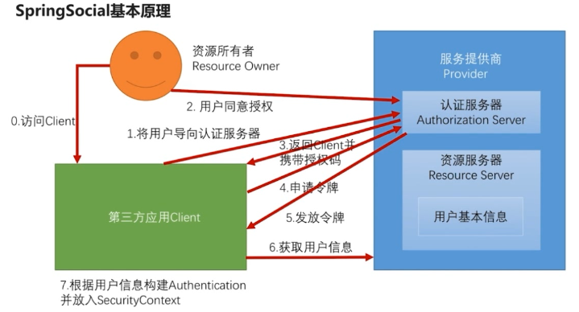
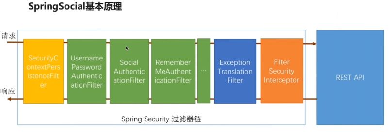
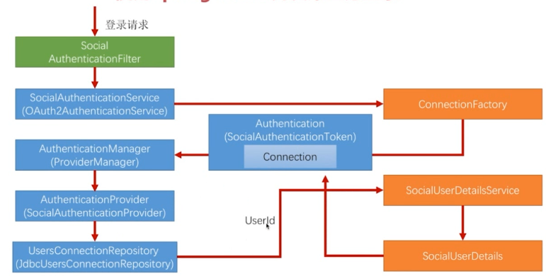
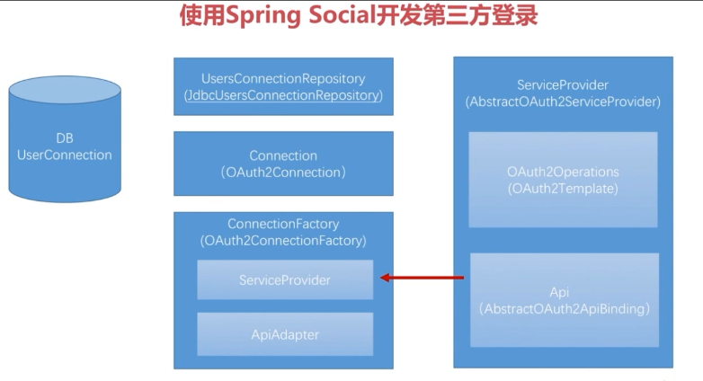

<!DOCTYPE html>
<html>
  <head>
    <meta charset="utf-8">
    <meta http-equiv="X-UA-Compatible" content="IE=edge">
    <meta name="viewport" content="width=device-width, initial-scale=1, maximum-scale=1">
    
    <meta name="theme-color" content="#33363b">
    <meta name="msapplication-TileColor" content="#33363b">
    
    
    
    <meta name="keywords" content="Life, ARIA, Hexo">
    
    
    <link rel="apple-touch-icon" sizes="180x180" href="/favicons/apple-touch-icon.png">
    
    
    <link rel="icon" type="image/png" sizes="192x192" href="/favicons/android-chrome-192x192.png">
    
    
    <link rel="icon" type="image/png" sizes="32x32" href="/favicons/favicon-32x32.png">
    
    
    <link rel="icon" type="image/png" sizes="16x16" href="/favicons/favicon-16x16.png">
    
    
    <link rel="mask-icon" href="/favicons/safari-pinned-tab.svg" color="#33363b">
    
    
    <link rel="manifest" href="/favicons/site.webmanifest">
    
    
    <meta name="msapplication-config" content="/favicons/browserconfig.xml">
    
    
    <link rel="alternate" href="/atom.xml" title="程序猿的日常" type="application/atom+xml" />
    
    
    <link rel="shortcut icon" type="image/x-icon" href="/favicons/favicon.ico">
    
    
    <link rel="stylesheet" type="text/css" href="/css/normalize.css">
    <link rel="stylesheet" type="text/css" href="/css/index.css">
    
    <link rel="stylesheet" type="text/css" href="/css/sidebar.css">
    
    
<link rel="stylesheet" type="text/css" href="/css/page.css">
<link rel="stylesheet" type="text/css" href="/css/post.css">

    <link rel="stylesheet" type="text/css" href="/css/custom.css">
    <link rel="stylesheet" type="text/css" href="/css/atom-one-dark.css">
    <link rel="stylesheet" type="text/css" href="/css/lightgallery.min.css">
    <script type="text/javascript" src="/js/jquery.min.js"></script>
    <script defer type="text/javascript" src="/js/util.js"></script>
    <script defer type="text/javascript" src="/js/scrollspy.js"></script>
    <script defer type="text/javascript" src="/js/fontawesome-all.min.js"></script>
    <script defer type="text/javascript" src="/js/lightgallery.min.js"></script>
    <script defer type="text/javascript" src="/js/lg-fullscreen.min.js"></script>
    <script defer type="text/javascript" src="/js/lg-hash.min.js"></script>
    <script defer type="text/javascript" src="/js/lg-pager.min.js"></script>
    <script defer type="text/javascript" src="/js/lg-thumbnail.min.js"></script>
    <script defer type="text/javascript" src="/js/lg-zoom.min.js"></script>
    
    <script defer src="/js/busuanzi.pure.mini.js"></script>
    
    
    <script defer type="text/javascript" src="/js/search.js"></script>
    <script type="text/javascript">
    $(document).ready(function () {
      var searchPath = "search.xml";
      if (searchPath.length === 0) {
        searchPath = "search.xml";
      }
      var path = "/" + searchPath;
      searchFunc(path, "search-input", "search-result");
    });
    </script>
    
    
    <script defer type="text/javascript" src="/js/index.js"></script>
    
    <script defer type="text/javascript" src="/js/custom.js"></script>
    <title>使用 Maven Module 搭建spring boot项目（整合Spring Security、Spring Social、spring OAuth）三 | 程序猿的日常</title>
  </head>
  <body itemscope itemtype="http://schema.org/WebPage" lang="default"  data-spy="scroll" data-target=".list-group">
    
<header id="header" class="header" style="background: #33363b;">
  <div class="container">
    <div class="header-container">
      <div class="header-title">
        <h1 class="title"><a href="/">程序猿的日常</a></h1>
        <h2 class="subtitle"></h2>
      </div>
      <div class="logo">
        
      </div>
    </div>
    
<nav id="nav" class="nav">
  <a id="nav-toggle" class="nav-toggle"><i class="fas fa-bars"></i></a>
  <ul id="menu">
    
    <li><a href="/">首页</a></li>
    
    <li><a href="/archives/">归档</a></li>
    
  </ul>
</nav>


  </div>
</header>


    <main id="main" class="main">
      <div class="container">
        <div class="main-container">
          <div class="content">
            
<div id="post" class="post">
  
  <article class="post-container card" itemscope itemtype="http://schema.org/Article">
    <div class="post-block">
      <link itemprop="mainEntityOfPage" href="http://yoursite.com/2018/07/12/spring_security/3.SpringSecuritySocial/">
      <span hidden itemprop="author" itemscope itemtype="http://schema.org/Person">
       <meta itemprop="name" content="龙门小左">
       <meta itemprop="description" content="">
       <meta itemprop="image" content="/images/avatar.png">
      </span>
      <span hidden itemprop="publisher" itemscope itemtype="http://schema.org/Organization">
       <meta itemprop="name" content="程序猿的日常">
      </span>
    </div>
    <header class="post-header">
      <h1 class="post-title" itemprop="name headline">使用 Maven Module 搭建spring boot项目（整合Spring Security、Spring Social、spring OAuth）三</h1>
      <div class="post-meta">
        
        <span class="post-date">
          <i class="far fa-calendar-plus"></i><span><time title="post-date" itemprop="dateCreated datePublished" datetime="2018-07-12T10:00:00+08:00">2018-07-12 10:00:00</time></span>
        </span>
        
        
        
      </div>
    </header>
    <main class="post-main" itemprop="articleBody">
      <h1 id="使用-Maven-Module-搭建spring-boot项目（整合Spring-Security、Spring-Social、spring-OAuth）三"><a href="#使用-Maven-Module-搭建spring-boot项目（整合Spring-Security、Spring-Social、spring-OAuth）三" class="headerlink" title="使用 Maven Module 搭建spring boot项目（整合Spring Security、Spring Social、spring OAuth）三"></a>使用 Maven Module 搭建spring boot项目（整合Spring Security、Spring Social、spring OAuth）三</h1><table>
<thead>
<tr>
<th>版本号</th>
<th>作者</th>
<th>日期</th>
<th>备注</th>
</tr>
</thead>
<tbody>
<tr>
<td>V0.1</td>
<td>谭键胜</td>
<td>2018-04-03</td>
<td>初稿</td>
</tr>
</tbody>
</table>
<hr>
<h2 id="Spring-Social-开发第三方登陆"><a href="#Spring-Social-开发第三方登陆" class="headerlink" title="Spring Social 开发第三方登陆"></a>Spring Social 开发第三方登陆</h2><h3 id="OAuth-2-0-协议简介"><a href="#OAuth-2-0-协议简介" class="headerlink" title="OAuth 2.0 协议简介"></a>OAuth 2.0 协议简介</h3><h4 id="协议要解决的问题"><a href="#协议要解决的问题" class="headerlink" title="协议要解决的问题"></a>协议要解决的问题</h4><p>某平台（如优酷）可以使用第三方（微博）登陆进入系统，关于第三方应用授权会产生以下问题</p>
<ol>
<li>优酷应用可以访问用户在微博上的所有数据</li>
<li>用户只有修改密码才能收回授权</li>
<li>密码泄露的可能性大大提高</li>
</ol>
<h4 id="协议中的各种角色与运行流程"><a href="#协议中的各种角色与运行流程" class="headerlink" title="协议中的各种角色与运行流程"></a>协议中的各种角色与运行流程</h4><p>角色包括：资源所有者、客户端、服务提供商（认证服务器、资源服务器）</p>
<p></p>
<h4 id="协议中的授权模式"><a href="#协议中的授权模式" class="headerlink" title="协议中的授权模式"></a>协议中的授权模式</h4><ol>
<li>授权码模式（Authorization Code）</li>
</ol>
<p>授权码模式是目前最常使用的模式，以下是它的流程</p>
<p></p>
<ol>
<li>密码模式（Resource Owner Password Credentials）</li>
<li>客户端模式（Client Credentials）</li>
<li>简化模式（Implicit）</li>
</ol>
<hr>
<h3 id="Spring-Social"><a href="#Spring-Social" class="headerlink" title="Spring Social"></a>Spring Social</h3><h4 id="基本原理"><a href="#基本原理" class="headerlink" title="基本原理"></a>基本原理</h4><h5 id="Spring-Social-基本流程"><a href="#Spring-Social-基本流程" class="headerlink" title="Spring Social 基本流程"></a>Spring Social 基本流程</h5><p></p>
<p>从第一步到第五步都是标准的OAuth协议流程，第六、七步是个性化流程</p>
<h5 id="Spring-Social-过滤器链"><a href="#Spring-Social-过滤器链" class="headerlink" title="Spring Social 过滤器链"></a>Spring Social 过滤器链</h5><p><code>SocialAuthenticationFilter</code>：处理社交登陆认证过滤器</p>
<p></p>
<h5 id="Spring-Social运行流程"><a href="#Spring-Social运行流程" class="headerlink" title="Spring Social运行流程"></a>Spring Social运行流程</h5><p></p>
<h5 id="Spring-Social-各种角色"><a href="#Spring-Social-各种角色" class="headerlink" title="Spring Social 各种角色"></a>Spring Social 各种角色</h5><ol>
<li>DBUserConnection ： 数据库</li>
<li>UserConnectionRepository（JdbcUserConnectionRepository）：用户信息连接仓库</li>
<li>Connection（OAuth2Connection）：由连接工厂创建</li>
<li>ConnectionFactory（OAuth2ConnectionFactory）：连接工厂</li>
</ol>
<p>组成：1）ServiceProvider 定义服务提供商</p>
<p>​        2）ApiAdapter ：用与匹配Api中返回的用户信息</p>
<ol>
<li>ServiceProvider（AbstractOAuth2ServiceProvider）：服务提供商</li>
</ol>
<p>组成：1）OAuth2Operations（OAuth2Template）：用于与服务提供商交互</p>
<p>​        2）Api（AbstractOAuth2ApiBingding）：定义服务提供商获取用户信息</p>
<p></p>
<h4 id="UsersConnectionRepository"><a href="#UsersConnectionRepository" class="headerlink" title="UsersConnectionRepository"></a>UsersConnectionRepository</h4><h5 id="数据库表"><a href="#数据库表" class="headerlink" title="数据库表"></a>数据库表</h5><figure class="highlight sql"><table><tr><td class="gutter"><pre><span class="line">1</span><br><span class="line">2</span><br><span class="line">3</span><br><span class="line">4</span><br><span class="line">5</span><br><span class="line">6</span><br><span class="line">7</span><br><span class="line">8</span><br><span class="line">9</span><br><span class="line">10</span><br><span class="line">11</span><br><span class="line">12</span><br><span class="line">13</span><br></pre></td><td class="code"><pre><span class="line"><span class="keyword">create</span> <span class="keyword">table</span> vic_UserConnection (userId <span class="built_in">varchar</span>(<span class="number">255</span>) <span class="keyword">not</span> <span class="literal">null</span>,</span><br><span class="line">    providerId <span class="built_in">varchar</span>(<span class="number">255</span>) <span class="keyword">not</span> <span class="literal">null</span>,</span><br><span class="line">    providerUserId <span class="built_in">varchar</span>(<span class="number">255</span>),</span><br><span class="line">    <span class="keyword">rank</span> <span class="built_in">int</span> <span class="keyword">not</span> <span class="literal">null</span>,</span><br><span class="line">    displayName <span class="built_in">varchar</span>(<span class="number">255</span>),</span><br><span class="line">    profileUrl <span class="built_in">varchar</span>(<span class="number">512</span>),</span><br><span class="line">    imageUrl <span class="built_in">varchar</span>(<span class="number">512</span>),</span><br><span class="line">    accessToken <span class="built_in">varchar</span>(<span class="number">512</span>) <span class="keyword">not</span> <span class="literal">null</span>,</span><br><span class="line">    secret <span class="built_in">varchar</span>(<span class="number">512</span>),</span><br><span class="line">    refreshToken <span class="built_in">varchar</span>(<span class="number">512</span>),</span><br><span class="line">    expireTime <span class="built_in">bigint</span>,</span><br><span class="line">    primary <span class="keyword">key</span> (userId, providerId, providerUserId));</span><br><span class="line"><span class="keyword">create</span> <span class="keyword">unique</span> <span class="keyword">index</span> vic_UserConnectionRank <span class="keyword">on</span> vic_UserConnection(userId, providerId, <span class="keyword">rank</span>);</span><br></pre></td></tr></table></figure>
<h5 id="属性类创建"><a href="#属性类创建" class="headerlink" title="属性类创建"></a>属性类创建</h5><ol>
<li>Spring Social 提供的一个社交配置类</li>
</ol>
<figure class="highlight java"><table><tr><td class="gutter"><pre><span class="line">1</span><br><span class="line">2</span><br><span class="line">3</span><br><span class="line">4</span><br><span class="line">5</span><br><span class="line">6</span><br><span class="line">7</span><br><span class="line">8</span><br><span class="line">9</span><br><span class="line">10</span><br><span class="line">11</span><br><span class="line">12</span><br><span class="line">13</span><br><span class="line">14</span><br><span class="line">15</span><br><span class="line">16</span><br><span class="line">17</span><br><span class="line">18</span><br><span class="line">19</span><br><span class="line">20</span><br><span class="line">21</span><br><span class="line">22</span><br><span class="line">23</span><br></pre></td><td class="code"><pre><span class="line"><span class="keyword">public</span> <span class="keyword">abstract</span> <span class="class"><span class="keyword">class</span> <span class="title">SocialProperties</span> </span>&#123;</span><br><span class="line">    <span class="keyword">private</span> String appId;</span><br><span class="line">    <span class="keyword">private</span> String appSecret;</span><br><span class="line"></span><br><span class="line">    <span class="function"><span class="keyword">public</span> <span class="title">SocialProperties</span><span class="params">()</span> </span>&#123;</span><br><span class="line">    &#125;</span><br><span class="line"></span><br><span class="line">    <span class="function"><span class="keyword">public</span> String <span class="title">getAppId</span><span class="params">()</span> </span>&#123;</span><br><span class="line">        <span class="keyword">return</span> <span class="keyword">this</span>.appId;</span><br><span class="line">    &#125;</span><br><span class="line"></span><br><span class="line">    <span class="function"><span class="keyword">public</span> <span class="keyword">void</span> <span class="title">setAppId</span><span class="params">(String appId)</span> </span>&#123;</span><br><span class="line">        <span class="keyword">this</span>.appId = appId;</span><br><span class="line">    &#125;</span><br><span class="line"></span><br><span class="line">    <span class="function"><span class="keyword">public</span> String <span class="title">getAppSecret</span><span class="params">()</span> </span>&#123;</span><br><span class="line">        <span class="keyword">return</span> <span class="keyword">this</span>.appSecret;</span><br><span class="line">    &#125;</span><br><span class="line"></span><br><span class="line">    <span class="function"><span class="keyword">public</span> <span class="keyword">void</span> <span class="title">setAppSecret</span><span class="params">(String appSecret)</span> </span>&#123;</span><br><span class="line">        <span class="keyword">this</span>.appSecret = appSecret;</span><br><span class="line">    &#125;</span><br><span class="line">&#125;</span><br></pre></td></tr></table></figure>
<ol start="2">
<li>定义QQ和微信的属性类</li>
</ol>
<figure class="highlight java"><table><tr><td class="gutter"><pre><span class="line">1</span><br><span class="line">2</span><br><span class="line">3</span><br><span class="line">4</span><br><span class="line">5</span><br><span class="line">6</span><br><span class="line">7</span><br><span class="line">8</span><br><span class="line">9</span><br><span class="line">10</span><br><span class="line">11</span><br><span class="line">12</span><br><span class="line">13</span><br><span class="line">14</span><br><span class="line">15</span><br><span class="line">16</span><br><span class="line">17</span><br><span class="line">18</span><br></pre></td><td class="code"><pre><span class="line"><span class="comment">/**</span></span><br><span class="line"><span class="comment"> * 配置QQ登陆属性</span></span><br><span class="line"><span class="comment"> * 父类中提供appId、appSecret;</span></span><br><span class="line"><span class="comment"> * created by chuIllusions_tan 20180302</span></span><br><span class="line"><span class="comment"> */</span></span><br><span class="line"><span class="keyword">public</span> <span class="class"><span class="keyword">class</span> <span class="title">QQProperties</span> <span class="keyword">extends</span> <span class="title">SocialProperties</span> </span>&#123;</span><br><span class="line">	</span><br><span class="line">	<span class="keyword">private</span> String providerId = <span class="string">"qq"</span>;</span><br><span class="line"></span><br><span class="line">	<span class="function"><span class="keyword">public</span> String <span class="title">getProviderId</span><span class="params">()</span> </span>&#123;</span><br><span class="line">		<span class="keyword">return</span> providerId;</span><br><span class="line">	&#125;</span><br><span class="line"></span><br><span class="line">	<span class="function"><span class="keyword">public</span> <span class="keyword">void</span> <span class="title">setProviderId</span><span class="params">(String providerId)</span> </span>&#123;</span><br><span class="line">		<span class="keyword">this</span>.providerId = providerId;</span><br><span class="line">	&#125;</span><br><span class="line">	</span><br><span class="line">&#125;</span><br></pre></td></tr></table></figure>
<figure class="highlight java"><table><tr><td class="gutter"><pre><span class="line">1</span><br><span class="line">2</span><br><span class="line">3</span><br><span class="line">4</span><br><span class="line">5</span><br><span class="line">6</span><br><span class="line">7</span><br><span class="line">8</span><br><span class="line">9</span><br><span class="line">10</span><br><span class="line">11</span><br><span class="line">12</span><br><span class="line">13</span><br><span class="line">14</span><br><span class="line">15</span><br><span class="line">16</span><br><span class="line">17</span><br><span class="line">18</span><br><span class="line">19</span><br><span class="line">20</span><br><span class="line">21</span><br><span class="line">22</span><br><span class="line">23</span><br><span class="line">24</span><br><span class="line">25</span><br><span class="line">26</span><br><span class="line">27</span><br><span class="line">28</span><br></pre></td><td class="code"><pre><span class="line"><span class="comment">/**</span></span><br><span class="line"><span class="comment"> * 微信属性</span></span><br><span class="line"><span class="comment"> *</span></span><br><span class="line"><span class="comment"> * created by chuIllusions_tan on 20280308</span></span><br><span class="line"><span class="comment"> */</span></span><br><span class="line"><span class="keyword">public</span> <span class="class"><span class="keyword">class</span> <span class="title">WeixinProperties</span> <span class="keyword">extends</span> <span class="title">SocialProperties</span> </span>&#123;</span><br><span class="line">	</span><br><span class="line">	<span class="comment">/**</span></span><br><span class="line"><span class="comment">	 * 第三方id，用来决定发起第三方登录的url，默认是 weixin。</span></span><br><span class="line"><span class="comment">	 */</span></span><br><span class="line">	<span class="keyword">private</span> String providerId = <span class="string">"weixin"</span>;</span><br><span class="line"></span><br><span class="line">	<span class="comment">/**</span></span><br><span class="line"><span class="comment">	 * <span class="doctag">@return</span> the providerId</span></span><br><span class="line"><span class="comment">	 */</span></span><br><span class="line">	<span class="function"><span class="keyword">public</span> String <span class="title">getProviderId</span><span class="params">()</span> </span>&#123;</span><br><span class="line">		<span class="keyword">return</span> providerId;</span><br><span class="line">	&#125;</span><br><span class="line"></span><br><span class="line">	<span class="comment">/**</span></span><br><span class="line"><span class="comment">	 * <span class="doctag">@param</span> providerId the providerId to set</span></span><br><span class="line"><span class="comment">	 */</span></span><br><span class="line">	<span class="function"><span class="keyword">public</span> <span class="keyword">void</span> <span class="title">setProviderId</span><span class="params">(String providerId)</span> </span>&#123;</span><br><span class="line">		<span class="keyword">this</span>.providerId = providerId;</span><br><span class="line">	&#125;</span><br><span class="line">	</span><br><span class="line"></span><br><span class="line">&#125;</span><br></pre></td></tr></table></figure>
<ol start="3">
<li>建立社交配置类，并加入SecurityProperties核心属性配置中</li>
</ol>
<figure class="highlight java"><table><tr><td class="gutter"><pre><span class="line">1</span><br><span class="line">2</span><br><span class="line">3</span><br><span class="line">4</span><br><span class="line">5</span><br><span class="line">6</span><br><span class="line">7</span><br><span class="line">8</span><br><span class="line">9</span><br><span class="line">10</span><br><span class="line">11</span><br><span class="line">12</span><br><span class="line">13</span><br><span class="line">14</span><br><span class="line">15</span><br><span class="line">16</span><br><span class="line">17</span><br><span class="line">18</span><br><span class="line">19</span><br><span class="line">20</span><br><span class="line">21</span><br><span class="line">22</span><br><span class="line">23</span><br><span class="line">24</span><br><span class="line">25</span><br><span class="line">26</span><br><span class="line">27</span><br><span class="line">28</span><br><span class="line">29</span><br><span class="line">30</span><br><span class="line">31</span><br><span class="line">32</span><br><span class="line">33</span><br><span class="line">34</span><br><span class="line">35</span><br><span class="line">36</span><br><span class="line">37</span><br></pre></td><td class="code"><pre><span class="line"><span class="comment">/**</span></span><br><span class="line"><span class="comment"> * 社交登陆配置</span></span><br><span class="line"><span class="comment"> * created by chuIllusions_tan 20180302</span></span><br><span class="line"><span class="comment"> */</span></span><br><span class="line"><span class="keyword">public</span> <span class="class"><span class="keyword">class</span> <span class="title">SocialProperties</span> </span>&#123;</span><br><span class="line"></span><br><span class="line">	<span class="keyword">private</span> QQProperties qq = <span class="keyword">new</span> QQProperties();</span><br><span class="line"></span><br><span class="line">	<span class="keyword">private</span> WeixinProperties weixin = <span class="keyword">new</span> WeixinProperties();</span><br><span class="line"></span><br><span class="line">    <span class="comment">//默认的处理社交登陆的URL</span></span><br><span class="line">	<span class="keyword">private</span> String filterProcessesUrl = <span class="string">"/auth"</span>;</span><br><span class="line"></span><br><span class="line">	<span class="function"><span class="keyword">public</span> QQProperties <span class="title">getQq</span><span class="params">()</span> </span>&#123;</span><br><span class="line">		<span class="keyword">return</span> qq;</span><br><span class="line">	&#125;</span><br><span class="line"></span><br><span class="line">	<span class="function"><span class="keyword">public</span> <span class="keyword">void</span> <span class="title">setQq</span><span class="params">(QQProperties qq)</span> </span>&#123;</span><br><span class="line">		<span class="keyword">this</span>.qq = qq;</span><br><span class="line">	&#125;</span><br><span class="line"></span><br><span class="line">	<span class="function"><span class="keyword">public</span> String <span class="title">getFilterProcessesUrl</span><span class="params">()</span> </span>&#123;</span><br><span class="line">		<span class="keyword">return</span> filterProcessesUrl;</span><br><span class="line">	&#125;</span><br><span class="line"></span><br><span class="line">	<span class="function"><span class="keyword">public</span> <span class="keyword">void</span> <span class="title">setFilterProcessesUrl</span><span class="params">(String filterProcessesUrl)</span> </span>&#123;</span><br><span class="line">		<span class="keyword">this</span>.filterProcessesUrl = filterProcessesUrl;</span><br><span class="line">	&#125;</span><br><span class="line"></span><br><span class="line">	<span class="function"><span class="keyword">public</span> WeixinProperties <span class="title">getWeixin</span><span class="params">()</span> </span>&#123;</span><br><span class="line">		<span class="keyword">return</span> weixin;</span><br><span class="line">	&#125;</span><br><span class="line"></span><br><span class="line">	<span class="function"><span class="keyword">public</span> <span class="keyword">void</span> <span class="title">setWeixin</span><span class="params">(WeixinProperties weixin)</span> </span>&#123;</span><br><span class="line">		<span class="keyword">this</span>.weixin = weixin;</span><br><span class="line">	&#125;</span><br><span class="line">&#125;</span><br></pre></td></tr></table></figure>
<p><strong>SecurityProperties.java</strong>中加入属性配置如下</p>
<figure class="highlight java"><table><tr><td class="gutter"><pre><span class="line">1</span><br><span class="line">2</span><br><span class="line">3</span><br><span class="line">4</span><br></pre></td><td class="code"><pre><span class="line"><span class="comment">/**</span></span><br><span class="line"><span class="comment"> * 社交登陆的相关配置,配置名:turing.security.social</span></span><br><span class="line"><span class="comment"> */</span></span><br><span class="line"><span class="keyword">private</span> SocialProperties social = <span class="keyword">new</span> SocialProperties();</span><br></pre></td></tr></table></figure>
<ol start="4">
<li>社交用户信息回显</li>
</ol>
<figure class="highlight java"><table><tr><td class="gutter"><pre><span class="line">1</span><br><span class="line">2</span><br><span class="line">3</span><br><span class="line">4</span><br><span class="line">5</span><br><span class="line">6</span><br><span class="line">7</span><br><span class="line">8</span><br><span class="line">9</span><br><span class="line">10</span><br><span class="line">11</span><br><span class="line">12</span><br><span class="line">13</span><br><span class="line">14</span><br><span class="line">15</span><br><span class="line">16</span><br><span class="line">17</span><br><span class="line">18</span><br><span class="line">19</span><br><span class="line">20</span><br><span class="line">21</span><br><span class="line">22</span><br><span class="line">23</span><br><span class="line">24</span><br><span class="line">25</span><br><span class="line">26</span><br><span class="line">27</span><br><span class="line">28</span><br><span class="line">29</span><br><span class="line">30</span><br><span class="line">31</span><br><span class="line">32</span><br><span class="line">33</span><br><span class="line">34</span><br><span class="line">35</span><br><span class="line">36</span><br><span class="line">37</span><br><span class="line">38</span><br><span class="line">39</span><br><span class="line">40</span><br><span class="line">41</span><br><span class="line">42</span><br><span class="line">43</span><br><span class="line">44</span><br><span class="line">45</span><br><span class="line">46</span><br><span class="line">47</span><br><span class="line">48</span><br></pre></td><td class="code"><pre><span class="line"><span class="comment">/**</span></span><br><span class="line"><span class="comment"> * 简单的社交用户信息,用户页面回显</span></span><br><span class="line"><span class="comment"> *</span></span><br><span class="line"><span class="comment"> * created by chuIllusions_tan on 20180308</span></span><br><span class="line"><span class="comment"> */</span></span><br><span class="line"><span class="keyword">public</span> <span class="class"><span class="keyword">class</span> <span class="title">SocialUserInfo</span> </span>&#123;</span><br><span class="line">	</span><br><span class="line">	<span class="keyword">private</span> String providerId;</span><br><span class="line">	</span><br><span class="line">	<span class="keyword">private</span> String providerUserId;</span><br><span class="line">	</span><br><span class="line">	<span class="keyword">private</span> String nickname;</span><br><span class="line">	</span><br><span class="line">	<span class="keyword">private</span> String headimg;</span><br><span class="line"></span><br><span class="line">	<span class="function"><span class="keyword">public</span> String <span class="title">getProviderId</span><span class="params">()</span> </span>&#123;</span><br><span class="line">		<span class="keyword">return</span> providerId;</span><br><span class="line">	&#125;</span><br><span class="line"></span><br><span class="line">	<span class="function"><span class="keyword">public</span> <span class="keyword">void</span> <span class="title">setProviderId</span><span class="params">(String providerId)</span> </span>&#123;</span><br><span class="line">		<span class="keyword">this</span>.providerId = providerId;</span><br><span class="line">	&#125;</span><br><span class="line"></span><br><span class="line">	<span class="function"><span class="keyword">public</span> String <span class="title">getProviderUserId</span><span class="params">()</span> </span>&#123;</span><br><span class="line">		<span class="keyword">return</span> providerUserId;</span><br><span class="line">	&#125;</span><br><span class="line"></span><br><span class="line">	<span class="function"><span class="keyword">public</span> <span class="keyword">void</span> <span class="title">setProviderUserId</span><span class="params">(String providerUserId)</span> </span>&#123;</span><br><span class="line">		<span class="keyword">this</span>.providerUserId = providerUserId;</span><br><span class="line">	&#125;</span><br><span class="line"></span><br><span class="line">	<span class="function"><span class="keyword">public</span> String <span class="title">getNickname</span><span class="params">()</span> </span>&#123;</span><br><span class="line">		<span class="keyword">return</span> nickname;</span><br><span class="line">	&#125;</span><br><span class="line"></span><br><span class="line">	<span class="function"><span class="keyword">public</span> <span class="keyword">void</span> <span class="title">setNickname</span><span class="params">(String nickname)</span> </span>&#123;</span><br><span class="line">		<span class="keyword">this</span>.nickname = nickname;</span><br><span class="line">	&#125;</span><br><span class="line"></span><br><span class="line">	<span class="function"><span class="keyword">public</span> String <span class="title">getHeadimg</span><span class="params">()</span> </span>&#123;</span><br><span class="line">		<span class="keyword">return</span> headimg;</span><br><span class="line">	&#125;</span><br><span class="line"></span><br><span class="line">	<span class="function"><span class="keyword">public</span> <span class="keyword">void</span> <span class="title">setHeadimg</span><span class="params">(String headimg)</span> </span>&#123;</span><br><span class="line">		<span class="keyword">this</span>.headimg = headimg;</span><br><span class="line">	&#125;</span><br><span class="line">	</span><br><span class="line">&#125;</span><br></pre></td></tr></table></figure>
<h4 id="SocialUserDetailsService"><a href="#SocialUserDetailsService" class="headerlink" title="SocialUserDetailsService"></a>SocialUserDetailsService</h4><p>开启社交登陆，需要实现<code>SocialUserDetailsService</code>接口，开启社交用户匹配系统用户的查询</p>
<figure class="highlight java"><table><tr><td class="gutter"><pre><span class="line">1</span><br><span class="line">2</span><br><span class="line">3</span><br><span class="line">4</span><br><span class="line">5</span><br><span class="line">6</span><br><span class="line">7</span><br><span class="line">8</span><br><span class="line">9</span><br><span class="line">10</span><br><span class="line">11</span><br><span class="line">12</span><br><span class="line">13</span><br><span class="line">14</span><br><span class="line">15</span><br><span class="line">16</span><br><span class="line">17</span><br><span class="line">18</span><br><span class="line">19</span><br><span class="line">20</span><br><span class="line">21</span><br><span class="line">22</span><br><span class="line">23</span><br><span class="line">24</span><br><span class="line">25</span><br><span class="line">26</span><br><span class="line">27</span><br><span class="line">28</span><br><span class="line">29</span><br><span class="line">30</span><br><span class="line">31</span><br><span class="line">32</span><br><span class="line">33</span><br><span class="line">34</span><br><span class="line">35</span><br><span class="line">36</span><br><span class="line">37</span><br><span class="line">38</span><br><span class="line">39</span><br><span class="line">40</span><br><span class="line">41</span><br><span class="line">42</span><br><span class="line">43</span><br><span class="line">44</span><br><span class="line">45</span><br><span class="line">46</span><br><span class="line">47</span><br><span class="line">48</span><br></pre></td><td class="code"><pre><span class="line"><span class="comment">/**</span></span><br><span class="line"><span class="comment"> * 自定义实现 spring security 验证逻辑</span></span><br><span class="line"><span class="comment"> * created by chuIllusions_tan on 2018/2/27.</span></span><br><span class="line"><span class="comment"> */</span></span><br><span class="line"><span class="meta">@Service</span></span><br><span class="line"><span class="keyword">public</span> <span class="class"><span class="keyword">class</span> <span class="title">ForecastUserDetailsServiceImpl</span> <span class="keyword">implements</span> <span class="title">UserDetailsService</span>,<span class="title">SocialUserDetailsService</span> </span>&#123;</span><br><span class="line"></span><br><span class="line">    <span class="keyword">private</span> Logger logger = LoggerFactory.getLogger(<span class="keyword">this</span>.getClass());</span><br><span class="line"></span><br><span class="line">    <span class="meta">@Autowired</span></span><br><span class="line">    <span class="keyword">private</span> PasswordEncoder passwordEncoder;</span><br><span class="line"></span><br><span class="line">    <span class="meta">@Autowired</span></span><br><span class="line">    <span class="keyword">private</span> UserMapper userMapper;</span><br><span class="line"></span><br><span class="line">    <span class="comment">/**</span></span><br><span class="line"><span class="comment">     * UserDetailsService接口实现方法</span></span><br><span class="line"><span class="comment">     */</span></span><br><span class="line">    <span class="meta">@Override</span></span><br><span class="line">    <span class="function"><span class="keyword">public</span> UserDetails <span class="title">loadUserByUsername</span><span class="params">(String username)</span> <span class="keyword">throws</span> UsernameNotFoundException </span>&#123;</span><br><span class="line">        <span class="comment">//spring security框架提供的一个实现了UserDetails接口的实现类</span></span><br><span class="line">        <span class="comment">//dao查询username信息</span></span><br><span class="line">        SystemUser user = userMapper.findSystemUserByUsername(username);</span><br><span class="line">        <span class="keyword">if</span> (user == <span class="keyword">null</span>)&#123;</span><br><span class="line">            <span class="comment">//AbstractUserDetailsAuthenticationProvider把UsernameNotFoundException包装其他异常，因为AbstractUserDetailsAuthenticationProvider.hideUserNotFoundExceptions=true</span></span><br><span class="line">            <span class="keyword">throw</span> <span class="keyword">new</span> UsernameNotFoundException(<span class="string">"无法找到用户名为:"</span> + username + <span class="string">"的用户"</span>);</span><br><span class="line">        &#125;</span><br><span class="line">        user.setPassword(passwordEncoder.encode(user.getPassword()));</span><br><span class="line">        <span class="comment">//三个参数:username,password,authorities：授权</span></span><br><span class="line">        <span class="comment">//分割String类型为授权集合</span></span><br><span class="line">        <span class="keyword">return</span> <span class="keyword">new</span> User(username,user.getPassword(), AuthorityUtils.commaSeparatedStringToAuthorityList(<span class="keyword">super</span>));</span><br><span class="line">    &#125;</span><br><span class="line"></span><br><span class="line">    <span class="comment">/**</span></span><br><span class="line"><span class="comment">     * SocialUserDetailsService接口实现方法</span></span><br><span class="line"><span class="comment">     * userId对应UsersConnectionRepository表中的UserId</span></span><br><span class="line"><span class="comment">     *</span></span><br><span class="line"><span class="comment">     */</span></span><br><span class="line">    <span class="meta">@Override</span></span><br><span class="line">    <span class="function"><span class="keyword">public</span> SocialUserDetails <span class="title">loadUserByUserId</span><span class="params">(String userId)</span> <span class="keyword">throws</span> UsernameNotFoundException </span>&#123;</span><br><span class="line">        SystemUser user = userMapper.findSystemUserByUsername(userId);</span><br><span class="line">        <span class="keyword">if</span> (user == <span class="keyword">null</span>)&#123;</span><br><span class="line">            <span class="comment">//AbstractUserDetailsAuthenticationProvider把UsernameNotFoundException包装其他异常，因为AbstractUserDetailsAuthenticationProvider.hideUserNotFoundExceptions=true</span></span><br><span class="line">            <span class="keyword">throw</span> <span class="keyword">new</span> UsernameNotFoundException(<span class="string">"无法找到用户名为:"</span> + userId + <span class="string">"的用户"</span>);</span><br><span class="line">        &#125;</span><br><span class="line">        <span class="keyword">return</span> <span class="keyword">new</span> SocialUser(userId,user.getPassword(),AuthorityUtils.commaSeparatedStringToAuthorityList(<span class="keyword">super</span>));</span><br><span class="line">    &#125;</span><br><span class="line">&#125;</span><br></pre></td></tr></table></figure>
<h4 id="QQ登陆"><a href="#QQ登陆" class="headerlink" title="QQ登陆"></a>QQ登陆</h4><h5 id="构造ServiceProvider"><a href="#构造ServiceProvider" class="headerlink" title="构造ServiceProvider"></a>构造ServiceProvider</h5><h6 id="API"><a href="#API" class="headerlink" title="API"></a>API</h6><ol>
<li>定义获取用户信息接口</li>
</ol>
<figure class="highlight java"><table><tr><td class="gutter"><pre><span class="line">1</span><br><span class="line">2</span><br><span class="line">3</span><br><span class="line">4</span><br><span class="line">5</span><br><span class="line">6</span><br><span class="line">7</span><br><span class="line">8</span><br><span class="line">9</span><br><span class="line">10</span><br></pre></td><td class="code"><pre><span class="line"><span class="comment">/**</span></span><br><span class="line"><span class="comment"> * 自定义QQ用户信息接口</span></span><br><span class="line"><span class="comment"> *</span></span><br><span class="line"><span class="comment"> * created by chuIllusions_tan 20180302</span></span><br><span class="line"><span class="comment"> */</span></span><br><span class="line"><span class="keyword">public</span> <span class="class"><span class="keyword">interface</span> <span class="title">QQ</span> </span>&#123;</span><br><span class="line">	</span><br><span class="line">	<span class="function">QQUserInfo <span class="title">getUserInfo</span><span class="params">()</span></span>;</span><br><span class="line"></span><br><span class="line">&#125;</span><br></pre></td></tr></table></figure>
<ol start="2">
<li>定义用户信息接口实现类，并继承 Api 接口的子类 AbstractOAuth2ApiBinding</li>
</ol>
<figure class="highlight java"><table><tr><td class="gutter"><pre><span class="line">1</span><br><span class="line">2</span><br><span class="line">3</span><br><span class="line">4</span><br><span class="line">5</span><br><span class="line">6</span><br><span class="line">7</span><br><span class="line">8</span><br><span class="line">9</span><br><span class="line">10</span><br><span class="line">11</span><br><span class="line">12</span><br><span class="line">13</span><br><span class="line">14</span><br><span class="line">15</span><br><span class="line">16</span><br><span class="line">17</span><br><span class="line">18</span><br><span class="line">19</span><br><span class="line">20</span><br><span class="line">21</span><br><span class="line">22</span><br><span class="line">23</span><br><span class="line">24</span><br><span class="line">25</span><br><span class="line">26</span><br><span class="line">27</span><br><span class="line">28</span><br><span class="line">29</span><br><span class="line">30</span><br><span class="line">31</span><br><span class="line">32</span><br><span class="line">33</span><br><span class="line">34</span><br><span class="line">35</span><br><span class="line">36</span><br><span class="line">37</span><br><span class="line">38</span><br><span class="line">39</span><br><span class="line">40</span><br><span class="line">41</span><br><span class="line">42</span><br><span class="line">43</span><br><span class="line">44</span><br><span class="line">45</span><br><span class="line">46</span><br><span class="line">47</span><br><span class="line">48</span><br><span class="line">49</span><br><span class="line">50</span><br><span class="line">51</span><br><span class="line">52</span><br><span class="line">53</span><br><span class="line">54</span><br><span class="line">55</span><br><span class="line">56</span><br></pre></td><td class="code"><pre><span class="line"><span class="comment">/**</span></span><br><span class="line"><span class="comment"> * 用户获取QQ 用户信息</span></span><br><span class="line"><span class="comment"> * QQ API 实现类</span></span><br><span class="line"><span class="comment"> * 所有的API需要继承 AbstractOAuth2ApiBinding 提供access_token属性  RestTemplate用户发送HTTP请求</span></span><br><span class="line"><span class="comment"> * 多例对象，每个用户都拥有一个QQImpl实例</span></span><br><span class="line"><span class="comment"> * created by chuIllusions_tan 20180302</span></span><br><span class="line"><span class="comment"> */</span></span><br><span class="line"><span class="keyword">public</span> <span class="class"><span class="keyword">class</span> <span class="title">QQImpl</span> <span class="keyword">extends</span> <span class="title">AbstractOAuth2ApiBinding</span> <span class="keyword">implements</span> <span class="title">QQ</span> </span>&#123;</span><br><span class="line"></span><br><span class="line">	<span class="keyword">private</span> Logger logger = LoggerFactory.getLogger(<span class="keyword">this</span>.getClass());</span><br><span class="line"></span><br><span class="line">	<span class="comment">//qq根据access_token(令牌)获取openId</span></span><br><span class="line">	<span class="keyword">private</span> <span class="keyword">static</span> <span class="keyword">final</span> String URL_GET_OPENID = <span class="string">"https://graph.qq.com/oauth2.0/me?access_token=%s"</span>;</span><br><span class="line"></span><br><span class="line">	<span class="comment">//获取用户信息</span></span><br><span class="line">	<span class="keyword">private</span> <span class="keyword">static</span> <span class="keyword">final</span> String URL_GET_USERINFO = <span class="string">"https://graph.qq.com/user/get_user_info?oauth_consumer_key=%s&amp;openid=%s"</span>;</span><br><span class="line">	</span><br><span class="line">	<span class="keyword">private</span> String appId;</span><br><span class="line">	</span><br><span class="line">	<span class="keyword">private</span> String openId;</span><br><span class="line"></span><br><span class="line">	<span class="keyword">private</span> ObjectMapper objectMapper = <span class="keyword">new</span> ObjectMapper();</span><br><span class="line"></span><br><span class="line">	<span class="comment">//走完oAuth协议获取到的accessToken</span></span><br><span class="line">	<span class="function"><span class="keyword">public</span> <span class="title">QQImpl</span><span class="params">(String accessToken, String appId)</span> </span>&#123;</span><br><span class="line">		<span class="comment">//设置策略，发送请求时，token以参数形式在请求地址中</span></span><br><span class="line">		<span class="keyword">super</span>(accessToken, TokenStrategy.ACCESS_TOKEN_PARAMETER);</span><br><span class="line">		</span><br><span class="line">		<span class="keyword">this</span>.appId = appId;</span><br><span class="line">		</span><br><span class="line">		String url = String.format(URL_GET_OPENID, accessToken);</span><br><span class="line">		String result = getRestTemplate().getForObject(url, String.class);</span><br><span class="line">		</span><br><span class="line">		logger.info(result);</span><br><span class="line"></span><br><span class="line">		<span class="keyword">this</span>.openId = StringUtils.substringBetween(result, <span class="string">"\"openid\":\""</span>, <span class="string">"\"&#125;"</span>);</span><br><span class="line">	&#125;</span><br><span class="line"></span><br><span class="line">	<span class="meta">@Override</span></span><br><span class="line">	<span class="function"><span class="keyword">public</span> QQUserInfo <span class="title">getUserInfo</span><span class="params">()</span></span>&#123;</span><br><span class="line"></span><br><span class="line">		String url = String.format(URL_GET_USERINFO, appId, openId);</span><br><span class="line">		String result = getRestTemplate().getForObject(url, String.class);</span><br><span class="line"></span><br><span class="line">		logger.info(result);</span><br><span class="line"></span><br><span class="line">		QQUserInfo userInfo = <span class="keyword">null</span>;</span><br><span class="line">		<span class="keyword">try</span> &#123;</span><br><span class="line">			userInfo = objectMapper.readValue(result, QQUserInfo.class);</span><br><span class="line">			userInfo.setOpenId(openId);</span><br><span class="line">			<span class="keyword">return</span> userInfo;</span><br><span class="line">		&#125; <span class="keyword">catch</span> (Exception e) &#123;</span><br><span class="line">			<span class="keyword">throw</span> <span class="keyword">new</span> RuntimeException(<span class="string">"获取用户信息失败"</span>, e);</span><br><span class="line">		&#125;</span><br><span class="line">	&#125;</span><br><span class="line">&#125;</span><br></pre></td></tr></table></figure>
<ol start="3">
<li>定义QQ用户信息，从官网文档中获取返回的用户信息并创建对应实体类</li>
</ol>
<figure class="highlight java"><table><tr><td class="gutter"><pre><span class="line">1</span><br><span class="line">2</span><br><span class="line">3</span><br><span class="line">4</span><br><span class="line">5</span><br><span class="line">6</span><br><span class="line">7</span><br><span class="line">8</span><br><span class="line">9</span><br><span class="line">10</span><br><span class="line">11</span><br><span class="line">12</span><br><span class="line">13</span><br><span class="line">14</span><br><span class="line">15</span><br><span class="line">16</span><br><span class="line">17</span><br><span class="line">18</span><br><span class="line">19</span><br><span class="line">20</span><br><span class="line">21</span><br><span class="line">22</span><br><span class="line">23</span><br><span class="line">24</span><br><span class="line">25</span><br><span class="line">26</span><br><span class="line">27</span><br><span class="line">28</span><br><span class="line">29</span><br><span class="line">30</span><br><span class="line">31</span><br><span class="line">32</span><br><span class="line">33</span><br><span class="line">34</span><br><span class="line">35</span><br><span class="line">36</span><br><span class="line">37</span><br><span class="line">38</span><br><span class="line">39</span><br><span class="line">40</span><br><span class="line">41</span><br><span class="line">42</span><br><span class="line">43</span><br><span class="line">44</span><br><span class="line">45</span><br><span class="line">46</span><br><span class="line">47</span><br><span class="line">48</span><br><span class="line">49</span><br><span class="line">50</span><br><span class="line">51</span><br><span class="line">52</span><br><span class="line">53</span><br><span class="line">54</span><br><span class="line">55</span><br><span class="line">56</span><br><span class="line">57</span><br><span class="line">58</span><br><span class="line">59</span><br><span class="line">60</span><br><span class="line">61</span><br><span class="line">62</span><br><span class="line">63</span><br><span class="line">64</span><br><span class="line">65</span><br><span class="line">66</span><br><span class="line">67</span><br><span class="line">68</span><br><span class="line">69</span><br><span class="line">70</span><br><span class="line">71</span><br><span class="line">72</span><br><span class="line">73</span><br><span class="line">74</span><br><span class="line">75</span><br><span class="line">76</span><br><span class="line">77</span><br><span class="line">78</span><br><span class="line">79</span><br><span class="line">80</span><br><span class="line">81</span><br><span class="line">82</span><br><span class="line">83</span><br><span class="line">84</span><br></pre></td><td class="code"><pre><span class="line"><span class="comment">/**</span></span><br><span class="line"><span class="comment"> * QQ用户信息实体类</span></span><br><span class="line"><span class="comment"> * created by chuIllusions_tan 20180302</span></span><br><span class="line"><span class="comment"> */</span></span><br><span class="line"><span class="keyword">public</span> <span class="class"><span class="keyword">class</span> <span class="title">QQUserInfo</span> </span>&#123;</span><br><span class="line">	</span><br><span class="line">	<span class="comment">/**</span></span><br><span class="line"><span class="comment">	 * 	返回码</span></span><br><span class="line"><span class="comment">	 */</span></span><br><span class="line">	<span class="keyword">private</span> String ret;</span><br><span class="line">	<span class="comment">/**</span></span><br><span class="line"><span class="comment">	 * 如果ret&lt;0，会有相应的错误信息提示，返回数据全部用UTF-8编码。</span></span><br><span class="line"><span class="comment">	 */</span></span><br><span class="line">	<span class="keyword">private</span> String msg;</span><br><span class="line">	<span class="comment">/**</span></span><br><span class="line"><span class="comment">	 * </span></span><br><span class="line"><span class="comment">	 */</span></span><br><span class="line">	<span class="keyword">private</span> String openId;</span><br><span class="line">	<span class="comment">/**</span></span><br><span class="line"><span class="comment">	 * 不知道什么东西，文档上没写，但是实际api返回里有。</span></span><br><span class="line"><span class="comment">	 */</span></span><br><span class="line">	<span class="keyword">private</span> String is_lost;</span><br><span class="line">	<span class="comment">/**</span></span><br><span class="line"><span class="comment">	 * 省(直辖市)</span></span><br><span class="line"><span class="comment">	 */</span></span><br><span class="line">	<span class="keyword">private</span> String province;</span><br><span class="line">	<span class="comment">/**</span></span><br><span class="line"><span class="comment">	 * 市(直辖市区)</span></span><br><span class="line"><span class="comment">	 */</span></span><br><span class="line">	<span class="keyword">private</span> String city;</span><br><span class="line">	<span class="comment">/**</span></span><br><span class="line"><span class="comment">	 * 出生年月</span></span><br><span class="line"><span class="comment">	 */</span></span><br><span class="line">	<span class="keyword">private</span> String year;</span><br><span class="line">	<span class="comment">/**</span></span><br><span class="line"><span class="comment">	 * 	用户在QQ空间的昵称。</span></span><br><span class="line"><span class="comment">	 */</span></span><br><span class="line">	<span class="keyword">private</span> String nickname;</span><br><span class="line">	<span class="comment">/**</span></span><br><span class="line"><span class="comment">	 * 	大小为30×30像素的QQ空间头像URL。</span></span><br><span class="line"><span class="comment">	 */</span></span><br><span class="line">	<span class="keyword">private</span> String figureurl;</span><br><span class="line">	<span class="comment">/**</span></span><br><span class="line"><span class="comment">	 * 	大小为50×50像素的QQ空间头像URL。</span></span><br><span class="line"><span class="comment">	 */</span></span><br><span class="line">	<span class="keyword">private</span> String figureurl_1;</span><br><span class="line">	<span class="comment">/**</span></span><br><span class="line"><span class="comment">	 * 	大小为100×100像素的QQ空间头像URL。</span></span><br><span class="line"><span class="comment">	 */</span></span><br><span class="line">	<span class="keyword">private</span> String figureurl_2;</span><br><span class="line">	<span class="comment">/**</span></span><br><span class="line"><span class="comment">	 * 	大小为40×40像素的QQ头像URL。</span></span><br><span class="line"><span class="comment">	 */</span></span><br><span class="line">	<span class="keyword">private</span> String figureurl_qq_1;</span><br><span class="line">	<span class="comment">/**</span></span><br><span class="line"><span class="comment">	 * 	大小为100×100像素的QQ头像URL。需要注意，不是所有的用户都拥有QQ的100×100的头像，但40×40像素则是一定会有。</span></span><br><span class="line"><span class="comment">	 */</span></span><br><span class="line">	<span class="keyword">private</span> String figureurl_qq_2;</span><br><span class="line">	<span class="comment">/**</span></span><br><span class="line"><span class="comment">	 * 	性别。 如果获取不到则默认返回”男”</span></span><br><span class="line"><span class="comment">	 */</span></span><br><span class="line">	<span class="keyword">private</span> String gender;</span><br><span class="line">	<span class="comment">/**</span></span><br><span class="line"><span class="comment">	 * 	标识用户是否为黄钻用户（0：不是；1：是）。</span></span><br><span class="line"><span class="comment">	 */</span></span><br><span class="line">	<span class="keyword">private</span> String is_yellow_vip;</span><br><span class="line">	<span class="comment">/**</span></span><br><span class="line"><span class="comment">	 * 	标识用户是否为黄钻用户（0：不是；1：是）</span></span><br><span class="line"><span class="comment">	 */</span></span><br><span class="line">	<span class="keyword">private</span> String vip;</span><br><span class="line">	<span class="comment">/**</span></span><br><span class="line"><span class="comment">	 * 	黄钻等级</span></span><br><span class="line"><span class="comment">	 */</span></span><br><span class="line">	<span class="keyword">private</span> String yellow_vip_level;</span><br><span class="line">	<span class="comment">/**</span></span><br><span class="line"><span class="comment">	 * 	黄钻等级</span></span><br><span class="line"><span class="comment">	 */</span></span><br><span class="line">	<span class="keyword">private</span> String level;</span><br><span class="line">	<span class="comment">/**</span></span><br><span class="line"><span class="comment">	 * 标识是否为年费黄钻用户（0：不是； 1：是）</span></span><br><span class="line"><span class="comment">	 */</span></span><br><span class="line">	<span class="keyword">private</span> String is_yellow_year_vip;</span><br><span class="line">	</span><br><span class="line">&#125;</span><br></pre></td></tr></table></figure>
<h6 id="OAuth2Operations"><a href="#OAuth2Operations" class="headerlink" title="OAuth2Operations"></a>OAuth2Operations</h6><p><strong>OAuth2Template.java源码分析</strong></p>
<figure class="highlight java"><table><tr><td class="gutter"><pre><span class="line">1</span><br><span class="line">2</span><br><span class="line">3</span><br><span class="line">4</span><br><span class="line">5</span><br><span class="line">6</span><br><span class="line">7</span><br><span class="line">8</span><br><span class="line">9</span><br><span class="line">10</span><br><span class="line">11</span><br><span class="line">12</span><br><span class="line">13</span><br><span class="line">14</span><br><span class="line">15</span><br><span class="line">16</span><br><span class="line">17</span><br><span class="line">18</span><br><span class="line">19</span><br><span class="line">20</span><br><span class="line">21</span><br><span class="line">22</span><br><span class="line">23</span><br><span class="line">24</span><br><span class="line">25</span><br><span class="line">26</span><br><span class="line">27</span><br><span class="line">28</span><br><span class="line">29</span><br><span class="line">30</span><br><span class="line">31</span><br><span class="line">32</span><br><span class="line">33</span><br><span class="line">34</span><br><span class="line">35</span><br><span class="line">36</span><br><span class="line">37</span><br><span class="line">38</span><br><span class="line">39</span><br><span class="line">40</span><br><span class="line">41</span><br><span class="line">42</span><br><span class="line">43</span><br><span class="line">44</span><br><span class="line">45</span><br><span class="line">46</span><br><span class="line">47</span><br><span class="line">48</span><br><span class="line">49</span><br><span class="line">50</span><br></pre></td><td class="code"><pre><span class="line"><span class="keyword">public</span> <span class="class"><span class="keyword">class</span> <span class="title">OAuth2Template</span> <span class="keyword">implements</span> <span class="title">OAuth2Operations</span> </span>&#123;</span><br><span class="line"><span class="function"><span class="keyword">public</span> AccessGrant <span class="title">exchangeForAccess</span><span class="params">(String authorizationCode, String redirectUri, MultiValueMap&lt;String, String&gt; additionalParameters)</span> </span>&#123;</span><br><span class="line">    MultiValueMap&lt;String, String&gt; params = <span class="keyword">new</span> LinkedMultiValueMap();</span><br><span class="line">    <span class="keyword">if</span>(<span class="keyword">this</span>.useParametersForClientAuthentication) &#123;</span><br><span class="line">        params.set(<span class="string">"client_id"</span>, <span class="keyword">this</span>.clientId);</span><br><span class="line">        params.set(<span class="string">"client_secret"</span>, <span class="keyword">this</span>.clientSecret);</span><br><span class="line">    &#125;</span><br><span class="line"></span><br><span class="line">    params.set(<span class="string">"code"</span>, authorizationCode);</span><br><span class="line">    params.set(<span class="string">"redirect_uri"</span>, redirectUri);</span><br><span class="line">    params.set(<span class="string">"grant_type"</span>, <span class="string">"authorization_code"</span>);</span><br><span class="line">    <span class="keyword">if</span>(additionalParameters != <span class="keyword">null</span>) &#123;</span><br><span class="line">        params.putAll(additionalParameters);</span><br><span class="line">    &#125;</span><br><span class="line"></span><br><span class="line">    <span class="keyword">return</span> <span class="keyword">this</span>.postForAccessGrant(<span class="keyword">this</span>.accessTokenUrl, params);</span><br><span class="line">&#125;</span><br><span class="line">    <span class="comment">/**</span></span><br><span class="line"><span class="comment">     * 标准返回的是Map也就是json数据，但是各个服务提供商返回的不一定是标准格式，需要实现的服务商特殊格式处理</span></span><br><span class="line"><span class="comment">     */</span></span><br><span class="line"><span class="function"><span class="keyword">protected</span> AccessGrant <span class="title">postForAccessGrant</span><span class="params">(String accessTokenUrl, MultiValueMap&lt;String, String&gt; parameters)</span> </span>&#123;</span><br><span class="line">    <span class="keyword">return</span> </span><br><span class="line"><span class="comment">//希望返回的数据是json数据</span></span><br><span class="line"><span class="keyword">this</span>.extractAccessGrant((Map)<span class="keyword">this</span>.getRestTemplate().postForObject(accessTokenUrl, parameters, Map.class, <span class="keyword">new</span> Object[<span class="number">0</span>]));</span><br><span class="line">&#125;</span><br><span class="line"></span><br><span class="line"><span class="function"><span class="keyword">protected</span> RestTemplate <span class="title">createRestTemplate</span><span class="params">()</span> </span>&#123;</span><br><span class="line">    ClientHttpRequestFactory requestFactory = ClientHttpRequestFactorySelector.getRequestFactory();</span><br><span class="line">    RestTemplate restTemplate = <span class="keyword">new</span> RestTemplate(requestFactory);</span><br><span class="line">    List&lt;HttpMessageConverter&lt;?&gt;&gt; converters = <span class="keyword">new</span> ArrayList(<span class="number">2</span>);</span><br><span class="line">    converters.add(<span class="keyword">new</span> FormHttpMessageConverter());</span><br><span class="line">    converters.add(<span class="keyword">new</span> FormMapHttpMessageConverter());</span><br><span class="line">    converters.add(<span class="keyword">new</span> MappingJackson2HttpMessageConverter());</span><br><span class="line">    restTemplate.setMessageConverters(converters);</span><br><span class="line">    restTemplate.setErrorHandler(<span class="keyword">new</span> LoggingErrorHandler());</span><br><span class="line">    <span class="keyword">if</span>(!<span class="keyword">this</span>.useParametersForClientAuthentication) &#123;</span><br><span class="line">        List&lt;ClientHttpRequestInterceptor&gt; interceptors = restTemplate.getInterceptors();</span><br><span class="line">        <span class="keyword">if</span>(interceptors == <span class="keyword">null</span>) &#123;</span><br><span class="line">            interceptors = <span class="keyword">new</span> ArrayList();</span><br><span class="line">            restTemplate.setInterceptors((List)interceptors);</span><br><span class="line">        &#125;</span><br><span class="line"></span><br><span class="line">        ((List)interceptors).add(<span class="keyword">new</span> PreemptiveBasicAuthClientHttpRequestInterceptor(<span class="keyword">this</span>.clientId, <span class="keyword">this</span>.clientSecret));</span><br><span class="line">    &#125;</span><br><span class="line"></span><br><span class="line">    <span class="keyword">return</span> restTemplate;</span><br><span class="line">&#125;</span><br><span class="line"></span><br><span class="line"></span><br><span class="line">&#125;</span><br></pre></td></tr></table></figure>
<p><strong>OAuth2AuthenticationService.java 源码分析</strong></p>
<figure class="highlight java"><table><tr><td class="gutter"><pre><span class="line">1</span><br><span class="line">2</span><br><span class="line">3</span><br><span class="line">4</span><br><span class="line">5</span><br><span class="line">6</span><br><span class="line">7</span><br><span class="line">8</span><br><span class="line">9</span><br><span class="line">10</span><br><span class="line">11</span><br><span class="line">12</span><br><span class="line">13</span><br><span class="line">14</span><br><span class="line">15</span><br><span class="line">16</span><br><span class="line">17</span><br><span class="line">18</span><br><span class="line">19</span><br><span class="line">20</span><br><span class="line">21</span><br><span class="line">22</span><br><span class="line">23</span><br><span class="line">24</span><br><span class="line">25</span><br><span class="line">26</span><br><span class="line">27</span><br><span class="line">28</span><br><span class="line">29</span><br></pre></td><td class="code"><pre><span class="line"><span class="keyword">public</span> <span class="class"><span class="keyword">class</span> <span class="title">OAuth2AuthenticationService</span>&lt;<span class="title">S</span>&gt; <span class="keyword">extends</span> <span class="title">AbstractSocialAuthenticationService</span>&lt;<span class="title">S</span>&gt; </span>&#123;</span><br><span class="line"><span class="function"><span class="keyword">public</span> SocialAuthenticationToken <span class="title">getAuthToken</span><span class="params">(HttpServletRequest request, HttpServletResponse response)</span> <span class="keyword">throws</span> SocialAuthenticationRedirectException </span>&#123;</span><br><span class="line">    String code = request.getParameter(<span class="string">"code"</span>);</span><br><span class="line">    <span class="comment">//如果没有code，则是需要跳转到授权</span></span><br><span class="line">    <span class="keyword">if</span>(!StringUtils.hasText(code)) &#123;</span><br><span class="line">        OAuth2Parameters params = <span class="keyword">new</span> OAuth2Parameters();</span><br><span class="line">        params.setRedirectUri(<span class="keyword">this</span>.buildReturnToUrl(request));</span><br><span class="line">        <span class="keyword">this</span>.setScope(request, params);</span><br><span class="line">        params.add(<span class="string">"state"</span>, <span class="keyword">this</span>.generateState(<span class="keyword">this</span>.connectionFactory, request));</span><br><span class="line">        <span class="keyword">this</span>.addCustomParameters(params);</span><br><span class="line">        <span class="keyword">throw</span> <span class="keyword">new</span> SocialAuthenticationRedirectException(<span class="keyword">this</span>.getConnectionFactory().getOAuthOperations().buildAuthenticateUrl(params));</span><br><span class="line">    &#125; <span class="keyword">else</span> <span class="keyword">if</span>(StringUtils.hasText(code)) &#123;</span><br><span class="line">        <span class="comment">//获得了授权码</span></span><br><span class="line">        <span class="keyword">try</span> &#123;</span><br><span class="line">            String returnToUrl = <span class="keyword">this</span>.buildReturnToUrl(request);</span><br><span class="line">            <span class="comment">//获取accessToken，调用连接工厂创建操作，获得accesstoken</span></span><br><span class="line">            AccessGrant accessGrant = <span class="keyword">this</span>.getConnectionFactory().getOAuthOperations().exchangeForAccess(code, returnToUrl, (MultiValueMap)<span class="keyword">null</span>);</span><br><span class="line">            Connection&lt;S&gt; connection = <span class="keyword">this</span>.getConnectionFactory().createConnection(accessGrant);</span><br><span class="line">            <span class="keyword">return</span> <span class="keyword">new</span> SocialAuthenticationToken(connection, (Map)<span class="keyword">null</span>);</span><br><span class="line">        &#125; <span class="keyword">catch</span> (RestClientException var7) &#123;</span><br><span class="line">            <span class="keyword">this</span>.logger.debug(<span class="string">"failed to exchange for access"</span>, var7);</span><br><span class="line">            <span class="keyword">return</span> <span class="keyword">null</span>;</span><br><span class="line">        &#125;</span><br><span class="line">    &#125; <span class="keyword">else</span> &#123;</span><br><span class="line">        <span class="keyword">return</span> <span class="keyword">null</span>;</span><br><span class="line">    &#125;</span><br><span class="line">&#125;</span><br><span class="line"></span><br><span class="line">&#125;</span><br></pre></td></tr></table></figure>
<p>如果服务商没有按照指定的格式返回accesstoken数据，则可能会抛出如下异常：</p>
<figure class="highlight plain"><table><tr><td class="gutter"><pre><span class="line">1</span><br><span class="line">2</span><br></pre></td><td class="code"><pre><span class="line">授权成功后，进到我们的服务器中错误</span><br><span class="line">org.springframework.web.client.RestClientException: Could not extract response: no suitable HttpMessageConverter found for response type [interface java.util.Map] and content type [text/html]</span><br></pre></td></tr></table></figure>
<p><strong>自定义继承OAuth2Template</strong></p>
<figure class="highlight java"><table><tr><td class="gutter"><pre><span class="line">1</span><br><span class="line">2</span><br><span class="line">3</span><br><span class="line">4</span><br><span class="line">5</span><br><span class="line">6</span><br><span class="line">7</span><br><span class="line">8</span><br><span class="line">9</span><br><span class="line">10</span><br><span class="line">11</span><br><span class="line">12</span><br><span class="line">13</span><br><span class="line">14</span><br><span class="line">15</span><br><span class="line">16</span><br><span class="line">17</span><br><span class="line">18</span><br><span class="line">19</span><br><span class="line">20</span><br><span class="line">21</span><br><span class="line">22</span><br><span class="line">23</span><br><span class="line">24</span><br><span class="line">25</span><br><span class="line">26</span><br><span class="line">27</span><br><span class="line">28</span><br><span class="line">29</span><br><span class="line">30</span><br><span class="line">31</span><br><span class="line">32</span><br><span class="line">33</span><br><span class="line">34</span><br><span class="line">35</span><br><span class="line">36</span><br><span class="line">37</span><br><span class="line">38</span><br><span class="line">39</span><br><span class="line">40</span><br><span class="line">41</span><br><span class="line">42</span><br><span class="line">43</span><br><span class="line">44</span><br></pre></td><td class="code"><pre><span class="line"><span class="comment">/**</span></span><br><span class="line"><span class="comment"> * 自定义配置Auth2Template实现</span></span><br><span class="line"><span class="comment"> * created by chuIllusions_tan 20180302</span></span><br><span class="line"><span class="comment"> */</span></span><br><span class="line"><span class="keyword">public</span> <span class="class"><span class="keyword">class</span> <span class="title">QQOAuth2Template</span> <span class="keyword">extends</span> <span class="title">OAuth2Template</span> </span>&#123;</span><br><span class="line">   </span><br><span class="line">   <span class="keyword">private</span> Logger logger = LoggerFactory.getLogger(getClass());</span><br><span class="line"></span><br><span class="line">   <span class="function"><span class="keyword">public</span> <span class="title">QQOAuth2Template</span><span class="params">(String clientId, String clientSecret, String authorizeUrl, String accessTokenUrl)</span> </span>&#123;</span><br><span class="line">      <span class="keyword">super</span>(clientId, clientSecret, authorizeUrl, accessTokenUrl);</span><br><span class="line">      <span class="comment">//设置为true的时候才会在请求的时候带上client_id和client_secret</span></span><br><span class="line">      setUseParametersForClientAuthentication(<span class="keyword">true</span>);</span><br><span class="line">   &#125;</span><br><span class="line"></span><br><span class="line">   <span class="comment">/**</span></span><br><span class="line"><span class="comment">    * 针对QQ特殊的返回方式，需要覆盖父类的处理逻辑</span></span><br><span class="line"><span class="comment">    * <span class="doctag">@param</span> accessTokenUrl</span></span><br><span class="line"><span class="comment">    * <span class="doctag">@param</span> parameters</span></span><br><span class="line"><span class="comment">    * <span class="doctag">@return</span></span></span><br><span class="line"><span class="comment">    */</span></span><br><span class="line">   <span class="meta">@Override</span></span><br><span class="line">   <span class="function"><span class="keyword">protected</span> AccessGrant <span class="title">postForAccessGrant</span><span class="params">(String accessTokenUrl, MultiValueMap&lt;String, String&gt; parameters)</span> </span>&#123;</span><br><span class="line">      String responseStr = getRestTemplate().postForObject(accessTokenUrl, parameters, String.class);</span><br><span class="line">      </span><br><span class="line">      logger.info(<span class="string">"获取accessToke的响应："</span>+responseStr);</span><br><span class="line">      </span><br><span class="line">      String[] items = StringUtils.splitByWholeSeparatorPreserveAllTokens(responseStr, <span class="string">"&amp;"</span>);</span><br><span class="line">      </span><br><span class="line">      String accessToken = StringUtils.substringAfterLast(items[<span class="number">0</span>], <span class="string">"="</span>);</span><br><span class="line">      Long expiresIn = <span class="keyword">new</span> Long(StringUtils.substringAfterLast(items[<span class="number">1</span>], <span class="string">"="</span>));</span><br><span class="line">      String refreshToken = StringUtils.substringAfterLast(items[<span class="number">2</span>], <span class="string">"="</span>);</span><br><span class="line">      </span><br><span class="line">      <span class="keyword">return</span> <span class="keyword">new</span> AccessGrant(accessToken, <span class="keyword">null</span>, refreshToken, expiresIn);</span><br><span class="line">   &#125;</span><br><span class="line">   </span><br><span class="line">   <span class="meta">@Override</span></span><br><span class="line">   <span class="function"><span class="keyword">protected</span> RestTemplate <span class="title">createRestTemplate</span><span class="params">()</span> </span>&#123;</span><br><span class="line">      RestTemplate restTemplate = <span class="keyword">super</span>.createRestTemplate();</span><br><span class="line">      <span class="comment">//新增一个转换对象</span></span><br><span class="line">      restTemplate.getMessageConverters().add(<span class="keyword">new</span> StringHttpMessageConverter(Charset.forName(<span class="string">"UTF-8"</span>)));</span><br><span class="line">      <span class="keyword">return</span> restTemplate;</span><br><span class="line">   &#125;</span><br><span class="line"></span><br><span class="line">&#125;</span><br></pre></td></tr></table></figure>
<h6 id="ServiceProvider"><a href="#ServiceProvider" class="headerlink" title="ServiceProvider"></a>ServiceProvider</h6><figure class="highlight java"><table><tr><td class="gutter"><pre><span class="line">1</span><br><span class="line">2</span><br><span class="line">3</span><br><span class="line">4</span><br><span class="line">5</span><br><span class="line">6</span><br><span class="line">7</span><br><span class="line">8</span><br><span class="line">9</span><br><span class="line">10</span><br><span class="line">11</span><br><span class="line">12</span><br><span class="line">13</span><br><span class="line">14</span><br><span class="line">15</span><br><span class="line">16</span><br><span class="line">17</span><br><span class="line">18</span><br><span class="line">19</span><br><span class="line">20</span><br><span class="line">21</span><br><span class="line">22</span><br><span class="line">23</span><br><span class="line">24</span><br><span class="line">25</span><br><span class="line">26</span><br><span class="line">27</span><br></pre></td><td class="code"><pre><span class="line"><span class="comment">/**</span></span><br><span class="line"><span class="comment"> * QQ Provider 需要实现 AbstractOAuth2ServiceProvider&lt;T&gt; T：传入QQ API类型</span></span><br><span class="line"><span class="comment"> * created by chuIllusions_tan 20180302</span></span><br><span class="line"><span class="comment"> */</span></span><br><span class="line"><span class="keyword">public</span> <span class="class"><span class="keyword">class</span> <span class="title">QQServiceProvider</span> <span class="keyword">extends</span> <span class="title">AbstractOAuth2ServiceProvider</span>&lt;<span class="title">QQ</span>&gt; </span>&#123;</span><br><span class="line"></span><br><span class="line">   <span class="keyword">private</span> String appId;</span><br><span class="line"></span><br><span class="line">   <span class="comment">//导向认证地址，获取授权码</span></span><br><span class="line">   <span class="keyword">private</span> <span class="keyword">static</span> <span class="keyword">final</span> String URL_AUTHORIZE = <span class="string">"https://graph.qq.com/oauth2.0/authorize"</span>;</span><br><span class="line"></span><br><span class="line">   <span class="comment">//拿着授权码获取令牌申请地址</span></span><br><span class="line">   <span class="keyword">private</span> <span class="keyword">static</span> <span class="keyword">final</span> String URL_ACCESS_TOKEN = <span class="string">"https://graph.qq.com/oauth2.0/token"</span>;</span><br><span class="line">   </span><br><span class="line">   <span class="function"><span class="keyword">public</span> <span class="title">QQServiceProvider</span><span class="params">(String appId, String appSecret)</span> </span>&#123;</span><br><span class="line">      <span class="comment">//单例</span></span><br><span class="line">      <span class="keyword">super</span>(<span class="keyword">new</span> QQOAuth2Template(appId, appSecret, URL_AUTHORIZE, URL_ACCESS_TOKEN));</span><br><span class="line">      <span class="keyword">this</span>.appId = appId;</span><br><span class="line">      </span><br><span class="line">   &#125;</span><br><span class="line">   </span><br><span class="line">   <span class="meta">@Override</span></span><br><span class="line">   <span class="function"><span class="keyword">public</span> QQ <span class="title">getApi</span><span class="params">(String accessToken)</span> </span>&#123;</span><br><span class="line">      <span class="keyword">return</span> <span class="keyword">new</span> QQImpl(accessToken, appId);</span><br><span class="line">   &#125;</span><br><span class="line"></span><br><span class="line">&#125;</span><br></pre></td></tr></table></figure>
<h5 id="构造ConnectionFactory"><a href="#构造ConnectionFactory" class="headerlink" title="构造ConnectionFactory"></a>构造ConnectionFactory</h5><h6 id="ApiAdapter"><a href="#ApiAdapter" class="headerlink" title="ApiAdapter"></a>ApiAdapter</h6><figure class="highlight java"><table><tr><td class="gutter"><pre><span class="line">1</span><br><span class="line">2</span><br><span class="line">3</span><br><span class="line">4</span><br><span class="line">5</span><br><span class="line">6</span><br><span class="line">7</span><br><span class="line">8</span><br><span class="line">9</span><br><span class="line">10</span><br><span class="line">11</span><br><span class="line">12</span><br><span class="line">13</span><br><span class="line">14</span><br><span class="line">15</span><br><span class="line">16</span><br><span class="line">17</span><br><span class="line">18</span><br><span class="line">19</span><br><span class="line">20</span><br><span class="line">21</span><br><span class="line">22</span><br><span class="line">23</span><br><span class="line">24</span><br><span class="line">25</span><br><span class="line">26</span><br><span class="line">27</span><br><span class="line">28</span><br><span class="line">29</span><br><span class="line">30</span><br><span class="line">31</span><br><span class="line">32</span><br><span class="line">33</span><br><span class="line">34</span><br><span class="line">35</span><br><span class="line">36</span><br><span class="line">37</span><br><span class="line">38</span><br></pre></td><td class="code"><pre><span class="line"><span class="comment">/**</span></span><br><span class="line"><span class="comment"> * 构造Adapter</span></span><br><span class="line"><span class="comment"> * 需要实现ApiAdapter&lt;T&gt; T：指当前的适配器 是 适配哪个 API</span></span><br><span class="line"><span class="comment"> * created by chuIllusions_tan 20180302</span></span><br><span class="line"><span class="comment"> */</span></span><br><span class="line"><span class="keyword">public</span> <span class="class"><span class="keyword">class</span> <span class="title">QQAdapter</span> <span class="keyword">implements</span> <span class="title">ApiAdapter</span>&lt;<span class="title">QQ</span>&gt; </span>&#123;</span><br><span class="line"></span><br><span class="line">	<span class="comment">//服务是否为可用</span></span><br><span class="line">	<span class="meta">@Override</span></span><br><span class="line">	<span class="function"><span class="keyword">public</span> <span class="keyword">boolean</span> <span class="title">test</span><span class="params">(QQ api)</span> </span>&#123;</span><br><span class="line">		<span class="keyword">return</span> <span class="keyword">true</span>;</span><br><span class="line">	&#125;</span><br><span class="line"></span><br><span class="line">	<span class="comment">/**</span></span><br><span class="line"><span class="comment">	 * Connection数据 与 Api 数据 的适配</span></span><br><span class="line"><span class="comment">	 * <span class="doctag">@param</span> api</span></span><br><span class="line"><span class="comment">	 * <span class="doctag">@param</span> values 创建Connection所需要的数据项</span></span><br><span class="line"><span class="comment">	 */</span></span><br><span class="line">	<span class="meta">@Override</span></span><br><span class="line">	<span class="function"><span class="keyword">public</span> <span class="keyword">void</span> <span class="title">setConnectionValues</span><span class="params">(QQ api, ConnectionValues values)</span> </span>&#123;</span><br><span class="line">		QQUserInfo userInfo = api.getUserInfo();</span><br><span class="line">		</span><br><span class="line">		values.setDisplayName(userInfo.getNickname());</span><br><span class="line">		values.setImageUrl(userInfo.getFigureurl_qq_1());</span><br><span class="line">		values.setProfileUrl(<span class="keyword">null</span>);<span class="comment">//个人主页，QQ没有。微博就会有</span></span><br><span class="line">		values.setProviderUserId(userInfo.getOpenId());</span><br><span class="line">	&#125;</span><br><span class="line"></span><br><span class="line">	<span class="meta">@Override</span></span><br><span class="line">	<span class="function"><span class="keyword">public</span> UserProfile <span class="title">fetchUserProfile</span><span class="params">(QQ api)</span> </span>&#123;</span><br><span class="line">		<span class="keyword">return</span> <span class="keyword">null</span>;</span><br><span class="line">	&#125;</span><br><span class="line"></span><br><span class="line">	<span class="meta">@Override</span></span><br><span class="line">	<span class="function"><span class="keyword">public</span> <span class="keyword">void</span> <span class="title">updateStatus</span><span class="params">(QQ api, String message)</span> </span>&#123;</span><br><span class="line">	&#125;</span><br><span class="line"></span><br><span class="line">&#125;</span><br></pre></td></tr></table></figure>
<h6 id="ConnectionFactory"><a href="#ConnectionFactory" class="headerlink" title="ConnectionFactory"></a>ConnectionFactory</h6><figure class="highlight java"><table><tr><td class="gutter"><pre><span class="line">1</span><br><span class="line">2</span><br><span class="line">3</span><br><span class="line">4</span><br><span class="line">5</span><br><span class="line">6</span><br><span class="line">7</span><br><span class="line">8</span><br><span class="line">9</span><br><span class="line">10</span><br><span class="line">11</span><br></pre></td><td class="code"><pre><span class="line"><span class="comment">/**</span></span><br><span class="line"><span class="comment"> * 构造ConnectionFactory</span></span><br><span class="line"><span class="comment"> * 继承&lt;T&gt; T：指当前的适配器 是 适配哪个 API</span></span><br><span class="line"><span class="comment"> * created by chuIllusions_tan 20180302</span></span><br><span class="line"><span class="comment"> */</span></span><br><span class="line"><span class="keyword">public</span> <span class="class"><span class="keyword">class</span> <span class="title">QQConnectionFactory</span> <span class="keyword">extends</span> <span class="title">OAuth2ConnectionFactory</span>&lt;<span class="title">QQ</span>&gt; </span>&#123;</span><br><span class="line"></span><br><span class="line">	<span class="function"><span class="keyword">public</span> <span class="title">QQConnectionFactory</span><span class="params">(String providerId, String appId, String appSecret)</span> </span>&#123;</span><br><span class="line">		<span class="keyword">super</span>(providerId, <span class="keyword">new</span> QQServiceProvider(appId, appSecret), <span class="keyword">new</span> QQAdapter());</span><br><span class="line">	&#125;</span><br><span class="line">&#125;</span><br></pre></td></tr></table></figure>
<h5 id="生成QQ配置"><a href="#生成QQ配置" class="headerlink" title="生成QQ配置"></a>生成QQ配置</h5><figure class="highlight java"><table><tr><td class="gutter"><pre><span class="line">1</span><br><span class="line">2</span><br><span class="line">3</span><br><span class="line">4</span><br><span class="line">5</span><br><span class="line">6</span><br><span class="line">7</span><br><span class="line">8</span><br><span class="line">9</span><br><span class="line">10</span><br><span class="line">11</span><br><span class="line">12</span><br><span class="line">13</span><br><span class="line">14</span><br><span class="line">15</span><br><span class="line">16</span><br><span class="line">17</span><br><span class="line">18</span><br><span class="line">19</span><br><span class="line">20</span><br><span class="line">21</span><br><span class="line">22</span><br><span class="line">23</span><br><span class="line">24</span><br><span class="line">25</span><br><span class="line">26</span><br><span class="line">27</span><br><span class="line">28</span><br><span class="line">29</span><br><span class="line">30</span><br><span class="line">31</span><br><span class="line">32</span><br><span class="line">33</span><br><span class="line">34</span><br><span class="line">35</span><br><span class="line">36</span><br><span class="line">37</span><br><span class="line">38</span><br><span class="line">39</span><br><span class="line">40</span><br><span class="line">41</span><br></pre></td><td class="code"><pre><span class="line"><span class="comment">/**</span></span><br><span class="line"><span class="comment"> * QQ配置</span></span><br><span class="line"><span class="comment"> * ConditionalOnProperty：当系统中存在指定的配置时，此配置才生效</span></span><br><span class="line"><span class="comment"> *</span></span><br><span class="line"><span class="comment"> * created by chuIllusions_tan 20180302</span></span><br><span class="line"><span class="comment"> */</span></span><br><span class="line"><span class="meta">@Configuration</span></span><br><span class="line"><span class="meta">@ConditionalOnProperty</span>(prefix = <span class="string">"victory.security.social.qq"</span>, name = <span class="string">"app-id"</span>)</span><br><span class="line"><span class="keyword">public</span> <span class="class"><span class="keyword">class</span> <span class="title">QQAutoConfig</span> <span class="keyword">extends</span> <span class="title">SocialAutoConfigurerAdapter</span> </span>&#123;</span><br><span class="line"></span><br><span class="line">	<span class="meta">@Autowired</span></span><br><span class="line">	<span class="keyword">private</span> SecurityProperties securityProperties;</span><br><span class="line"></span><br><span class="line">    <span class="comment">/**</span></span><br><span class="line"><span class="comment">     * 创建连接工厂，使用自定义的连接工厂</span></span><br><span class="line"><span class="comment">     */</span></span><br><span class="line">	<span class="meta">@Override</span></span><br><span class="line">	<span class="keyword">protected</span> ConnectionFactory&lt;?&gt; createConnectionFactory() &#123;</span><br><span class="line">		QQProperties qqConfig = securityProperties.getSocial().getQq();</span><br><span class="line">		<span class="keyword">return</span> <span class="keyword">new</span> QQConnectionFactory(qqConfig.getProviderId(), qqConfig.getAppId(), qqConfig.getAppSecret());</span><br><span class="line">	&#125;</span><br><span class="line"></span><br><span class="line">	<span class="comment">/**</span></span><br><span class="line"><span class="comment">	 * 为了解决生产多个连接工厂，覆盖父类的连接工厂创建</span></span><br><span class="line"><span class="comment">	 * <span class="doctag">@param</span> connectionFactoryLocator</span></span><br><span class="line"><span class="comment">	 * <span class="doctag">@return</span></span></span><br><span class="line"><span class="comment">	 */</span></span><br><span class="line">	<span class="meta">@Override</span></span><br><span class="line">	<span class="function"><span class="keyword">public</span> UsersConnectionRepository <span class="title">getUsersConnectionRepository</span><span class="params">(ConnectionFactoryLocator connectionFactoryLocator)</span> </span>&#123;</span><br><span class="line">		<span class="keyword">return</span> <span class="keyword">null</span>;</span><br><span class="line">	&#125;</span><br><span class="line"></span><br><span class="line">    <span class="comment">/**</span></span><br><span class="line"><span class="comment">     * 处理视图，后面会进行讲解</span></span><br><span class="line"><span class="comment">     */</span></span><br><span class="line">	<span class="meta">@Bean</span>(&#123;<span class="string">"connect/qqConnect"</span>, <span class="string">"connect/qqConnected"</span>&#125;)</span><br><span class="line">	<span class="meta">@ConditionalOnMissingBean</span>(name = <span class="string">"qqConnectedView"</span>)</span><br><span class="line">	<span class="function"><span class="keyword">public</span> View <span class="title">qqConnectedView</span><span class="params">()</span> </span>&#123;</span><br><span class="line">		<span class="keyword">return</span> <span class="keyword">new</span> AbstractConnectView();</span><br><span class="line">	&#125;</span><br><span class="line">&#125;</span><br></pre></td></tr></table></figure>
<h4 id="微信登陆"><a href="#微信登陆" class="headerlink" title="微信登陆"></a>微信登陆</h4><h5 id="构造ServiceProvider-1"><a href="#构造ServiceProvider-1" class="headerlink" title="构造ServiceProvider"></a>构造ServiceProvider</h5><h6 id="API-1"><a href="#API-1" class="headerlink" title="API"></a>API</h6><ol>
<li>定义微信API接口</li>
</ol>
<figure class="highlight java"><table><tr><td class="gutter"><pre><span class="line">1</span><br><span class="line">2</span><br><span class="line">3</span><br><span class="line">4</span><br><span class="line">5</span><br><span class="line">6</span><br><span class="line">7</span><br><span class="line">8</span><br><span class="line">9</span><br><span class="line">10</span><br><span class="line">11</span><br></pre></td><td class="code"><pre><span class="line"><span class="comment">/**</span></span><br><span class="line"><span class="comment"> * 微信API调用接口</span></span><br><span class="line"><span class="comment"> * </span></span><br><span class="line"><span class="comment"> * created by chuIllusions_tan 20180302</span></span><br><span class="line"><span class="comment"> *</span></span><br><span class="line"><span class="comment"> */</span></span><br><span class="line"><span class="keyword">public</span> <span class="class"><span class="keyword">interface</span> <span class="title">Weixin</span> </span>&#123;</span><br><span class="line"></span><br><span class="line">	<span class="function">WeixinUserInfo <span class="title">getUserInfo</span><span class="params">(String openId)</span></span>;</span><br><span class="line">	</span><br><span class="line">&#125;</span><br></pre></td></tr></table></figure>
<ol start="2">
<li>定义微信用户信息类，从微信官网文档中获取返回的用户信息，构造出用户实体类</li>
</ol>
<figure class="highlight java"><table><tr><td class="gutter"><pre><span class="line">1</span><br><span class="line">2</span><br><span class="line">3</span><br><span class="line">4</span><br><span class="line">5</span><br><span class="line">6</span><br><span class="line">7</span><br><span class="line">8</span><br><span class="line">9</span><br><span class="line">10</span><br><span class="line">11</span><br><span class="line">12</span><br><span class="line">13</span><br><span class="line">14</span><br><span class="line">15</span><br><span class="line">16</span><br><span class="line">17</span><br><span class="line">18</span><br><span class="line">19</span><br><span class="line">20</span><br><span class="line">21</span><br><span class="line">22</span><br><span class="line">23</span><br><span class="line">24</span><br><span class="line">25</span><br><span class="line">26</span><br><span class="line">27</span><br><span class="line">28</span><br><span class="line">29</span><br><span class="line">30</span><br><span class="line">31</span><br><span class="line">32</span><br><span class="line">33</span><br><span class="line">34</span><br><span class="line">35</span><br><span class="line">36</span><br><span class="line">37</span><br><span class="line">38</span><br><span class="line">39</span><br><span class="line">40</span><br><span class="line">41</span><br><span class="line">42</span><br><span class="line">43</span><br><span class="line">44</span><br><span class="line">45</span><br><span class="line">46</span><br><span class="line">47</span><br><span class="line">48</span><br><span class="line">49</span><br></pre></td><td class="code"><pre><span class="line"><span class="comment">/**</span></span><br><span class="line"><span class="comment"> * 微信用户信息</span></span><br><span class="line"><span class="comment"> *</span></span><br><span class="line"><span class="comment"> * created by chuIllusions_tan on 20180303</span></span><br><span class="line"><span class="comment"> */</span></span><br><span class="line"><span class="keyword">public</span> <span class="class"><span class="keyword">class</span> <span class="title">WeixinUserInfo</span> </span>&#123;</span><br><span class="line">	</span><br><span class="line">	<span class="comment">/**</span></span><br><span class="line"><span class="comment">	 * 普通用户的标识，对当前开发者帐号唯一</span></span><br><span class="line"><span class="comment">	 */</span></span><br><span class="line">	<span class="keyword">private</span> String openid;	</span><br><span class="line">	<span class="comment">/**</span></span><br><span class="line"><span class="comment">	 * 普通用户昵称</span></span><br><span class="line"><span class="comment">	 */</span></span><br><span class="line">	<span class="keyword">private</span> String nickname;</span><br><span class="line">	<span class="comment">/**</span></span><br><span class="line"><span class="comment">	 * 语言</span></span><br><span class="line"><span class="comment">	 */</span></span><br><span class="line">	<span class="keyword">private</span> String language;</span><br><span class="line">	<span class="comment">/**</span></span><br><span class="line"><span class="comment">	 * 普通用户性别，1为男性，2为女性</span></span><br><span class="line"><span class="comment">	 */</span></span><br><span class="line">	<span class="keyword">private</span> String sex;</span><br><span class="line">	<span class="comment">/**</span></span><br><span class="line"><span class="comment">	 * 普通用户个人资料填写的省份</span></span><br><span class="line"><span class="comment">	 */</span></span><br><span class="line">	<span class="keyword">private</span> String province;</span><br><span class="line">	<span class="comment">/**</span></span><br><span class="line"><span class="comment">	 * 普通用户个人资料填写的城市</span></span><br><span class="line"><span class="comment">	 */</span></span><br><span class="line">	<span class="keyword">private</span> String city;</span><br><span class="line">	<span class="comment">/**</span></span><br><span class="line"><span class="comment">	 * 国家，如中国为CN</span></span><br><span class="line"><span class="comment">	 */</span></span><br><span class="line">	<span class="keyword">private</span> String country;</span><br><span class="line">	<span class="comment">/**</span></span><br><span class="line"><span class="comment">	 * 用户头像，最后一个数值代表正方形头像大小（有0、46、64、96、132数值可选，0代表640*640正方形头像），用户没有头像时该项为空</span></span><br><span class="line"><span class="comment">	 */</span></span><br><span class="line">	<span class="keyword">private</span> String headimgurl;</span><br><span class="line">	<span class="comment">/**</span></span><br><span class="line"><span class="comment">	 * 用户特权信息，json数组，如微信沃卡用户为（chinaunicom）</span></span><br><span class="line"><span class="comment">	 */</span></span><br><span class="line">	<span class="keyword">private</span> String[] privilege;</span><br><span class="line">	<span class="comment">/**</span></span><br><span class="line"><span class="comment">	 * 用户统一标识。针对一个微信开放平台帐号下的应用，同一用户的unionid是唯一的。</span></span><br><span class="line"><span class="comment">	 */</span></span><br><span class="line">	<span class="keyword">private</span> String unionid;</span><br><span class="line">	</span><br><span class="line">&#125;</span><br></pre></td></tr></table></figure>
<ol start="3">
<li>定义微信用户信息接口实现类，并继承 Api 接口的子类 AbstractOAuth2ApiBinding</li>
</ol>
<figure class="highlight java"><table><tr><td class="gutter"><pre><span class="line">1</span><br><span class="line">2</span><br><span class="line">3</span><br><span class="line">4</span><br><span class="line">5</span><br><span class="line">6</span><br><span class="line">7</span><br><span class="line">8</span><br><span class="line">9</span><br><span class="line">10</span><br><span class="line">11</span><br><span class="line">12</span><br><span class="line">13</span><br><span class="line">14</span><br><span class="line">15</span><br><span class="line">16</span><br><span class="line">17</span><br><span class="line">18</span><br><span class="line">19</span><br><span class="line">20</span><br><span class="line">21</span><br><span class="line">22</span><br><span class="line">23</span><br><span class="line">24</span><br><span class="line">25</span><br><span class="line">26</span><br><span class="line">27</span><br><span class="line">28</span><br><span class="line">29</span><br><span class="line">30</span><br><span class="line">31</span><br><span class="line">32</span><br><span class="line">33</span><br><span class="line">34</span><br><span class="line">35</span><br><span class="line">36</span><br><span class="line">37</span><br><span class="line">38</span><br><span class="line">39</span><br><span class="line">40</span><br><span class="line">41</span><br><span class="line">42</span><br><span class="line">43</span><br><span class="line">44</span><br><span class="line">45</span><br><span class="line">46</span><br><span class="line">47</span><br><span class="line">48</span><br><span class="line">49</span><br><span class="line">50</span><br><span class="line">51</span><br><span class="line">52</span><br><span class="line">53</span><br><span class="line">54</span><br></pre></td><td class="code"><pre><span class="line"><span class="comment">/**</span></span><br><span class="line"><span class="comment"> * Weixin API调用模板， scope为Request的Spring bean, 根据当前用户的accessToken创建。</span></span><br><span class="line"><span class="comment"> * </span></span><br><span class="line"><span class="comment"> * created by chuIllusions_tan 20180303</span></span><br><span class="line"><span class="comment"> *</span></span><br><span class="line"><span class="comment"> */</span></span><br><span class="line"><span class="keyword">public</span> <span class="class"><span class="keyword">class</span> <span class="title">WeixinImpl</span> <span class="keyword">extends</span> <span class="title">AbstractOAuth2ApiBinding</span> <span class="keyword">implements</span> <span class="title">Weixin</span> </span>&#123;</span><br><span class="line">	</span><br><span class="line">	<span class="comment">/**</span></span><br><span class="line"><span class="comment">	 * </span></span><br><span class="line"><span class="comment">	 */</span></span><br><span class="line">	<span class="keyword">private</span> ObjectMapper objectMapper = <span class="keyword">new</span> ObjectMapper();</span><br><span class="line">	<span class="comment">/**</span></span><br><span class="line"><span class="comment">	 * 获取用户信息的url</span></span><br><span class="line"><span class="comment">	 */</span></span><br><span class="line">	<span class="keyword">private</span> <span class="keyword">static</span> <span class="keyword">final</span> String URL_GET_USER_INFO = <span class="string">"https://api.weixin.qq.com/sns/userinfo?openid="</span>;</span><br><span class="line">	</span><br><span class="line">	<span class="comment">/**</span></span><br><span class="line"><span class="comment">	 * <span class="doctag">@param</span> accessToken</span></span><br><span class="line"><span class="comment">	 */</span></span><br><span class="line">	<span class="function"><span class="keyword">public</span> <span class="title">WeixinImpl</span><span class="params">(String accessToken)</span> </span>&#123;</span><br><span class="line">		<span class="keyword">super</span>(accessToken, TokenStrategy.ACCESS_TOKEN_PARAMETER);</span><br><span class="line">	&#125;</span><br><span class="line">	</span><br><span class="line">	<span class="comment">/**</span></span><br><span class="line"><span class="comment">	 * 默认注册的StringHttpMessageConverter字符集为ISO-8859-1，而微信返回的是UTF-8的，所以覆盖了原来的方法。</span></span><br><span class="line"><span class="comment">	 */</span></span><br><span class="line">	<span class="keyword">protected</span> List&lt;HttpMessageConverter&lt;?&gt;&gt; getMessageConverters() &#123;</span><br><span class="line">		List&lt;HttpMessageConverter&lt;?&gt;&gt; messageConverters = <span class="keyword">super</span>.getMessageConverters();</span><br><span class="line">		messageConverters.remove(<span class="number">0</span>);</span><br><span class="line">		messageConverters.add(<span class="keyword">new</span> StringHttpMessageConverter(Charset.forName(<span class="string">"UTF-8"</span>)));</span><br><span class="line">		<span class="keyword">return</span> messageConverters;</span><br><span class="line">	&#125;</span><br><span class="line"></span><br><span class="line">	<span class="comment">/**</span></span><br><span class="line"><span class="comment">	 * 获取微信用户信息。</span></span><br><span class="line"><span class="comment">	 */</span></span><br><span class="line">	<span class="meta">@Override</span></span><br><span class="line">	<span class="function"><span class="keyword">public</span> WeixinUserInfo <span class="title">getUserInfo</span><span class="params">(String openId)</span> </span>&#123;</span><br><span class="line">		String url = URL_GET_USER_INFO + openId;</span><br><span class="line">		String response = getRestTemplate().getForObject(url, String.class);</span><br><span class="line">		<span class="keyword">if</span>(StringUtils.contains(response, <span class="string">"errcode"</span>)) &#123;</span><br><span class="line">			<span class="keyword">return</span> <span class="keyword">null</span>;</span><br><span class="line">		&#125;</span><br><span class="line">		WeixinUserInfo profile = <span class="keyword">null</span>;</span><br><span class="line">		<span class="keyword">try</span> &#123;</span><br><span class="line">			profile = objectMapper.readValue(response,WeixinUserInfo.class);</span><br><span class="line">		&#125; <span class="keyword">catch</span> (Exception e) &#123;</span><br><span class="line">			e.printStackTrace();</span><br><span class="line">		&#125;</span><br><span class="line">		<span class="keyword">return</span> profile;</span><br><span class="line">	&#125;</span><br><span class="line"></span><br><span class="line">&#125;</span><br></pre></td></tr></table></figure>
<h6 id="OAuth2Operations-1"><a href="#OAuth2Operations-1" class="headerlink" title="OAuth2Operations"></a>OAuth2Operations</h6><figure class="highlight java"><table><tr><td class="gutter"><pre><span class="line">1</span><br><span class="line">2</span><br><span class="line">3</span><br><span class="line">4</span><br><span class="line">5</span><br><span class="line">6</span><br><span class="line">7</span><br><span class="line">8</span><br><span class="line">9</span><br><span class="line">10</span><br><span class="line">11</span><br><span class="line">12</span><br><span class="line">13</span><br><span class="line">14</span><br><span class="line">15</span><br><span class="line">16</span><br><span class="line">17</span><br><span class="line">18</span><br><span class="line">19</span><br><span class="line">20</span><br><span class="line">21</span><br><span class="line">22</span><br><span class="line">23</span><br><span class="line">24</span><br><span class="line">25</span><br><span class="line">26</span><br><span class="line">27</span><br><span class="line">28</span><br><span class="line">29</span><br><span class="line">30</span><br><span class="line">31</span><br><span class="line">32</span><br><span class="line">33</span><br><span class="line">34</span><br><span class="line">35</span><br><span class="line">36</span><br><span class="line">37</span><br><span class="line">38</span><br><span class="line">39</span><br><span class="line">40</span><br><span class="line">41</span><br><span class="line">42</span><br><span class="line">43</span><br><span class="line">44</span><br><span class="line">45</span><br><span class="line">46</span><br><span class="line">47</span><br><span class="line">48</span><br><span class="line">49</span><br><span class="line">50</span><br><span class="line">51</span><br><span class="line">52</span><br><span class="line">53</span><br><span class="line">54</span><br><span class="line">55</span><br><span class="line">56</span><br><span class="line">57</span><br><span class="line">58</span><br><span class="line">59</span><br><span class="line">60</span><br><span class="line">61</span><br><span class="line">62</span><br><span class="line">63</span><br><span class="line">64</span><br><span class="line">65</span><br><span class="line">66</span><br><span class="line">67</span><br><span class="line">68</span><br><span class="line">69</span><br><span class="line">70</span><br><span class="line">71</span><br><span class="line">72</span><br><span class="line">73</span><br><span class="line">74</span><br><span class="line">75</span><br><span class="line">76</span><br><span class="line">77</span><br><span class="line">78</span><br><span class="line">79</span><br><span class="line">80</span><br><span class="line">81</span><br><span class="line">82</span><br><span class="line">83</span><br><span class="line">84</span><br><span class="line">85</span><br><span class="line">86</span><br><span class="line">87</span><br><span class="line">88</span><br><span class="line">89</span><br><span class="line">90</span><br><span class="line">91</span><br><span class="line">92</span><br><span class="line">93</span><br><span class="line">94</span><br><span class="line">95</span><br><span class="line">96</span><br><span class="line">97</span><br><span class="line">98</span><br><span class="line">99</span><br><span class="line">100</span><br><span class="line">101</span><br><span class="line">102</span><br><span class="line">103</span><br><span class="line">104</span><br><span class="line">105</span><br><span class="line">106</span><br><span class="line">107</span><br><span class="line">108</span><br><span class="line">109</span><br><span class="line">110</span><br><span class="line">111</span><br><span class="line">112</span><br><span class="line">113</span><br></pre></td><td class="code"><pre><span class="line"><span class="comment">/**</span></span><br><span class="line"><span class="comment"> * </span></span><br><span class="line"><span class="comment"> * 完成微信的OAuth2认证流程的模板类。国内厂商实现的OAuth2每个都不同, spring默认提供的OAuth2Template适应不了，只能针对每个厂商自己微调。</span></span><br><span class="line"><span class="comment"> * </span></span><br><span class="line"><span class="comment"> * created by chuIllusions_tan on 20180308</span></span><br><span class="line"><span class="comment"> *</span></span><br><span class="line"><span class="comment"> */</span></span><br><span class="line"><span class="keyword">public</span> <span class="class"><span class="keyword">class</span> <span class="title">WeixinOAuth2Template</span> <span class="keyword">extends</span> <span class="title">OAuth2Template</span> </span>&#123;</span><br><span class="line">   </span><br><span class="line">   <span class="keyword">private</span> String clientId;</span><br><span class="line">   </span><br><span class="line">   <span class="keyword">private</span> String clientSecret;</span><br><span class="line"></span><br><span class="line">   <span class="keyword">private</span> String accessTokenUrl;</span><br><span class="line">   </span><br><span class="line">   <span class="keyword">private</span> <span class="keyword">static</span> <span class="keyword">final</span> String REFRESH_TOKEN_URL = <span class="string">"https://api.weixin.qq.com/sns/oauth2/refresh_token"</span>;</span><br><span class="line">   </span><br><span class="line">   <span class="keyword">private</span> Logger logger = LoggerFactory.getLogger(getClass());</span><br><span class="line"></span><br><span class="line">   <span class="function"><span class="keyword">public</span> <span class="title">WeixinOAuth2Template</span><span class="params">(String clientId, String clientSecret, String authorizeUrl, String accessTokenUrl)</span> </span>&#123;</span><br><span class="line">      <span class="keyword">super</span>(clientId, clientSecret, authorizeUrl, accessTokenUrl);</span><br><span class="line">      setUseParametersForClientAuthentication(<span class="keyword">true</span>);</span><br><span class="line">      <span class="keyword">this</span>.clientId = clientId;</span><br><span class="line">      <span class="keyword">this</span>.clientSecret = clientSecret;</span><br><span class="line">      <span class="keyword">this</span>.accessTokenUrl = accessTokenUrl;</span><br><span class="line">   &#125;</span><br><span class="line">   </span><br><span class="line">   <span class="comment">/* (non-Javadoc)</span></span><br><span class="line"><span class="comment">    * @see org.springframework.social.oauth2.OAuth2Template#exchangeForAccess(java.lang.String, java.lang.String, org.springframework.util.MultiValueMap)</span></span><br><span class="line"><span class="comment">    */</span></span><br><span class="line">   <span class="meta">@Override</span></span><br><span class="line">   <span class="function"><span class="keyword">public</span> AccessGrant <span class="title">exchangeForAccess</span><span class="params">(String authorizationCode, String redirectUri,</span></span></span><br><span class="line"><span class="function"><span class="params">                                         MultiValueMap&lt;String, String&gt; parameters)</span> </span>&#123;</span><br><span class="line">      </span><br><span class="line">      StringBuilder accessTokenRequestUrl = <span class="keyword">new</span> StringBuilder(accessTokenUrl);</span><br><span class="line">      </span><br><span class="line">      accessTokenRequestUrl.append(<span class="string">"?appid="</span>+clientId);</span><br><span class="line">      accessTokenRequestUrl.append(<span class="string">"&amp;secret="</span>+clientSecret);</span><br><span class="line">      accessTokenRequestUrl.append(<span class="string">"&amp;code="</span>+authorizationCode);</span><br><span class="line">      accessTokenRequestUrl.append(<span class="string">"&amp;grant_type=authorization_code"</span>);</span><br><span class="line">      accessTokenRequestUrl.append(<span class="string">"&amp;redirect_uri="</span>+redirectUri);</span><br><span class="line">      </span><br><span class="line">      <span class="keyword">return</span> getAccessToken(accessTokenRequestUrl);</span><br><span class="line">   &#125;</span><br><span class="line">   </span><br><span class="line">   <span class="function"><span class="keyword">public</span> AccessGrant <span class="title">refreshAccess</span><span class="params">(String refreshToken, MultiValueMap&lt;String, String&gt; additionalParameters)</span> </span>&#123;</span><br><span class="line">      </span><br><span class="line">      StringBuilder refreshTokenUrl = <span class="keyword">new</span> StringBuilder(REFRESH_TOKEN_URL);</span><br><span class="line">      </span><br><span class="line">      refreshTokenUrl.append(<span class="string">"?appid="</span>+clientId);</span><br><span class="line">      refreshTokenUrl.append(<span class="string">"&amp;grant_type=refresh_token"</span>);</span><br><span class="line">      refreshTokenUrl.append(<span class="string">"&amp;refresh_token="</span>+refreshToken);</span><br><span class="line">      </span><br><span class="line">      <span class="keyword">return</span> getAccessToken(refreshTokenUrl);</span><br><span class="line">   &#125;</span><br><span class="line"></span><br><span class="line">   <span class="meta">@SuppressWarnings</span>(<span class="string">"unchecked"</span>)</span><br><span class="line">   <span class="function"><span class="keyword">private</span> AccessGrant <span class="title">getAccessToken</span><span class="params">(StringBuilder accessTokenRequestUrl)</span> </span>&#123;</span><br><span class="line">      </span><br><span class="line">      logger.info(<span class="string">"获取access_token, 请求URL: "</span>+accessTokenRequestUrl.toString());</span><br><span class="line">      </span><br><span class="line">      String response = getRestTemplate().getForObject(accessTokenRequestUrl.toString(), String.class);</span><br><span class="line">      </span><br><span class="line">      logger.info(<span class="string">"获取access_token, 响应内容: "</span>+response);</span><br><span class="line">      </span><br><span class="line">      Map&lt;String, Object&gt; result = <span class="keyword">null</span>;</span><br><span class="line">      <span class="keyword">try</span> &#123;</span><br><span class="line">         result = <span class="keyword">new</span> ObjectMapper().readValue(response, Map.class);</span><br><span class="line">      &#125; <span class="keyword">catch</span> (Exception e) &#123;</span><br><span class="line">         e.printStackTrace();</span><br><span class="line">      &#125;</span><br><span class="line">      </span><br><span class="line">      <span class="comment">//返回错误码时直接返回空</span></span><br><span class="line">      <span class="keyword">if</span>(StringUtils.isNotBlank(MapUtils.getString(result, <span class="string">"errcode"</span>)))&#123;</span><br><span class="line">         String errcode = MapUtils.getString(result, <span class="string">"errcode"</span>);</span><br><span class="line">         String errmsg = MapUtils.getString(result, <span class="string">"errmsg"</span>);</span><br><span class="line">         <span class="keyword">throw</span> <span class="keyword">new</span> RuntimeException(<span class="string">"获取access token失败, errcode:"</span>+errcode+<span class="string">", errmsg:"</span>+errmsg);</span><br><span class="line">      &#125;</span><br><span class="line">      </span><br><span class="line">      WeixinAccessGrant accessToken = <span class="keyword">new</span> WeixinAccessGrant(</span><br><span class="line">            MapUtils.getString(result, <span class="string">"access_token"</span>),</span><br><span class="line">            MapUtils.getString(result, <span class="string">"scope"</span>),</span><br><span class="line">            MapUtils.getString(result, <span class="string">"refresh_token"</span>),</span><br><span class="line">            MapUtils.getLong(result, <span class="string">"expires_in"</span>));</span><br><span class="line">      </span><br><span class="line">      accessToken.setOpenId(MapUtils.getString(result, <span class="string">"openid"</span>));</span><br><span class="line">      </span><br><span class="line">      <span class="keyword">return</span> accessToken;</span><br><span class="line">   &#125;</span><br><span class="line">   </span><br><span class="line">   <span class="comment">/**</span></span><br><span class="line"><span class="comment">    * 构建获取授权码的请求。也就是引导用户跳转到微信的地址。</span></span><br><span class="line"><span class="comment">    */</span></span><br><span class="line">   <span class="function"><span class="keyword">public</span> String <span class="title">buildAuthenticateUrl</span><span class="params">(OAuth2Parameters parameters)</span> </span>&#123;</span><br><span class="line">      String url = <span class="keyword">super</span>.buildAuthenticateUrl(parameters);</span><br><span class="line">      url = url + <span class="string">"&amp;appid="</span>+clientId+<span class="string">"&amp;scope=snsapi_login"</span>;</span><br><span class="line">      <span class="keyword">return</span> url;</span><br><span class="line">   &#125;</span><br><span class="line">   </span><br><span class="line">   <span class="function"><span class="keyword">public</span> String <span class="title">buildAuthorizeUrl</span><span class="params">(OAuth2Parameters parameters)</span> </span>&#123;</span><br><span class="line">      <span class="keyword">return</span> buildAuthenticateUrl(parameters);</span><br><span class="line">   &#125;</span><br><span class="line">   </span><br><span class="line">   <span class="comment">/**</span></span><br><span class="line"><span class="comment">    * 微信返回的contentType是html/text，添加相应的HttpMessageConverter来处理。</span></span><br><span class="line"><span class="comment">    */</span></span><br><span class="line">   <span class="function"><span class="keyword">protected</span> RestTemplate <span class="title">createRestTemplate</span><span class="params">()</span> </span>&#123;</span><br><span class="line">      RestTemplate restTemplate = <span class="keyword">super</span>.createRestTemplate();</span><br><span class="line">      restTemplate.getMessageConverters().add(<span class="keyword">new</span> StringHttpMessageConverter(Charset.forName(<span class="string">"UTF-8"</span>)));</span><br><span class="line">      <span class="keyword">return</span> restTemplate;</span><br><span class="line">   &#125;</span><br><span class="line"></span><br><span class="line">&#125;</span><br></pre></td></tr></table></figure>
<h6 id="AccessGrant"><a href="#AccessGrant" class="headerlink" title="AccessGrant"></a>AccessGrant</h6><figure class="highlight java"><table><tr><td class="gutter"><pre><span class="line">1</span><br><span class="line">2</span><br><span class="line">3</span><br><span class="line">4</span><br><span class="line">5</span><br><span class="line">6</span><br><span class="line">7</span><br><span class="line">8</span><br><span class="line">9</span><br><span class="line">10</span><br><span class="line">11</span><br><span class="line">12</span><br><span class="line">13</span><br><span class="line">14</span><br><span class="line">15</span><br><span class="line">16</span><br><span class="line">17</span><br><span class="line">18</span><br><span class="line">19</span><br><span class="line">20</span><br><span class="line">21</span><br><span class="line">22</span><br><span class="line">23</span><br><span class="line">24</span><br><span class="line">25</span><br><span class="line">26</span><br><span class="line">27</span><br><span class="line">28</span><br><span class="line">29</span><br><span class="line">30</span><br><span class="line">31</span><br><span class="line">32</span><br><span class="line">33</span><br><span class="line">34</span><br><span class="line">35</span><br><span class="line">36</span><br><span class="line">37</span><br><span class="line">38</span><br><span class="line">39</span><br><span class="line">40</span><br><span class="line">41</span><br><span class="line">42</span><br><span class="line">43</span><br><span class="line">44</span><br><span class="line">45</span><br><span class="line">46</span><br><span class="line">47</span><br><span class="line">48</span><br><span class="line">49</span><br><span class="line">50</span><br><span class="line">51</span><br><span class="line">52</span><br><span class="line">53</span><br><span class="line">54</span><br><span class="line">55</span><br><span class="line">56</span><br><span class="line">57</span><br><span class="line">58</span><br><span class="line">59</span><br><span class="line">60</span><br><span class="line">61</span><br><span class="line">62</span><br><span class="line">63</span><br><span class="line">64</span><br><span class="line">65</span><br><span class="line">66</span><br><span class="line">67</span><br><span class="line">68</span><br><span class="line">69</span><br><span class="line">70</span><br><span class="line">71</span><br><span class="line">72</span><br><span class="line">73</span><br><span class="line">74</span><br><span class="line">75</span><br><span class="line">76</span><br><span class="line">77</span><br><span class="line">78</span><br><span class="line">79</span><br><span class="line">80</span><br><span class="line">81</span><br><span class="line">82</span><br><span class="line">83</span><br><span class="line">84</span><br><span class="line">85</span><br><span class="line">86</span><br><span class="line">87</span><br><span class="line">88</span><br><span class="line">89</span><br><span class="line">90</span><br><span class="line">91</span><br><span class="line">92</span><br><span class="line">93</span><br><span class="line">94</span><br><span class="line">95</span><br><span class="line">96</span><br><span class="line">97</span><br><span class="line">98</span><br><span class="line">99</span><br><span class="line">100</span><br><span class="line">101</span><br><span class="line">102</span><br><span class="line">103</span><br><span class="line">104</span><br><span class="line">105</span><br><span class="line">106</span><br><span class="line">107</span><br><span class="line">108</span><br><span class="line">109</span><br><span class="line">110</span><br><span class="line">111</span><br><span class="line">112</span><br><span class="line">113</span><br></pre></td><td class="code"><pre><span class="line"><span class="comment">/**</span></span><br><span class="line"><span class="comment"> * </span></span><br><span class="line"><span class="comment"> * 完成微信的OAuth2认证流程的模板类。国内厂商实现的OAuth2每个都不同, spring默认提供的OAuth2Template适应不了，只能针对每个厂商自己微调。</span></span><br><span class="line"><span class="comment"> * </span></span><br><span class="line"><span class="comment"> * created by chuIllusions_tan on 20180308</span></span><br><span class="line"><span class="comment"> *</span></span><br><span class="line"><span class="comment"> */</span></span><br><span class="line"><span class="keyword">public</span> <span class="class"><span class="keyword">class</span> <span class="title">WeixinOAuth2Template</span> <span class="keyword">extends</span> <span class="title">OAuth2Template</span> </span>&#123;</span><br><span class="line">   </span><br><span class="line">   <span class="keyword">private</span> String clientId;</span><br><span class="line">   </span><br><span class="line">   <span class="keyword">private</span> String clientSecret;</span><br><span class="line"></span><br><span class="line">   <span class="keyword">private</span> String accessTokenUrl;</span><br><span class="line">   </span><br><span class="line">   <span class="keyword">private</span> <span class="keyword">static</span> <span class="keyword">final</span> String REFRESH_TOKEN_URL = <span class="string">"https://api.weixin.qq.com/sns/oauth2/refresh_token"</span>;</span><br><span class="line">   </span><br><span class="line">   <span class="keyword">private</span> Logger logger = LoggerFactory.getLogger(getClass());</span><br><span class="line"></span><br><span class="line">   <span class="function"><span class="keyword">public</span> <span class="title">WeixinOAuth2Template</span><span class="params">(String clientId, String clientSecret, String authorizeUrl, String accessTokenUrl)</span> </span>&#123;</span><br><span class="line">      <span class="keyword">super</span>(clientId, clientSecret, authorizeUrl, accessTokenUrl);</span><br><span class="line">      setUseParametersForClientAuthentication(<span class="keyword">true</span>);</span><br><span class="line">      <span class="keyword">this</span>.clientId = clientId;</span><br><span class="line">      <span class="keyword">this</span>.clientSecret = clientSecret;</span><br><span class="line">      <span class="keyword">this</span>.accessTokenUrl = accessTokenUrl;</span><br><span class="line">   &#125;</span><br><span class="line">   </span><br><span class="line">   <span class="comment">/* (non-Javadoc)</span></span><br><span class="line"><span class="comment">    * @see org.springframework.social.oauth2.OAuth2Template#exchangeForAccess(java.lang.String, java.lang.String, org.springframework.util.MultiValueMap)</span></span><br><span class="line"><span class="comment">    */</span></span><br><span class="line">   <span class="meta">@Override</span></span><br><span class="line">   <span class="function"><span class="keyword">public</span> AccessGrant <span class="title">exchangeForAccess</span><span class="params">(String authorizationCode, String redirectUri,</span></span></span><br><span class="line"><span class="function"><span class="params">                                         MultiValueMap&lt;String, String&gt; parameters)</span> </span>&#123;</span><br><span class="line">      </span><br><span class="line">      StringBuilder accessTokenRequestUrl = <span class="keyword">new</span> StringBuilder(accessTokenUrl);</span><br><span class="line">      </span><br><span class="line">      accessTokenRequestUrl.append(<span class="string">"?appid="</span>+clientId);</span><br><span class="line">      accessTokenRequestUrl.append(<span class="string">"&amp;secret="</span>+clientSecret);</span><br><span class="line">      accessTokenRequestUrl.append(<span class="string">"&amp;code="</span>+authorizationCode);</span><br><span class="line">      accessTokenRequestUrl.append(<span class="string">"&amp;grant_type=authorization_code"</span>);</span><br><span class="line">      accessTokenRequestUrl.append(<span class="string">"&amp;redirect_uri="</span>+redirectUri);</span><br><span class="line">      </span><br><span class="line">      <span class="keyword">return</span> getAccessToken(accessTokenRequestUrl);</span><br><span class="line">   &#125;</span><br><span class="line">   </span><br><span class="line">   <span class="function"><span class="keyword">public</span> AccessGrant <span class="title">refreshAccess</span><span class="params">(String refreshToken, MultiValueMap&lt;String, String&gt; additionalParameters)</span> </span>&#123;</span><br><span class="line">      </span><br><span class="line">      StringBuilder refreshTokenUrl = <span class="keyword">new</span> StringBuilder(REFRESH_TOKEN_URL);</span><br><span class="line">      </span><br><span class="line">      refreshTokenUrl.append(<span class="string">"?appid="</span>+clientId);</span><br><span class="line">      refreshTokenUrl.append(<span class="string">"&amp;grant_type=refresh_token"</span>);</span><br><span class="line">      refreshTokenUrl.append(<span class="string">"&amp;refresh_token="</span>+refreshToken);</span><br><span class="line">      </span><br><span class="line">      <span class="keyword">return</span> getAccessToken(refreshTokenUrl);</span><br><span class="line">   &#125;</span><br><span class="line"></span><br><span class="line">   <span class="meta">@SuppressWarnings</span>(<span class="string">"unchecked"</span>)</span><br><span class="line">   <span class="function"><span class="keyword">private</span> AccessGrant <span class="title">getAccessToken</span><span class="params">(StringBuilder accessTokenRequestUrl)</span> </span>&#123;</span><br><span class="line">      </span><br><span class="line">      logger.info(<span class="string">"获取access_token, 请求URL: "</span>+accessTokenRequestUrl.toString());</span><br><span class="line">      </span><br><span class="line">      String response = getRestTemplate().getForObject(accessTokenRequestUrl.toString(), String.class);</span><br><span class="line">      </span><br><span class="line">      logger.info(<span class="string">"获取access_token, 响应内容: "</span>+response);</span><br><span class="line">      </span><br><span class="line">      Map&lt;String, Object&gt; result = <span class="keyword">null</span>;</span><br><span class="line">      <span class="keyword">try</span> &#123;</span><br><span class="line">         result = <span class="keyword">new</span> ObjectMapper().readValue(response, Map.class);</span><br><span class="line">      &#125; <span class="keyword">catch</span> (Exception e) &#123;</span><br><span class="line">         e.printStackTrace();</span><br><span class="line">      &#125;</span><br><span class="line">      </span><br><span class="line">      <span class="comment">//返回错误码时直接返回空</span></span><br><span class="line">      <span class="keyword">if</span>(StringUtils.isNotBlank(MapUtils.getString(result, <span class="string">"errcode"</span>)))&#123;</span><br><span class="line">         String errcode = MapUtils.getString(result, <span class="string">"errcode"</span>);</span><br><span class="line">         String errmsg = MapUtils.getString(result, <span class="string">"errmsg"</span>);</span><br><span class="line">         <span class="keyword">throw</span> <span class="keyword">new</span> RuntimeException(<span class="string">"获取access token失败, errcode:"</span>+errcode+<span class="string">", errmsg:"</span>+errmsg);</span><br><span class="line">      &#125;</span><br><span class="line">      </span><br><span class="line">      WeixinAccessGrant accessToken = <span class="keyword">new</span> WeixinAccessGrant(</span><br><span class="line">            MapUtils.getString(result, <span class="string">"access_token"</span>),</span><br><span class="line">            MapUtils.getString(result, <span class="string">"scope"</span>),</span><br><span class="line">            MapUtils.getString(result, <span class="string">"refresh_token"</span>),</span><br><span class="line">            MapUtils.getLong(result, <span class="string">"expires_in"</span>));</span><br><span class="line">      </span><br><span class="line">      accessToken.setOpenId(MapUtils.getString(result, <span class="string">"openid"</span>));</span><br><span class="line">      </span><br><span class="line">      <span class="keyword">return</span> accessToken;</span><br><span class="line">   &#125;</span><br><span class="line">   </span><br><span class="line">   <span class="comment">/**</span></span><br><span class="line"><span class="comment">    * 构建获取授权码的请求。也就是引导用户跳转到微信的地址。</span></span><br><span class="line"><span class="comment">    */</span></span><br><span class="line">   <span class="function"><span class="keyword">public</span> String <span class="title">buildAuthenticateUrl</span><span class="params">(OAuth2Parameters parameters)</span> </span>&#123;</span><br><span class="line">      String url = <span class="keyword">super</span>.buildAuthenticateUrl(parameters);</span><br><span class="line">      url = url + <span class="string">"&amp;appid="</span>+clientId+<span class="string">"&amp;scope=snsapi_login"</span>;</span><br><span class="line">      <span class="keyword">return</span> url;</span><br><span class="line">   &#125;</span><br><span class="line">   </span><br><span class="line">   <span class="function"><span class="keyword">public</span> String <span class="title">buildAuthorizeUrl</span><span class="params">(OAuth2Parameters parameters)</span> </span>&#123;</span><br><span class="line">      <span class="keyword">return</span> buildAuthenticateUrl(parameters);</span><br><span class="line">   &#125;</span><br><span class="line">   </span><br><span class="line">   <span class="comment">/**</span></span><br><span class="line"><span class="comment">    * 微信返回的contentType是html/text，添加相应的HttpMessageConverter来处理。</span></span><br><span class="line"><span class="comment">    */</span></span><br><span class="line">   <span class="function"><span class="keyword">protected</span> RestTemplate <span class="title">createRestTemplate</span><span class="params">()</span> </span>&#123;</span><br><span class="line">      RestTemplate restTemplate = <span class="keyword">super</span>.createRestTemplate();</span><br><span class="line">      restTemplate.getMessageConverters().add(<span class="keyword">new</span> StringHttpMessageConverter(Charset.forName(<span class="string">"UTF-8"</span>)));</span><br><span class="line">      <span class="keyword">return</span> restTemplate;</span><br><span class="line">   &#125;</span><br><span class="line"></span><br><span class="line">&#125;</span><br></pre></td></tr></table></figure>
<h6 id="ServiceProvider-1"><a href="#ServiceProvider-1" class="headerlink" title="ServiceProvider"></a>ServiceProvider</h6><figure class="highlight java"><table><tr><td class="gutter"><pre><span class="line">1</span><br><span class="line">2</span><br><span class="line">3</span><br><span class="line">4</span><br><span class="line">5</span><br><span class="line">6</span><br><span class="line">7</span><br><span class="line">8</span><br><span class="line">9</span><br><span class="line">10</span><br><span class="line">11</span><br><span class="line">12</span><br><span class="line">13</span><br><span class="line">14</span><br><span class="line">15</span><br><span class="line">16</span><br><span class="line">17</span><br><span class="line">18</span><br><span class="line">19</span><br><span class="line">20</span><br><span class="line">21</span><br><span class="line">22</span><br><span class="line">23</span><br><span class="line">24</span><br><span class="line">25</span><br><span class="line">26</span><br><span class="line">27</span><br><span class="line">28</span><br><span class="line">29</span><br><span class="line">30</span><br><span class="line">31</span><br><span class="line">32</span><br><span class="line">33</span><br></pre></td><td class="code"><pre><span class="line"><span class="comment">/**</span></span><br><span class="line"><span class="comment"> * </span></span><br><span class="line"><span class="comment"> * 微信的OAuth2流程处理器的提供器，供spring social的connect体系调用</span></span><br><span class="line"><span class="comment"> * </span></span><br><span class="line"><span class="comment"> * created by chuIllusions_tan 20180303</span></span><br><span class="line"><span class="comment"> *</span></span><br><span class="line"><span class="comment"> */</span></span><br><span class="line"><span class="keyword">public</span> <span class="class"><span class="keyword">class</span> <span class="title">WeixinServiceProvider</span> <span class="keyword">extends</span> <span class="title">AbstractOAuth2ServiceProvider</span>&lt;<span class="title">Weixin</span>&gt; </span>&#123;</span><br><span class="line">   </span><br><span class="line">   <span class="comment">/**</span></span><br><span class="line"><span class="comment">    * 微信获取授权码的url</span></span><br><span class="line"><span class="comment">    */</span></span><br><span class="line">   <span class="keyword">private</span> <span class="keyword">static</span> <span class="keyword">final</span> String URL_AUTHORIZE = <span class="string">"https://open.weixin.qq.com/connect/qrconnect"</span>;</span><br><span class="line">   <span class="comment">/**</span></span><br><span class="line"><span class="comment">    * 微信获取accessToken的url</span></span><br><span class="line"><span class="comment">    */</span></span><br><span class="line">   <span class="keyword">private</span> <span class="keyword">static</span> <span class="keyword">final</span> String URL_ACCESS_TOKEN = <span class="string">"https://api.weixin.qq.com/sns/oauth2/access_token"</span>;</span><br><span class="line"></span><br><span class="line">   <span class="comment">/**</span></span><br><span class="line"><span class="comment">    * <span class="doctag">@param</span> appId</span></span><br><span class="line"><span class="comment">    * <span class="doctag">@param</span> appSecret</span></span><br><span class="line"><span class="comment">    */</span></span><br><span class="line">   <span class="function"><span class="keyword">public</span> <span class="title">WeixinServiceProvider</span><span class="params">(String appId, String appSecret)</span> </span>&#123;</span><br><span class="line">      <span class="keyword">super</span>(<span class="keyword">new</span> WeixinOAuth2Template(appId, appSecret,URL_AUTHORIZE,URL_ACCESS_TOKEN));</span><br><span class="line">   &#125;</span><br><span class="line"></span><br><span class="line"></span><br><span class="line">   <span class="meta">@Override</span></span><br><span class="line">   <span class="function"><span class="keyword">public</span> Weixin <span class="title">getApi</span><span class="params">(String accessToken)</span> </span>&#123;</span><br><span class="line">      <span class="keyword">return</span> <span class="keyword">new</span> WeixinImpl(accessToken);</span><br><span class="line">   &#125;</span><br><span class="line"></span><br><span class="line">&#125;</span><br></pre></td></tr></table></figure>
<h5 id="构造ConnectionFactory-1"><a href="#构造ConnectionFactory-1" class="headerlink" title="构造ConnectionFactory"></a>构造ConnectionFactory</h5><h6 id="ApiAdapter-1"><a href="#ApiAdapter-1" class="headerlink" title="ApiAdapter"></a>ApiAdapter</h6><figure class="highlight java"><table><tr><td class="gutter"><pre><span class="line">1</span><br><span class="line">2</span><br><span class="line">3</span><br><span class="line">4</span><br><span class="line">5</span><br><span class="line">6</span><br><span class="line">7</span><br><span class="line">8</span><br><span class="line">9</span><br><span class="line">10</span><br><span class="line">11</span><br><span class="line">12</span><br><span class="line">13</span><br><span class="line">14</span><br><span class="line">15</span><br><span class="line">16</span><br><span class="line">17</span><br><span class="line">18</span><br><span class="line">19</span><br><span class="line">20</span><br><span class="line">21</span><br><span class="line">22</span><br><span class="line">23</span><br><span class="line">24</span><br><span class="line">25</span><br><span class="line">26</span><br><span class="line">27</span><br><span class="line">28</span><br><span class="line">29</span><br><span class="line">30</span><br><span class="line">31</span><br><span class="line">32</span><br><span class="line">33</span><br><span class="line">34</span><br><span class="line">35</span><br><span class="line">36</span><br><span class="line">37</span><br><span class="line">38</span><br><span class="line">39</span><br><span class="line">40</span><br><span class="line">41</span><br><span class="line">42</span><br><span class="line">43</span><br><span class="line">44</span><br><span class="line">45</span><br><span class="line">46</span><br><span class="line">47</span><br><span class="line">48</span><br><span class="line">49</span><br><span class="line">50</span><br><span class="line">51</span><br><span class="line">52</span><br><span class="line">53</span><br><span class="line">54</span><br><span class="line">55</span><br></pre></td><td class="code"><pre><span class="line"><span class="comment">/**</span></span><br><span class="line"><span class="comment"> * 微信 api适配器，将微信 api的数据模型转为spring social的标准模型。</span></span><br><span class="line"><span class="comment"> * </span></span><br><span class="line"><span class="comment"> * created by chuIllusions_tan on 20180308</span></span><br><span class="line"><span class="comment"> */</span></span><br><span class="line"><span class="keyword">public</span> <span class="class"><span class="keyword">class</span> <span class="title">WeixinAdapter</span> <span class="keyword">implements</span> <span class="title">ApiAdapter</span>&lt;<span class="title">Weixin</span>&gt; </span>&#123;</span><br><span class="line">   </span><br><span class="line">   <span class="keyword">private</span> String openId;</span><br><span class="line">   </span><br><span class="line">   <span class="function"><span class="keyword">public</span> <span class="title">WeixinAdapter</span><span class="params">()</span> </span>&#123;&#125;</span><br><span class="line">   </span><br><span class="line">   <span class="function"><span class="keyword">public</span> <span class="title">WeixinAdapter</span><span class="params">(String openId)</span></span>&#123;</span><br><span class="line">      <span class="keyword">this</span>.openId = openId;</span><br><span class="line">   &#125;</span><br><span class="line"></span><br><span class="line">   <span class="comment">/**</span></span><br><span class="line"><span class="comment">    * <span class="doctag">@param</span> api</span></span><br><span class="line"><span class="comment">    * <span class="doctag">@return</span></span></span><br><span class="line"><span class="comment">    */</span></span><br><span class="line">   <span class="meta">@Override</span></span><br><span class="line">   <span class="function"><span class="keyword">public</span> <span class="keyword">boolean</span> <span class="title">test</span><span class="params">(Weixin api)</span> </span>&#123;</span><br><span class="line">      <span class="keyword">return</span> <span class="keyword">true</span>;</span><br><span class="line">   &#125;</span><br><span class="line"></span><br><span class="line">   <span class="comment">/**</span></span><br><span class="line"><span class="comment">    * <span class="doctag">@param</span> api</span></span><br><span class="line"><span class="comment">    * <span class="doctag">@param</span> values</span></span><br><span class="line"><span class="comment">    */</span></span><br><span class="line">   <span class="meta">@Override</span></span><br><span class="line">   <span class="function"><span class="keyword">public</span> <span class="keyword">void</span> <span class="title">setConnectionValues</span><span class="params">(Weixin api, ConnectionValues values)</span> </span>&#123;</span><br><span class="line">      WeixinUserInfo profile = api.getUserInfo(openId);</span><br><span class="line">      values.setProviderUserId(profile.getOpenid());</span><br><span class="line">      values.setDisplayName(profile.getNickname());</span><br><span class="line">      values.setImageUrl(profile.getHeadimgurl());</span><br><span class="line">   &#125;</span><br><span class="line"></span><br><span class="line">   <span class="comment">/**</span></span><br><span class="line"><span class="comment">    * <span class="doctag">@param</span> api</span></span><br><span class="line"><span class="comment">    * <span class="doctag">@return</span></span></span><br><span class="line"><span class="comment">    */</span></span><br><span class="line">   <span class="meta">@Override</span></span><br><span class="line">   <span class="function"><span class="keyword">public</span> UserProfile <span class="title">fetchUserProfile</span><span class="params">(Weixin api)</span> </span>&#123;</span><br><span class="line">      <span class="keyword">return</span> <span class="keyword">null</span>;</span><br><span class="line">   &#125;</span><br><span class="line"></span><br><span class="line">   <span class="comment">/**</span></span><br><span class="line"><span class="comment">    * <span class="doctag">@param</span> api</span></span><br><span class="line"><span class="comment">    * <span class="doctag">@param</span> message</span></span><br><span class="line"><span class="comment">    */</span></span><br><span class="line">   <span class="meta">@Override</span></span><br><span class="line">   <span class="function"><span class="keyword">public</span> <span class="keyword">void</span> <span class="title">updateStatus</span><span class="params">(Weixin api, String message)</span> </span>&#123;</span><br><span class="line">      <span class="comment">//do nothing</span></span><br><span class="line">   &#125;</span><br><span class="line"></span><br><span class="line">&#125;</span><br></pre></td></tr></table></figure>
<h6 id="ConnectionFactory-1"><a href="#ConnectionFactory-1" class="headerlink" title="ConnectionFactory"></a>ConnectionFactory</h6><figure class="highlight java"><table><tr><td class="gutter"><pre><span class="line">1</span><br><span class="line">2</span><br><span class="line">3</span><br><span class="line">4</span><br><span class="line">5</span><br><span class="line">6</span><br><span class="line">7</span><br><span class="line">8</span><br><span class="line">9</span><br><span class="line">10</span><br><span class="line">11</span><br><span class="line">12</span><br><span class="line">13</span><br><span class="line">14</span><br><span class="line">15</span><br><span class="line">16</span><br><span class="line">17</span><br><span class="line">18</span><br><span class="line">19</span><br><span class="line">20</span><br><span class="line">21</span><br><span class="line">22</span><br><span class="line">23</span><br><span class="line">24</span><br><span class="line">25</span><br><span class="line">26</span><br><span class="line">27</span><br><span class="line">28</span><br><span class="line">29</span><br><span class="line">30</span><br><span class="line">31</span><br><span class="line">32</span><br><span class="line">33</span><br><span class="line">34</span><br><span class="line">35</span><br><span class="line">36</span><br><span class="line">37</span><br><span class="line">38</span><br><span class="line">39</span><br><span class="line">40</span><br><span class="line">41</span><br><span class="line">42</span><br><span class="line">43</span><br><span class="line">44</span><br><span class="line">45</span><br><span class="line">46</span><br><span class="line">47</span><br><span class="line">48</span><br><span class="line">49</span><br><span class="line">50</span><br><span class="line">51</span><br><span class="line">52</span><br></pre></td><td class="code"><pre><span class="line"><span class="comment">/**</span></span><br><span class="line"><span class="comment"> * 微信连接工厂</span></span><br><span class="line"><span class="comment"> * </span></span><br><span class="line"><span class="comment"> * created by chuIllusions_tan on 20180308</span></span><br><span class="line"><span class="comment"> *</span></span><br><span class="line"><span class="comment"> */</span></span><br><span class="line"><span class="keyword">public</span> <span class="class"><span class="keyword">class</span> <span class="title">WeixinConnectionFactory</span> <span class="keyword">extends</span> <span class="title">OAuth2ConnectionFactory</span>&lt;<span class="title">Weixin</span>&gt; </span>&#123;</span><br><span class="line">	</span><br><span class="line">	<span class="comment">/**</span></span><br><span class="line"><span class="comment">	 * <span class="doctag">@param</span> appId</span></span><br><span class="line"><span class="comment">	 * <span class="doctag">@param</span> appSecret</span></span><br><span class="line"><span class="comment">	 */</span></span><br><span class="line">	<span class="function"><span class="keyword">public</span> <span class="title">WeixinConnectionFactory</span><span class="params">(String providerId, String appId, String appSecret)</span> </span>&#123;</span><br><span class="line">		<span class="keyword">super</span>(providerId, <span class="keyword">new</span> WeixinServiceProvider(appId, appSecret), <span class="keyword">new</span> WeixinAdapter());</span><br><span class="line">	&#125;</span><br><span class="line">	</span><br><span class="line">	<span class="comment">/**</span></span><br><span class="line"><span class="comment">	 * 由于微信的openId是和accessToken一起返回的，所以在这里直接根据accessToken设置providerUserId即可，不用像QQ那样通过QQAdapter来获取</span></span><br><span class="line"><span class="comment">	 */</span></span><br><span class="line">	<span class="meta">@Override</span></span><br><span class="line">	<span class="function"><span class="keyword">protected</span> String <span class="title">extractProviderUserId</span><span class="params">(AccessGrant accessGrant)</span> </span>&#123;</span><br><span class="line">		<span class="keyword">if</span>(accessGrant <span class="keyword">instanceof</span> WeixinAccessGrant) &#123;</span><br><span class="line">			<span class="keyword">return</span> ((WeixinAccessGrant)accessGrant).getOpenId();</span><br><span class="line">		&#125;</span><br><span class="line">		<span class="keyword">return</span> <span class="keyword">null</span>;</span><br><span class="line">	&#125;</span><br><span class="line">	</span><br><span class="line">	<span class="comment">/* (non-Javadoc)</span></span><br><span class="line"><span class="comment">	 * @see org.springframework.social.connect.support.OAuth2ConnectionFactory#createConnection(org.springframework.social.oauth2.AccessGrant)</span></span><br><span class="line"><span class="comment">	 */</span></span><br><span class="line">	<span class="function"><span class="keyword">public</span> Connection&lt;Weixin&gt; <span class="title">createConnection</span><span class="params">(AccessGrant accessGrant)</span> </span>&#123;</span><br><span class="line">		<span class="keyword">return</span> <span class="keyword">new</span> OAuth2Connection&lt;Weixin&gt;(getProviderId(), extractProviderUserId(accessGrant), accessGrant.getAccessToken(),</span><br><span class="line">				accessGrant.getRefreshToken(), accessGrant.getExpireTime(), getOAuth2ServiceProvider(), getApiAdapter(extractProviderUserId(accessGrant)));</span><br><span class="line">	&#125;</span><br><span class="line"></span><br><span class="line">	<span class="comment">/* (non-Javadoc)</span></span><br><span class="line"><span class="comment">	 * @see org.springframework.social.connect.support.OAuth2ConnectionFactory#createConnection(org.springframework.social.connect.ConnectionData)</span></span><br><span class="line"><span class="comment">	 */</span></span><br><span class="line">	<span class="function"><span class="keyword">public</span> Connection&lt;Weixin&gt; <span class="title">createConnection</span><span class="params">(ConnectionData data)</span> </span>&#123;</span><br><span class="line">		<span class="keyword">return</span> <span class="keyword">new</span> OAuth2Connection&lt;Weixin&gt;(data, getOAuth2ServiceProvider(), getApiAdapter(data.getProviderUserId()));</span><br><span class="line">	&#125;</span><br><span class="line">	</span><br><span class="line">	<span class="function"><span class="keyword">private</span> ApiAdapter&lt;Weixin&gt; <span class="title">getApiAdapter</span><span class="params">(String providerUserId)</span> </span>&#123;</span><br><span class="line">		<span class="keyword">return</span> <span class="keyword">new</span> WeixinAdapter(providerUserId);</span><br><span class="line">	&#125;</span><br><span class="line">	</span><br><span class="line">	<span class="function"><span class="keyword">private</span> OAuth2ServiceProvider&lt;Weixin&gt; <span class="title">getOAuth2ServiceProvider</span><span class="params">()</span> </span>&#123;</span><br><span class="line">		<span class="keyword">return</span> (OAuth2ServiceProvider&lt;Weixin&gt;) getServiceProvider();</span><br><span class="line">	&#125;</span><br><span class="line"></span><br><span class="line">	</span><br><span class="line">&#125;</span><br></pre></td></tr></table></figure>
<h5 id="生成微信配置"><a href="#生成微信配置" class="headerlink" title="生成微信配置"></a>生成微信配置</h5><figure class="highlight java"><table><tr><td class="gutter"><pre><span class="line">1</span><br><span class="line">2</span><br><span class="line">3</span><br><span class="line">4</span><br><span class="line">5</span><br><span class="line">6</span><br><span class="line">7</span><br><span class="line">8</span><br><span class="line">9</span><br><span class="line">10</span><br><span class="line">11</span><br><span class="line">12</span><br><span class="line">13</span><br><span class="line">14</span><br><span class="line">15</span><br><span class="line">16</span><br><span class="line">17</span><br><span class="line">18</span><br><span class="line">19</span><br><span class="line">20</span><br><span class="line">21</span><br><span class="line">22</span><br><span class="line">23</span><br><span class="line">24</span><br><span class="line">25</span><br><span class="line">26</span><br><span class="line">27</span><br><span class="line">28</span><br><span class="line">29</span><br><span class="line">30</span><br><span class="line">31</span><br><span class="line">32</span><br><span class="line">33</span><br><span class="line">34</span><br><span class="line">35</span><br><span class="line">36</span><br><span class="line">37</span><br><span class="line">38</span><br></pre></td><td class="code"><pre><span class="line"><span class="comment">/**</span></span><br><span class="line"><span class="comment"> * 微信登录配置</span></span><br><span class="line"><span class="comment"> * </span></span><br><span class="line"><span class="comment"> * created by chuIllusions_tan on 20180308</span></span><br><span class="line"><span class="comment"> *</span></span><br><span class="line"><span class="comment"> */</span></span><br><span class="line"><span class="meta">@Configuration</span></span><br><span class="line"><span class="meta">@ConditionalOnProperty</span>(prefix = <span class="string">"victorys.security.social.weixin"</span>, name = <span class="string">"app-id"</span>)</span><br><span class="line"><span class="keyword">public</span> <span class="class"><span class="keyword">class</span> <span class="title">WeixinAutoConfiguration</span> <span class="keyword">extends</span> <span class="title">SocialAutoConfigurerAdapter</span> </span>&#123;</span><br><span class="line"></span><br><span class="line">	<span class="meta">@Autowired</span></span><br><span class="line">	<span class="keyword">private</span> SecurityProperties securityProperties;</span><br><span class="line"></span><br><span class="line">	<span class="comment">/*</span></span><br><span class="line"><span class="comment">	 * 获取微信配置，生成微信的连接工厂</span></span><br><span class="line"><span class="comment">	 * </span></span><br><span class="line"><span class="comment">	 * @see</span></span><br><span class="line"><span class="comment">	 * org.springframework.boot.autoconfigure.social.SocialAutoConfigurerAdapter</span></span><br><span class="line"><span class="comment">	 * #createConnectionFactory()</span></span><br><span class="line"><span class="comment">	 */</span></span><br><span class="line">	<span class="meta">@Override</span></span><br><span class="line">	<span class="keyword">protected</span> ConnectionFactory&lt;?&gt; createConnectionFactory() &#123;</span><br><span class="line">		WeixinProperties weixinConfig = securityProperties.getSocial().getWeixin();</span><br><span class="line">		<span class="keyword">return</span> <span class="keyword">new</span> WeixinConnectionFactory(weixinConfig.getProviderId(), weixinConfig.getAppId(),</span><br><span class="line">				weixinConfig.getAppSecret());</span><br><span class="line">	&#125;</span><br><span class="line"></span><br><span class="line">	<span class="meta">@Override</span></span><br><span class="line">	<span class="function"><span class="keyword">public</span> UsersConnectionRepository <span class="title">getUsersConnectionRepository</span><span class="params">(ConnectionFactoryLocator connectionFactoryLocator)</span> </span>&#123;</span><br><span class="line">		<span class="keyword">return</span> <span class="keyword">null</span>;</span><br><span class="line">	&#125;</span><br><span class="line"></span><br><span class="line">	<span class="meta">@Bean</span>(&#123;<span class="string">"connect/weixinConnect"</span>, <span class="string">"connect/weixinConnected"</span>&#125;)</span><br><span class="line">	<span class="meta">@ConditionalOnMissingBean</span>(name = <span class="string">"weixinConnectedView"</span>)</span><br><span class="line">	<span class="function"><span class="keyword">public</span> View <span class="title">weixinConnectedView</span><span class="params">()</span> </span>&#123;</span><br><span class="line">		<span class="keyword">return</span> <span class="keyword">new</span> AbstractConnectView();</span><br><span class="line">	&#125;</span><br><span class="line">&#125;</span><br></pre></td></tr></table></figure>
<h4 id="社交总配置"><a href="#社交总配置" class="headerlink" title="社交总配置"></a>社交总配置</h4><ol>
<li>配置SpringSocialConfigurer，实现对SocialAuthenticationFilter的配置</li>
</ol>
<figure class="highlight java"><table><tr><td class="gutter"><pre><span class="line">1</span><br><span class="line">2</span><br><span class="line">3</span><br><span class="line">4</span><br><span class="line">5</span><br><span class="line">6</span><br><span class="line">7</span><br><span class="line">8</span><br><span class="line">9</span><br><span class="line">10</span><br><span class="line">11</span><br><span class="line">12</span><br><span class="line">13</span><br><span class="line">14</span><br><span class="line">15</span><br><span class="line">16</span><br><span class="line">17</span><br><span class="line">18</span><br><span class="line">19</span><br><span class="line">20</span><br><span class="line">21</span><br><span class="line">22</span><br><span class="line">23</span><br><span class="line">24</span><br><span class="line">25</span><br><span class="line">26</span><br><span class="line">27</span><br><span class="line">28</span><br><span class="line">29</span><br><span class="line">30</span><br><span class="line">31</span><br><span class="line">32</span><br><span class="line">33</span><br><span class="line">34</span><br><span class="line">35</span><br><span class="line">36</span><br><span class="line">37</span><br><span class="line">38</span><br><span class="line">39</span><br><span class="line">40</span><br><span class="line">41</span><br><span class="line">42</span><br><span class="line">43</span><br><span class="line">44</span><br><span class="line">45</span><br><span class="line">46</span><br></pre></td><td class="code"><pre><span class="line"><span class="comment">/**</span></span><br><span class="line"><span class="comment"> * 自定义配置SocialConfigurer,覆盖其默认拍配置</span></span><br><span class="line"><span class="comment"> * 作用：SocialAuthenticationFilter初始化完成后，重新设置它的某些属性</span></span><br><span class="line"><span class="comment"> *</span></span><br><span class="line"><span class="comment"> * created by chuIllusions_tan 20180302</span></span><br><span class="line"><span class="comment"> */</span></span><br><span class="line"><span class="keyword">public</span> <span class="class"><span class="keyword">class</span> <span class="title">AbstractSpringSocialConfigurer</span> <span class="keyword">extends</span> <span class="title">SpringSocialConfigurer</span> </span>&#123;</span><br><span class="line">	</span><br><span class="line">	<span class="keyword">private</span> String filterProcessesUrl;<span class="comment">//实现可配置的社交登陆拦截url</span></span><br><span class="line"></span><br><span class="line">    <span class="comment">//实现可扩展化Filter类</span></span><br><span class="line">	<span class="keyword">private</span> SocialAuthenticationFilterPostProcessor socialAuthenticationFilterPostProcessor;</span><br><span class="line">	</span><br><span class="line">	<span class="function"><span class="keyword">public</span> <span class="title">AbstractSpringSocialConfigurer</span><span class="params">(String filterProcessesUrl)</span> </span>&#123;</span><br><span class="line">		<span class="keyword">this</span>.filterProcessesUrl = filterProcessesUrl;</span><br><span class="line">	&#125;</span><br><span class="line">	</span><br><span class="line">	<span class="meta">@Override</span></span><br><span class="line">	<span class="keyword">protected</span> &lt;T&gt; <span class="function">T <span class="title">postProcess</span><span class="params">(T object)</span> </span>&#123;</span><br><span class="line">		SocialAuthenticationFilter filter = (SocialAuthenticationFilter) <span class="keyword">super</span>.postProcess(object);</span><br><span class="line">		<span class="comment">//设置社交登陆拦截的url</span></span><br><span class="line">		filter.setFilterProcessesUrl(filterProcessesUrl);</span><br><span class="line">		<span class="keyword">if</span> (socialAuthenticationFilterPostProcessor != <span class="keyword">null</span>) &#123;</span><br><span class="line">			<span class="comment">//为SocialAuthenticationFilter增加额外的属性</span></span><br><span class="line">			<span class="comment">//在不同的项目下会有不同的实现</span></span><br><span class="line">			socialAuthenticationFilterPostProcessor.process(filter);</span><br><span class="line">		&#125;</span><br><span class="line">		<span class="keyword">return</span> (T) filter;</span><br><span class="line">	&#125;</span><br><span class="line"></span><br><span class="line">	<span class="function"><span class="keyword">public</span> SocialAuthenticationFilterPostProcessor <span class="title">getSocialAuthenticationFilterPostProcessor</span><span class="params">()</span> </span>&#123;</span><br><span class="line">		<span class="keyword">return</span> socialAuthenticationFilterPostProcessor;</span><br><span class="line">	&#125;</span><br><span class="line"></span><br><span class="line">	<span class="function"><span class="keyword">public</span> <span class="keyword">void</span> <span class="title">setSocialAuthenticationFilterPostProcessor</span><span class="params">(SocialAuthenticationFilterPostProcessor socialAuthenticationFilterPostProcessor)</span> </span>&#123;</span><br><span class="line">		<span class="keyword">this</span>.socialAuthenticationFilterPostProcessor = socialAuthenticationFilterPostProcessor;</span><br><span class="line">	&#125;</span><br><span class="line"></span><br><span class="line">	<span class="function"><span class="keyword">public</span> String <span class="title">getFilterProcessesUrl</span><span class="params">()</span> </span>&#123;</span><br><span class="line">		<span class="keyword">return</span> filterProcessesUrl;</span><br><span class="line">	&#125;</span><br><span class="line"></span><br><span class="line">	<span class="function"><span class="keyword">public</span> <span class="keyword">void</span> <span class="title">setFilterProcessesUrl</span><span class="params">(String filterProcessesUrl)</span> </span>&#123;</span><br><span class="line">		<span class="keyword">this</span>.filterProcessesUrl = filterProcessesUrl;</span><br><span class="line">	&#125;</span><br><span class="line">&#125;</span><br></pre></td></tr></table></figure>
<ol start="2">
<li>SocialAuthenticationFilterPostProcessor社交验证过滤器后置处理器接口定义</li>
</ol>
<figure class="highlight java"><table><tr><td class="gutter"><pre><span class="line">1</span><br><span class="line">2</span><br><span class="line">3</span><br><span class="line">4</span><br><span class="line">5</span><br><span class="line">6</span><br><span class="line">7</span><br><span class="line">8</span><br><span class="line">9</span><br><span class="line">10</span><br><span class="line">11</span><br><span class="line">12</span><br><span class="line">13</span><br><span class="line">14</span><br><span class="line">15</span><br></pre></td><td class="code"><pre><span class="line"><span class="comment">/**</span></span><br><span class="line"><span class="comment"> * 定义后处理器接口，处理不同模式下授权后返回的信息</span></span><br><span class="line"><span class="comment"> * 如果不进行配置，则不修改SocialAuthenticationFilter里的任何属性值</span></span><br><span class="line"><span class="comment"> * 默认不进行设置，即没有实现类</span></span><br><span class="line"><span class="comment"> * 根据不同的环境，可以自定义接口的实现，对SocialAuthenticationFilter进行属性扩展</span></span><br><span class="line"><span class="comment"> * </span></span><br><span class="line"><span class="comment"> * 在前后端分离的项目中，一般都需要返回不一样的社交登陆验证信息，比如说给Filter设置登陆成功处理器</span></span><br><span class="line"><span class="comment"> *</span></span><br><span class="line"><span class="comment"> * created by chuIllusions_tan 20180305</span></span><br><span class="line"><span class="comment"> */</span></span><br><span class="line"><span class="keyword">public</span> <span class="class"><span class="keyword">interface</span> <span class="title">SocialAuthenticationFilterPostProcessor</span> </span>&#123;</span><br><span class="line">	</span><br><span class="line">	<span class="function"><span class="keyword">void</span> <span class="title">process</span><span class="params">(SocialAuthenticationFilter socialAuthenticationFilter)</span></span>;</span><br><span class="line"></span><br><span class="line">&#125;</span><br></pre></td></tr></table></figure>
<ol start="3">
<li>总配置</li>
</ol>
<figure class="highlight java"><table><tr><td class="gutter"><pre><span class="line">1</span><br><span class="line">2</span><br><span class="line">3</span><br><span class="line">4</span><br><span class="line">5</span><br><span class="line">6</span><br><span class="line">7</span><br><span class="line">8</span><br><span class="line">9</span><br><span class="line">10</span><br><span class="line">11</span><br><span class="line">12</span><br><span class="line">13</span><br><span class="line">14</span><br><span class="line">15</span><br><span class="line">16</span><br><span class="line">17</span><br><span class="line">18</span><br><span class="line">19</span><br><span class="line">20</span><br><span class="line">21</span><br><span class="line">22</span><br><span class="line">23</span><br><span class="line">24</span><br><span class="line">25</span><br><span class="line">26</span><br><span class="line">27</span><br><span class="line">28</span><br><span class="line">29</span><br><span class="line">30</span><br><span class="line">31</span><br><span class="line">32</span><br><span class="line">33</span><br><span class="line">34</span><br><span class="line">35</span><br><span class="line">36</span><br><span class="line">37</span><br><span class="line">38</span><br><span class="line">39</span><br><span class="line">40</span><br><span class="line">41</span><br><span class="line">42</span><br><span class="line">43</span><br><span class="line">44</span><br><span class="line">45</span><br><span class="line">46</span><br><span class="line">47</span><br><span class="line">48</span><br><span class="line">49</span><br><span class="line">50</span><br><span class="line">51</span><br><span class="line">52</span><br><span class="line">53</span><br><span class="line">54</span><br><span class="line">55</span><br><span class="line">56</span><br><span class="line">57</span><br><span class="line">58</span><br><span class="line">59</span><br><span class="line">60</span><br><span class="line">61</span><br><span class="line">62</span><br><span class="line">63</span><br><span class="line">64</span><br><span class="line">65</span><br><span class="line">66</span><br><span class="line">67</span><br><span class="line">68</span><br><span class="line">69</span><br><span class="line">70</span><br><span class="line">71</span><br></pre></td><td class="code"><pre><span class="line"><span class="comment">/**</span></span><br><span class="line"><span class="comment"> * 配置社交登陆配置</span></span><br><span class="line"><span class="comment"> * created by chuIllusions_tan 20180302</span></span><br><span class="line"><span class="comment"> */</span></span><br><span class="line"><span class="meta">@Configuration</span></span><br><span class="line"><span class="meta">@EnableSocial</span><span class="comment">//开启社交项目的支持</span></span><br><span class="line"><span class="keyword">public</span> <span class="class"><span class="keyword">class</span> <span class="title">SocialConfig</span> <span class="keyword">extends</span> <span class="title">SocialConfigurerAdapter</span> </span>&#123;</span><br><span class="line">	<span class="keyword">private</span> Logger logger = LoggerFactory.getLogger(<span class="keyword">this</span>.getClass());</span><br><span class="line">	</span><br><span class="line">	<span class="meta">@Autowired</span></span><br><span class="line">	<span class="keyword">private</span> DataSource dataSource;</span><br><span class="line"></span><br><span class="line">	<span class="meta">@Autowired</span></span><br><span class="line">	<span class="keyword">private</span> SecurityProperties securityProperties;</span><br><span class="line"></span><br><span class="line">    <span class="comment">//开启社交用户自动注册</span></span><br><span class="line">	<span class="meta">@Autowired</span>(required = <span class="keyword">false</span>)</span><br><span class="line">	<span class="keyword">private</span> ConnectionSignUp connectionSignUp;</span><br><span class="line"></span><br><span class="line">    <span class="comment">//是否有后置处理器去增强过滤器的配置</span></span><br><span class="line">	<span class="meta">@Autowired</span>(required = <span class="keyword">false</span>)</span><br><span class="line">	<span class="keyword">private</span> SocialAuthenticationFilterPostProcessor socialAuthenticationFilterPostProcessor;</span><br><span class="line"></span><br><span class="line">    <span class="comment">//配置UsersConnectionRepository</span></span><br><span class="line">	<span class="meta">@Override</span></span><br><span class="line">	<span class="function"><span class="keyword">public</span> UsersConnectionRepository <span class="title">getUsersConnectionRepository</span><span class="params">(ConnectionFactoryLocator connectionFactoryLocator)</span> </span>&#123;</span><br><span class="line">		JdbcUsersConnectionRepository repository = <span class="keyword">new</span> JdbcUsersConnectionRepository(dataSource, connectionFactoryLocator, Encryptors.noOpText());</span><br><span class="line">		repository.setTablePrefix(<span class="string">"vic_"</span>);<span class="comment">//加入表前缀</span></span><br><span class="line">		<span class="keyword">if</span>(connectionSignUp != <span class="keyword">null</span>) &#123;</span><br><span class="line">			repository.setConnectionSignUp(connectionSignUp);</span><br><span class="line">		&#125;</span><br><span class="line">		<span class="keyword">return</span> repository;</span><br><span class="line">	&#125;</span><br><span class="line"></span><br><span class="line">	<span class="comment">/**</span></span><br><span class="line"><span class="comment">	 * 全局配置SocailConfig</span></span><br><span class="line"><span class="comment">	 * <span class="doctag">@return</span></span></span><br><span class="line"><span class="comment">	 */</span></span><br><span class="line">	<span class="meta">@Bean</span>(name = SecurityConstants.DEFAULT_SPRING_SOCIAL_CONFIGURER_BEAN_NAME)</span><br><span class="line">	<span class="function"><span class="keyword">public</span> SpringSocialConfigurer <span class="title">socialSecurityConfig</span><span class="params">()</span> </span>&#123;</span><br><span class="line">		String filterProcessesUrl = securityProperties.getSocial().getFilterProcessesUrl();</span><br><span class="line">		AbstractSpringSocialConfigurer configurer = <span class="keyword">new</span> AbstractSpringSocialConfigurer(filterProcessesUrl);</span><br><span class="line">		<span class="comment">//设置注册地址</span></span><br><span class="line">		configurer.signupUrl(securityProperties.getBrowser().getSignUpUrl());</span><br><span class="line">		<span class="comment">//设置后置处理器，对过滤器进行增强改造</span></span><br><span class="line">		configurer.setSocialAuthenticationFilterPostProcessor(socialAuthenticationFilterPostProcessor);</span><br><span class="line">		<span class="keyword">return</span> configurer;</span><br><span class="line">	&#125;</span><br><span class="line"></span><br><span class="line">	<span class="comment">/**</span></span><br><span class="line"><span class="comment">	 * spring social 提供的工具类，可以获取获取到的第三方用户信息</span></span><br><span class="line"><span class="comment">	 * <span class="doctag">@param</span> connectionFactoryLocator spring boot 已经有此类的实现</span></span><br><span class="line"><span class="comment">	 * <span class="doctag">@return</span> ProviderSignInUtils</span></span><br><span class="line"><span class="comment">	 */</span></span><br><span class="line">	<span class="meta">@Bean</span></span><br><span class="line">	<span class="function"><span class="keyword">public</span> ProviderSignInUtils <span class="title">providerSignInUtils</span><span class="params">(ConnectionFactoryLocator connectionFactoryLocator)</span> </span>&#123;</span><br><span class="line">		UsersConnectionRepository usersConnectionRepository = getUsersConnectionRepository(connectionFactoryLocator);</span><br><span class="line">		<span class="keyword">return</span> <span class="keyword">new</span> ProviderSignInUtils(connectionFactoryLocator,usersConnectionRepository);</span><br><span class="line">	&#125;</span><br><span class="line"></span><br><span class="line">	<span class="comment">/**</span></span><br><span class="line"><span class="comment">	 * 配置默认的社交绑定状态信息输出器</span></span><br><span class="line"><span class="comment">	 * 可扩展</span></span><br><span class="line"><span class="comment">	 */</span></span><br><span class="line">	<span class="meta">@Bean</span></span><br><span class="line">	<span class="meta">@ConditionalOnMissingBean</span>(AbstractConnectionViewProcessor.class)</span><br><span class="line">	<span class="function"><span class="keyword">public</span> AbstractConnectionViewProcessor <span class="title">connectionViewProcessor</span><span class="params">(ObjectMapper objectMapper)</span></span>&#123;</span><br><span class="line">		DefaultConnectionViewProcessor processor = <span class="keyword">new</span> DefaultConnectionViewProcessor(objectMapper);</span><br><span class="line">		<span class="keyword">return</span> processor;</span><br><span class="line">	&#125;</span><br><span class="line">&#125;</span><br></pre></td></tr></table></figure>
<h4 id="Spring-Social额外配置"><a href="#Spring-Social额外配置" class="headerlink" title="Spring Social额外配置"></a>Spring Social额外配置</h4><h5 id="社交注册"><a href="#社交注册" class="headerlink" title="社交注册"></a>社交注册</h5><p>​    当以上流程就是走完整个OAuth协议的流程，拿到了服务提供商的用户信息，但是成功后却引发了另外一个跳转：/signup。</p>
<h6 id="源码分析"><a href="#源码分析" class="headerlink" title="源码分析"></a>源码分析</h6><p><strong>SocialAuthenticationProvider 源码跟踪</strong></p>
<figure class="highlight java"><table><tr><td class="gutter"><pre><span class="line">1</span><br><span class="line">2</span><br><span class="line">3</span><br><span class="line">4</span><br><span class="line">5</span><br><span class="line">6</span><br><span class="line">7</span><br><span class="line">8</span><br><span class="line">9</span><br><span class="line">10</span><br><span class="line">11</span><br><span class="line">12</span><br><span class="line">13</span><br><span class="line">14</span><br><span class="line">15</span><br><span class="line">16</span><br><span class="line">17</span><br><span class="line">18</span><br><span class="line">19</span><br><span class="line">20</span><br><span class="line">21</span><br><span class="line">22</span><br><span class="line">23</span><br><span class="line">24</span><br><span class="line">25</span><br><span class="line">26</span><br><span class="line">27</span><br><span class="line">28</span><br><span class="line">29</span><br><span class="line">30</span><br><span class="line">31</span><br><span class="line">32</span><br><span class="line">33</span><br><span class="line">34</span><br><span class="line">35</span><br><span class="line">36</span><br><span class="line">37</span><br></pre></td><td class="code"><pre><span class="line"><span class="keyword">package</span> org.springframework.social.security;</span><br><span class="line"></span><br><span class="line"><span class="keyword">public</span> <span class="class"><span class="keyword">class</span> <span class="title">SocialAuthenticationProvider</span> <span class="keyword">implements</span> <span class="title">AuthenticationProvider</span> </span>&#123;</span><br><span class="line"></span><br><span class="line">    <span class="function"><span class="keyword">public</span> <span class="keyword">boolean</span> <span class="title">supports</span><span class="params">(Class&lt;? extends Object&gt; authentication)</span> </span>&#123;</span><br><span class="line">        <span class="keyword">return</span> SocialAuthenticationToken.class.isAssignableFrom(authentication);</span><br><span class="line">    &#125;</span><br><span class="line"></span><br><span class="line">    <span class="function"><span class="keyword">public</span> Authentication <span class="title">authenticate</span><span class="params">(Authentication authentication)</span> <span class="keyword">throws</span> AuthenticationException </span>&#123;</span><br><span class="line">        Assert.isInstanceOf(SocialAuthenticationToken.class, authentication, <span class="string">"unsupported authentication type"</span>);</span><br><span class="line">        Assert.isTrue(!authentication.isAuthenticated(), <span class="string">"already authenticated"</span>);</span><br><span class="line">        SocialAuthenticationToken authToken = (SocialAuthenticationToken)authentication;</span><br><span class="line">        String providerId = authToken.getProviderId();</span><br><span class="line">        <span class="comment">//获得Connection</span></span><br><span class="line">        Connection&lt;?&gt; connection = authToken.getConnection();</span><br><span class="line">		<span class="comment">//在系统用户中不存在对应第三方用户的记录</span></span><br><span class="line">        String userId = <span class="keyword">this</span>.toUserId(connection);</span><br><span class="line">        <span class="keyword">if</span>(userId == <span class="keyword">null</span>) &#123;</span><br><span class="line">			<span class="comment">//扔出这个异常，会跳转到注册</span></span><br><span class="line">            <span class="keyword">throw</span> <span class="keyword">new</span> BadCredentialsException(<span class="string">"Unknown access token"</span>);</span><br><span class="line">        &#125; <span class="keyword">else</span> &#123;</span><br><span class="line">            UserDetails userDetails = <span class="keyword">this</span>.userDetailsService.loadUserByUserId(userId);</span><br><span class="line">            <span class="keyword">if</span>(userDetails == <span class="keyword">null</span>) &#123;</span><br><span class="line">                <span class="keyword">throw</span> <span class="keyword">new</span> UsernameNotFoundException(<span class="string">"Unknown connected account id"</span>);</span><br><span class="line">            &#125; <span class="keyword">else</span> &#123;</span><br><span class="line">                <span class="keyword">return</span> <span class="keyword">new</span> SocialAuthenticationToken(connection, userDetails, authToken.getProviderAccountData(), <span class="keyword">this</span>.getAuthorities(providerId, userDetails));</span><br><span class="line">            &#125;</span><br><span class="line">        &#125;</span><br><span class="line">    &#125;</span><br><span class="line"></span><br><span class="line">    <span class="comment">//根据Connection获取系统用户的信息</span></span><br><span class="line">    <span class="function"><span class="keyword">protected</span> String <span class="title">toUserId</span><span class="params">(Connection&lt;?&gt; connection)</span> </span>&#123;</span><br><span class="line">        List&lt;String&gt; userIds = <span class="keyword">this</span>.usersConnectionRepository.findUserIdsWithConnection(connection);</span><br><span class="line">        <span class="keyword">return</span> userIds.size() == <span class="number">1</span>?(String)userIds.iterator().next():<span class="keyword">null</span>;</span><br><span class="line">    &#125;</span><br><span class="line"></span><br><span class="line">&#125;</span><br></pre></td></tr></table></figure>
<p><strong>SocialAuthenticationFilter源码跟踪</strong></p>
<figure class="highlight java"><table><tr><td class="gutter"><pre><span class="line">1</span><br><span class="line">2</span><br><span class="line">3</span><br><span class="line">4</span><br><span class="line">5</span><br><span class="line">6</span><br><span class="line">7</span><br><span class="line">8</span><br><span class="line">9</span><br><span class="line">10</span><br><span class="line">11</span><br><span class="line">12</span><br><span class="line">13</span><br><span class="line">14</span><br><span class="line">15</span><br><span class="line">16</span><br><span class="line">17</span><br><span class="line">18</span><br><span class="line">19</span><br><span class="line">20</span><br><span class="line">21</span><br><span class="line">22</span><br><span class="line">23</span><br></pre></td><td class="code"><pre><span class="line"><span class="keyword">public</span> <span class="class"><span class="keyword">class</span> <span class="title">SocialAuthenticationFilter</span> <span class="keyword">extends</span> <span class="title">AbstractAuthenticationProcessingFilter</span></span>&#123;</span><br><span class="line"><span class="function"><span class="keyword">private</span> Authentication <span class="title">doAuthentication</span><span class="params">(SocialAuthenticationService&lt;?&gt; authService, HttpServletRequest request, SocialAuthenticationToken token)</span> </span>&#123;</span><br><span class="line">    <span class="keyword">try</span> &#123;</span><br><span class="line">        <span class="keyword">if</span>(!authService.getConnectionCardinality().isAuthenticatePossible()) &#123;</span><br><span class="line">            <span class="keyword">return</span> <span class="keyword">null</span>;</span><br><span class="line">        &#125; <span class="keyword">else</span> &#123;</span><br><span class="line">            token.setDetails(<span class="keyword">this</span>.authenticationDetailsSource.buildDetails(request));</span><br><span class="line">            Authentication success = <span class="keyword">this</span>.getAuthenticationManager().authenticate(token);</span><br><span class="line">            Assert.isInstanceOf(SocialUserDetails.class, success.getPrincipal(), <span class="string">"unexpected principle type"</span>);</span><br><span class="line">            <span class="keyword">this</span>.updateConnections(authService, token, success);</span><br><span class="line">            <span class="keyword">return</span> success;</span><br><span class="line">        &#125;</span><br><span class="line">    &#125; <span class="keyword">catch</span> (BadCredentialsException var5) &#123;</span><br><span class="line">	<span class="comment">//捕获到该异常就会进行跳转到默认的注册页或者自定义的注册页</span></span><br><span class="line">        <span class="keyword">if</span>(<span class="keyword">this</span>.signupUrl != <span class="keyword">null</span>) &#123;</span><br><span class="line">            <span class="keyword">this</span>.sessionStrategy.setAttribute(<span class="keyword">new</span> ServletWebRequest(request), ProviderSignInAttempt.SESSION_ATTRIBUTE, <span class="keyword">new</span> ProviderSignInAttempt(token.getConnection()));</span><br><span class="line">            <span class="keyword">throw</span> <span class="keyword">new</span> SocialAuthenticationRedirectException(<span class="keyword">this</span>.buildSignupUrl(request));</span><br><span class="line">        &#125; <span class="keyword">else</span> &#123;</span><br><span class="line">            <span class="keyword">throw</span> var5;</span><br><span class="line">        &#125;</span><br><span class="line">    &#125;</span><br><span class="line">&#125;</span><br><span class="line">&#125;</span><br></pre></td></tr></table></figure>
<h6 id="解决方案"><a href="#解决方案" class="headerlink" title="解决方案"></a>解决方案</h6><ol>
<li>开启指定的注册页面</li>
</ol>
<p>1）新增一个注册页面，并且将注册页面url实现可配置化，并且通知SocialConfiguer注册页，并放开注册页的访问权限。</p>
<p>在以上<code>SocialConfig.java</code>代码展示中已经配置</p>
<figure class="highlight java"><table><tr><td class="gutter"><pre><span class="line">1</span><br><span class="line">2</span><br></pre></td><td class="code"><pre><span class="line"><span class="comment">//设置注册地址</span></span><br><span class="line">configurer.signupUrl(securityProperties.getBrowser().getSignUpUrl())</span><br></pre></td></tr></table></figure>
<p>2）社交用户信息的传递</p>
<p>当我们在授权获取用户信息后，跳到了注册页上，那么怎么将第三方用户信息传递到注册页面上，注册后，怎么告诉social，刚注册的用户怎么关联上授权用户的信息；Spring 提供了工具类，解决问题：①注册时拿到spring social 信息；②注册完成如何传递用户id给spring social</p>
<p><code>SocialConfig.java</code>中的配置</p>
<figure class="highlight java"><table><tr><td class="gutter"><pre><span class="line">1</span><br><span class="line">2</span><br><span class="line">3</span><br><span class="line">4</span><br><span class="line">5</span><br><span class="line">6</span><br><span class="line">7</span><br><span class="line">8</span><br><span class="line">9</span><br><span class="line">10</span><br></pre></td><td class="code"><pre><span class="line"><span class="comment">/**</span></span><br><span class="line"><span class="comment">	 * spring social 提供的工具类，可以获取获取到的第三方用户信息</span></span><br><span class="line"><span class="comment">	 * <span class="doctag">@param</span> connectionFactoryLocator spring boot 已经有此类的实现</span></span><br><span class="line"><span class="comment">	 * <span class="doctag">@return</span> ProviderSignInUtils</span></span><br><span class="line"><span class="comment">	 */</span></span><br><span class="line">	<span class="meta">@Bean</span></span><br><span class="line">	<span class="function"><span class="keyword">public</span> ProviderSignInUtils <span class="title">providerSignInUtils</span><span class="params">(ConnectionFactoryLocator connectionFactoryLocator)</span> </span>&#123;</span><br><span class="line">		UsersConnectionRepository usersConnectionRepository = getUsersConnectionRepository(connectionFactoryLocator);</span><br><span class="line">		<span class="keyword">return</span> <span class="keyword">new</span> ProviderSignInUtils(connectionFactoryLocator,usersConnectionRepository);</span><br><span class="line">	&#125;</span><br></pre></td></tr></table></figure>
<p><code>ProviderSignInUtils</code>工具类需要在有session的环境下才能使用，否则无效</p>
<p>3）构建获取社交用户信息的服务</p>
<p><code>BrowserSecurityController.java</code>中新增服务</p>
<figure class="highlight java"><table><tr><td class="gutter"><pre><span class="line">1</span><br><span class="line">2</span><br><span class="line">3</span><br><span class="line">4</span><br><span class="line">5</span><br><span class="line">6</span><br><span class="line">7</span><br><span class="line">8</span><br><span class="line">9</span><br><span class="line">10</span><br><span class="line">11</span><br><span class="line">12</span><br></pre></td><td class="code"><pre><span class="line"><span class="meta">@Autowired</span></span><br><span class="line"><span class="keyword">private</span> ProviderSignInUtils providerSignInUtils;</span><br><span class="line"><span class="meta">@GetMapping</span>(<span class="string">"/social/user"</span>)</span><br><span class="line"><span class="function"><span class="keyword">public</span> SocialUserInfo <span class="title">getSocialUserInfo</span><span class="params">(HttpServletRequest request)</span> </span>&#123;</span><br><span class="line">   SocialUserInfo userInfo = <span class="keyword">new</span> SocialUserInfo();</span><br><span class="line">   Connection&lt;?&gt; connection = providerSignInUtils.getConnectionFromSession(<span class="keyword">new</span> ServletWebRequest(request));</span><br><span class="line">   userInfo.setProviderId(connection.getKey().getProviderId());</span><br><span class="line">   userInfo.setProviderUserId(connection.getKey().getProviderUserId());<span class="comment">//openid</span></span><br><span class="line">   userInfo.setNickname(connection.getDisplayName());</span><br><span class="line">   userInfo.setHeadimg(connection.getImageUrl());</span><br><span class="line">   <span class="keyword">return</span> userInfo;</span><br><span class="line">&#125;</span><br></pre></td></tr></table></figure>
<p>4）Connection信息的存储</p>
<p>查看<code>SocialAuthenticationFilter</code>中源码，中当需要跳转注册页面时，执行下代码，将Connection放入session中</p>
<figure class="highlight java"><table><tr><td class="gutter"><pre><span class="line">1</span><br></pre></td><td class="code"><pre><span class="line"><span class="keyword">this</span>.sessionStrategy.setAttribute(<span class="keyword">new</span> ServletWebRequest(request), ProviderSignInAttempt.SESSION_ATTRIBUTE, <span class="keyword">new</span> ProviderSignInAttempt(token.getConnection()));</span><br></pre></td></tr></table></figure>
<p>5）创建注册服务</p>
<p><code>UserController.java</code>中注册服务</p>
<figure class="highlight java"><table><tr><td class="gutter"><pre><span class="line">1</span><br><span class="line">2</span><br><span class="line">3</span><br><span class="line">4</span><br><span class="line">5</span><br><span class="line">6</span><br><span class="line">7</span><br><span class="line">8</span><br><span class="line">9</span><br><span class="line">10</span><br><span class="line">11</span><br><span class="line">12</span><br><span class="line">13</span><br></pre></td><td class="code"><pre><span class="line"><span class="meta">@Autowired</span></span><br><span class="line"><span class="keyword">private</span> ProviderSignInUtils providerSignInUtils;</span><br><span class="line"></span><br><span class="line"><span class="meta">@PostMapping</span>(<span class="string">"/regist"</span>)</span><br><span class="line"><span class="function"><span class="keyword">public</span> <span class="keyword">void</span> <span class="title">regist</span><span class="params">(User user, HttpServletRequest request)</span> </span>&#123;</span><br><span class="line">   <span class="comment">//实现注册业务，注册成功后返回用户唯一标签</span></span><br><span class="line">    <span class="comment">//实现逻辑.........</span></span><br><span class="line">   <span class="comment">//不管是注册用户还是绑定用户，都会拿到一个用户唯一标识。</span></span><br><span class="line">   String userId = user.getUsername();</span><br><span class="line">    </span><br><span class="line">   <span class="comment">//工具类实现注册关联</span></span><br><span class="line">   providerSignInUtils.doPostSignUp(userId, <span class="keyword">new</span> ServletWebRequest(request));</span><br><span class="line">&#125;</span><br></pre></td></tr></table></figure>
<ol start="2">
<li>开启关联注册</li>
</ol>
<p>当用户使用第三方登陆时，授权获取信息成功后，不是跳转的注册页面，而是进入系统。开启默认注册</p>
<p>1）源码分析</p>
<p><code>SocialAuthenticationProvider.java</code></p>
<figure class="highlight java"><table><tr><td class="gutter"><pre><span class="line">1</span><br><span class="line">2</span><br><span class="line">3</span><br><span class="line">4</span><br><span class="line">5</span><br><span class="line">6</span><br><span class="line">7</span><br><span class="line">8</span><br><span class="line">9</span><br><span class="line">10</span><br><span class="line">11</span><br><span class="line">12</span><br></pre></td><td class="code"><pre><span class="line"><span class="keyword">public</span> <span class="class"><span class="keyword">class</span> <span class="title">SocialAuthenticationProvider</span> <span class="keyword">implements</span> <span class="title">AuthenticationProvider</span> </span>&#123;</span><br><span class="line">	<span class="function"><span class="keyword">public</span> Authentication <span class="title">authenticate</span><span class="params">(Authentication authentication)</span> <span class="keyword">throws</span> AuthenticationException </span>&#123;</span><br><span class="line">        String userId = <span class="keyword">this</span>.toUserId(connection);</span><br><span class="line">  	&#125;</span><br><span class="line">    </span><br><span class="line">	<span class="function"><span class="keyword">protected</span> String <span class="title">toUserId</span><span class="params">(Connection&lt;?&gt; connection)</span> </span>&#123;</span><br><span class="line">        <span class="comment">//查看是否有系统关联的用户存在</span></span><br><span class="line">    List&lt;String&gt; userIds =  <span class="keyword">this</span>.usersConnectionRepository.findUserIdsWithConnection(connection);</span><br><span class="line">    <span class="keyword">return</span> userIds.size() == <span class="number">1</span>?(String)userIds.iterator().next():<span class="keyword">null</span>;</span><br><span class="line">	&#125;</span><br><span class="line"></span><br><span class="line">&#125;</span><br></pre></td></tr></table></figure>
<p><code>JdbcUsersConnectionRepository.java</code></p>
<figure class="highlight java"><table><tr><td class="gutter"><pre><span class="line">1</span><br><span class="line">2</span><br><span class="line">3</span><br><span class="line">4</span><br><span class="line">5</span><br><span class="line">6</span><br><span class="line">7</span><br><span class="line">8</span><br><span class="line">9</span><br><span class="line">10</span><br><span class="line">11</span><br><span class="line">12</span><br><span class="line">13</span><br><span class="line">14</span><br><span class="line">15</span><br><span class="line">16</span><br><span class="line">17</span><br><span class="line">18</span><br><span class="line">19</span><br><span class="line">20</span><br></pre></td><td class="code"><pre><span class="line"><span class="keyword">public</span> <span class="class"><span class="keyword">class</span> <span class="title">JdbcUsersConnectionRepository</span> <span class="keyword">implements</span> <span class="title">UsersConnectionRepository</span> </span>&#123;</span><br><span class="line">    <span class="keyword">private</span> ConnectionSignUp connectionSignUp;<span class="comment">//对象存在时，开启默认创建用户</span></span><br><span class="line">    </span><br><span class="line">	<span class="function"><span class="keyword">public</span> List&lt;String&gt; <span class="title">findUserIdsWithConnection</span><span class="params">(Connection&lt;?&gt; connection)</span> </span>&#123;</span><br><span class="line">    	ConnectionKey key = connection.getKey();</span><br><span class="line">    	List&lt;String&gt; localUserIds = <span class="keyword">this</span>.jdbcTemplate.queryForList(<span class="string">"select userId from "</span> + <span class="keyword">this</span>.tablePrefix + <span class="string">"UserConnection where providerId = ? and providerUserId = ?"</span>, String.class, <span class="keyword">new</span> Object[]&#123;key.getProviderId(), key.getProviderUserId()&#125;);</span><br><span class="line">    	<span class="comment">//如果没有查到对象，并且connectionSignUp对象存在</span></span><br><span class="line">		<span class="keyword">if</span>(localUserIds.size() == <span class="number">0</span> &amp;&amp; <span class="keyword">this</span>.connectionSignUp != <span class="keyword">null</span>) &#123;</span><br><span class="line">			<span class="comment">//执行方法，返回新用户的Id</span></span><br><span class="line">        	String newUserId = <span class="keyword">this</span>.connectionSignUp.execute(connection);</span><br><span class="line">        	<span class="keyword">if</span>(newUserId != <span class="keyword">null</span>) &#123;</span><br><span class="line">            	<span class="keyword">this</span>.createConnectionRepository(newUserId).addConnection(connection);</span><br><span class="line">            	<span class="keyword">return</span> Arrays.asList(<span class="keyword">new</span> String[]&#123;newUserId&#125;);</span><br><span class="line">        	&#125;</span><br><span class="line">    	&#125;</span><br><span class="line"></span><br><span class="line">    	<span class="keyword">return</span> localUserIds;</span><br><span class="line">	&#125;</span><br><span class="line"></span><br><span class="line">&#125;</span><br></pre></td></tr></table></figure>
<p>2） 自定义ConnectionSignUp</p>
<figure class="highlight java"><table><tr><td class="gutter"><pre><span class="line">1</span><br><span class="line">2</span><br><span class="line">3</span><br><span class="line">4</span><br><span class="line">5</span><br><span class="line">6</span><br><span class="line">7</span><br><span class="line">8</span><br><span class="line">9</span><br><span class="line">10</span><br><span class="line">11</span><br><span class="line">12</span><br><span class="line">13</span><br></pre></td><td class="code"><pre><span class="line"><span class="comment">/**</span></span><br><span class="line"><span class="comment"> * 自定义社交登陆，开启默认注册</span></span><br><span class="line"><span class="comment"> * created by chuIllusions_tan 20180303</span></span><br><span class="line"><span class="comment"> */</span></span><br><span class="line"><span class="meta">@Component</span></span><br><span class="line"><span class="keyword">public</span> <span class="class"><span class="keyword">class</span> <span class="title">DemoConnectionSignUp</span> <span class="keyword">implements</span> <span class="title">ConnectionSignUp</span> </span>&#123;</span><br><span class="line">   <span class="meta">@Override</span></span><br><span class="line">   <span class="function"><span class="keyword">public</span> String <span class="title">execute</span><span class="params">(Connection&lt;?&gt; connection)</span> </span>&#123;</span><br><span class="line">      <span class="comment">//根据业务创建逻辑,实现注册</span></span><br><span class="line">      <span class="comment">//根据社交用户信息默认创建用户并返回用户唯一标识</span></span><br><span class="line">      <span class="keyword">return</span> connection.getDisplayName();</span><br><span class="line">   &#125;</span><br><span class="line">&#125;</span><br></pre></td></tr></table></figure>
<p><code>SocialConfig.java</code>中加入<code>UserUsersConnectionRepository</code>配置中</p>
<figure class="highlight java"><table><tr><td class="gutter"><pre><span class="line">1</span><br><span class="line">2</span><br><span class="line">3</span><br><span class="line">4</span><br><span class="line">5</span><br><span class="line">6</span><br><span class="line">7</span><br><span class="line">8</span><br><span class="line">9</span><br><span class="line">10</span><br><span class="line">11</span><br><span class="line">12</span><br></pre></td><td class="code"><pre><span class="line"><span class="comment">//注入</span></span><br><span class="line">	<span class="meta">@Autowired</span>(required = <span class="keyword">false</span>)</span><br><span class="line">	<span class="keyword">private</span> ConnectionSignUp connectionSignUp;</span><br><span class="line"><span class="meta">@Override</span></span><br><span class="line">	<span class="function"><span class="keyword">public</span> UsersConnectionRepository <span class="title">getUsersConnectionRepository</span><span class="params">(ConnectionFactoryLocator connectionFactoryLocator)</span> </span>&#123;</span><br><span class="line">		JdbcUsersConnectionRepository repository = <span class="keyword">new</span> JdbcUsersConnectionRepository(dataSource, connectionFactoryLocator, Encryptors.noOpText());</span><br><span class="line">		repository.setTablePrefix(<span class="string">"vic_"</span>);<span class="comment">//加入表前缀</span></span><br><span class="line">		<span class="keyword">if</span>(connectionSignUp != <span class="keyword">null</span>) &#123;</span><br><span class="line">			repository.setConnectionSignUp(connectionSignUp);</span><br><span class="line">		&#125;</span><br><span class="line">		<span class="keyword">return</span> repository;</span><br><span class="line">	&#125;</span><br></pre></td></tr></table></figure>
<h6 id="BUG"><a href="#BUG" class="headerlink" title="BUG"></a>BUG</h6><ol>
<li>问题：</li>
</ol>
<p>这里我遇到了一个问题：</p>
<p>SocialAuthenticationProvider中使用的是InMemoryUsersConnectionRepository导致无法通过验证，每次都要重新注册，但是我们明明已经配置好JdbcUsersConnectionRepository为默认的操作数据库Connection，很奇怪的是我们在注册时候调用ProviderSignInUtils的自动注册方法，确是使用JdbcUsersConnectionRepository</p>
<p><strong>SocialAuthenticationProvider中的UsersConnectionRepository为InMemoryUsersConnectionRepository</strong></p>
<p><strong>ProviderSignInUtils中的UsersConnectionRepository为JdbcUsersConnectionRepository</strong></p>
<ol start="2">
<li>源码分析：</li>
</ol>
<p><code>SocialConfiguration.java</code></p>
<figure class="highlight java"><table><tr><td class="gutter"><pre><span class="line">1</span><br><span class="line">2</span><br><span class="line">3</span><br><span class="line">4</span><br><span class="line">5</span><br><span class="line">6</span><br><span class="line">7</span><br><span class="line">8</span><br><span class="line">9</span><br><span class="line">10</span><br><span class="line">11</span><br><span class="line">12</span><br><span class="line">13</span><br><span class="line">14</span><br><span class="line">15</span><br><span class="line">16</span><br><span class="line">17</span><br><span class="line">18</span><br><span class="line">19</span><br><span class="line">20</span><br><span class="line">21</span><br><span class="line">22</span><br><span class="line">23</span><br><span class="line">24</span><br><span class="line">25</span><br><span class="line">26</span><br><span class="line">27</span><br></pre></td><td class="code"><pre><span class="line"><span class="meta">@Configuration</span></span><br><span class="line"><span class="keyword">public</span> <span class="class"><span class="keyword">class</span> <span class="title">SocialConfiguration</span> </span>&#123;</span><br><span class="line">   <span class="comment">//会在set方法中注入所有的socialConfigurers ， QQAutoConfig等都实现了此接口</span></span><br><span class="line">    <span class="keyword">private</span> List&lt;SocialConfigurer&gt; socialConfigurers;</span><br><span class="line"></span><br><span class="line">    </span><br><span class="line">    <span class="meta">@Bean</span></span><br><span class="line">    <span class="function"><span class="keyword">public</span> UsersConnectionRepository <span class="title">usersConnectionRepository</span><span class="params">(ConnectionFactoryLocator connectionFactoryLocator)</span> </span>&#123;</span><br><span class="line">        UsersConnectionRepository usersConnectionRepository = <span class="keyword">null</span>;</span><br><span class="line">        Iterator i$ = <span class="keyword">this</span>.socialConfigurers.iterator();</span><br><span class="line"></span><br><span class="line">        <span class="comment">//找到多个接口的实现进行遍历</span></span><br><span class="line">        <span class="keyword">while</span>(i$.hasNext()) &#123;</span><br><span class="line">            SocialConfigurer socialConfigurer = (SocialConfigurer)i$.next();</span><br><span class="line">            <span class="comment">//调用方法获取UsersConnectionRepository</span></span><br><span class="line">            UsersConnectionRepository ucrCandidate = socialConfigurer.getUsersConnectionRepository(connectionFactoryLocator);</span><br><span class="line">            <span class="keyword">if</span>(ucrCandidate != <span class="keyword">null</span>) &#123;</span><br><span class="line">                usersConnectionRepository = ucrCandidate;</span><br><span class="line">                <span class="keyword">break</span>;</span><br><span class="line">            &#125;</span><br><span class="line">        &#125;</span><br><span class="line"></span><br><span class="line">        Assert.notNull(usersConnectionRepository, <span class="string">"One configuration class must implement getUsersConnectionRepository from SocialConfigurer."</span>);</span><br><span class="line">        <span class="keyword">return</span> usersConnectionRepository;</span><br><span class="line">    &#125;</span><br><span class="line"></span><br><span class="line">&#125;</span><br></pre></td></tr></table></figure>
<p><code>socialConfigurer.getUsersConnectionRepository(connectionFactoryLocator);</code></p>
<p>如果子类没有覆盖方法，则会默认调用父类的获取UsersConnectionRepository方法，返回的就是InMemoryUsersConnectionRepository</p>
<figure class="highlight java"><table><tr><td class="gutter"><pre><span class="line">1</span><br><span class="line">2</span><br><span class="line">3</span><br><span class="line">4</span><br><span class="line">5</span><br><span class="line">6</span><br></pre></td><td class="code"><pre><span class="line"><span class="keyword">public</span> <span class="keyword">abstract</span> <span class="class"><span class="keyword">class</span> <span class="title">SocialConfigurerAdapter</span> <span class="keyword">implements</span> <span class="title">SocialConfigurer</span> </span>&#123;</span><br><span class="line"></span><br><span class="line">    <span class="function"><span class="keyword">public</span> UsersConnectionRepository <span class="title">getUsersConnectionRepository</span><span class="params">(ConnectionFactoryLocator connectionFactoryLocator)</span> </span>&#123;</span><br><span class="line">        <span class="keyword">return</span> <span class="keyword">new</span> InMemoryUsersConnectionRepository(connectionFactoryLocator);</span><br><span class="line">    &#125;</span><br><span class="line">&#125;</span><br></pre></td></tr></table></figure>
<ol start="3">
<li>分析：</li>
</ol>
<p>因为初始化顺序的问题，<code>SocialConfiguration</code>中有多个，例如<code>QQAutoConfig</code>，在遍历寻找UserConnectionRepository中</p>
<p><code>socialConfigurer.getUsersConnectionRepository(connectionFactoryLocator);</code>,则调用父类返回默认的<code>InMemoryUsersConnectionRepository</code></p>
<ol start="4">
<li>解决：</li>
</ol>
<p>在自定义<code>SocialConfiguration</code>实现类中，覆盖其父类的<code>getUsersConnectionRepository</code>方法，返回<code>null</code>则可以解决这个问题，返回<code>null</code>时则会继续遍历下一个，直达在总配置<code>SocialConfig</code>返回我们覆盖的获得该类的方法</p>
<p>修改配置，微信配置也如此</p>
<figure class="highlight java"><table><tr><td class="gutter"><pre><span class="line">1</span><br><span class="line">2</span><br><span class="line">3</span><br><span class="line">4</span><br><span class="line">5</span><br><span class="line">6</span><br><span class="line">7</span><br><span class="line">8</span><br><span class="line">9</span><br><span class="line">10</span><br><span class="line">11</span><br></pre></td><td class="code"><pre><span class="line"><span class="keyword">public</span> <span class="class"><span class="keyword">class</span> <span class="title">QQAutoConfig</span> <span class="keyword">extends</span> <span class="title">SocialAutoConfigurerAdapter</span> </span>&#123;</span><br><span class="line">    <span class="comment">/**</span></span><br><span class="line"><span class="comment">	 * 为了解决生产多个连接工厂，覆盖父类的连接工厂创建</span></span><br><span class="line"><span class="comment">	 * <span class="doctag">@param</span> connectionFactoryLocator</span></span><br><span class="line"><span class="comment">	 * <span class="doctag">@return</span></span></span><br><span class="line"><span class="comment">	 */</span></span><br><span class="line">	<span class="meta">@Override</span></span><br><span class="line">	<span class="function"><span class="keyword">public</span> UsersConnectionRepository <span class="title">getUsersConnectionRepository</span><span class="params">(ConnectionFactoryLocator connectionFactoryLocator)</span> </span>&#123;</span><br><span class="line">		<span class="keyword">return</span> <span class="keyword">null</span>;</span><br><span class="line">	&#125;</span><br><span class="line">&#125;</span><br></pre></td></tr></table></figure>
<h5 id="社交账号的绑定与解绑"><a href="#社交账号的绑定与解绑" class="headerlink" title="社交账号的绑定与解绑"></a>社交账号的绑定与解绑</h5><p>系统当前用户需要绑定第三方账号或系统当前用户解绑第三方账号</p>
<p>绑定的流程跟社交登陆的流程是大同小异的；解绑实现逻辑比较简单，是从数据库中删除当前账户与第三方账户的记录</p>
<h6 id="绑定信息"><a href="#绑定信息" class="headerlink" title="绑定信息"></a>绑定信息</h6><p>Spring Security默认提供当前账户绑定信息的服务,服务的请求地址为<code>/conncet</code>,访问的方式的<code>POST</code></p>
<p><code>ConnectController.java</code></p>
<figure class="highlight java"><table><tr><td class="gutter"><pre><span class="line">1</span><br><span class="line">2</span><br><span class="line">3</span><br><span class="line">4</span><br><span class="line">5</span><br><span class="line">6</span><br><span class="line">7</span><br><span class="line">8</span><br><span class="line">9</span><br><span class="line">10</span><br><span class="line">11</span><br><span class="line">12</span><br><span class="line">13</span><br><span class="line">14</span><br><span class="line">15</span><br><span class="line">16</span><br><span class="line">17</span><br><span class="line">18</span><br><span class="line">19</span><br><span class="line">20</span><br><span class="line">21</span><br></pre></td><td class="code"><pre><span class="line"><span class="meta">@Controller</span></span><br><span class="line"><span class="meta">@RequestMapping</span>(&#123;<span class="string">"/connect"</span>&#125;)</span><br><span class="line"><span class="keyword">public</span> <span class="class"><span class="keyword">class</span> <span class="title">ConnectController</span> <span class="keyword">implements</span> <span class="title">InitializingBean</span> </span>&#123;</span><br><span class="line"><span class="meta">@RequestMapping</span>(</span><br><span class="line">    method = &#123;RequestMethod.GET&#125;</span><br><span class="line">)</span><br><span class="line"><span class="function"><span class="keyword">public</span> String <span class="title">connectionStatus</span><span class="params">(NativeWebRequest request, Model model)</span> </span>&#123;</span><br><span class="line">    <span class="keyword">this</span>.setNoCache(request);</span><br><span class="line">    <span class="keyword">this</span>.processFlash(request, model);</span><br><span class="line">	<span class="comment">//当前用户所有的绑定信息</span></span><br><span class="line">    Map&lt;String, List&lt;Connection&lt;?&gt;&gt;&gt; connections = <span class="keyword">this</span>.connectionRepository.findAllConnections();</span><br><span class="line">	<span class="comment">//获得所有的第三方支持</span></span><br><span class="line">    model.addAttribute(<span class="string">"providerIds"</span>, <span class="keyword">this</span>.connectionFactoryLocator.registeredProviderIds());</span><br><span class="line"><span class="comment">//将用户信息放进model</span></span><br><span class="line">    model.addAttribute(<span class="string">"connectionMap"</span>, connections);</span><br><span class="line">	<span class="comment">//返回视图名字:/connect/status</span></span><br><span class="line">	<span class="comment">//spring默认没有提供这个视图，需要进行自定义</span></span><br><span class="line">    <span class="keyword">return</span> <span class="keyword">this</span>.connectView();</span><br><span class="line">&#125;</span><br><span class="line"></span><br><span class="line">&#125;</span><br></pre></td></tr></table></figure>
<p>方法中获取了当前账户所有的,并且已经在系统中配置了的第三方应用的绑定信息,并且存入Model中.</p>
<p><strong>自定义回显视图<code>connect/status</code></strong></p>
<ol>
<li>定义可扩展输出借口</li>
</ol>
<figure class="highlight java"><table><tr><td class="gutter"><pre><span class="line">1</span><br><span class="line">2</span><br><span class="line">3</span><br><span class="line">4</span><br><span class="line">5</span><br><span class="line">6</span><br><span class="line">7</span><br><span class="line">8</span><br><span class="line">9</span><br><span class="line">10</span><br><span class="line">11</span><br><span class="line">12</span><br><span class="line">13</span><br><span class="line">14</span><br><span class="line">15</span><br><span class="line">16</span><br><span class="line">17</span><br></pre></td><td class="code"><pre><span class="line"><span class="comment">/**</span></span><br><span class="line"><span class="comment"> * 为扩展提供spring 社交绑定状态信息返回提供接口</span></span><br><span class="line"><span class="comment"> * 各个模块可实现该接口逻辑进行状态信息的输出</span></span><br><span class="line"><span class="comment"> *</span></span><br><span class="line"><span class="comment"> * created by chuIllusions_tan on 20180308</span></span><br><span class="line"><span class="comment"> */</span></span><br><span class="line"><span class="keyword">public</span> <span class="class"><span class="keyword">interface</span> <span class="title">AbstractConnectionViewProcessor</span> </span>&#123;</span><br><span class="line"></span><br><span class="line">    <span class="comment">/**</span></span><br><span class="line"><span class="comment">     * 实现社交绑定状态信息（内容自定义）的输出</span></span><br><span class="line"><span class="comment">     * <span class="doctag">@param</span> model spring social 在ConnectController内存将此属性填充,含有属性:providerIds、connectionMap等，我们只需要用就可以了</span></span><br><span class="line"><span class="comment">     * <span class="doctag">@param</span> request 请求体</span></span><br><span class="line"><span class="comment">     * <span class="doctag">@param</span> response 响应体</span></span><br><span class="line"><span class="comment">     */</span></span><br><span class="line">    <span class="function"><span class="keyword">void</span> <span class="title">outputModel</span><span class="params">(Map&lt;String, Object&gt; model, HttpServletRequest request,HttpServletResponse response)</span> <span class="keyword">throws</span> IOException</span>;</span><br><span class="line"></span><br><span class="line">&#125;</span><br></pre></td></tr></table></figure>
<ol start="2">
<li>实现视图定义</li>
</ol>
<figure class="highlight java"><table><tr><td class="gutter"><pre><span class="line">1</span><br><span class="line">2</span><br><span class="line">3</span><br><span class="line">4</span><br><span class="line">5</span><br><span class="line">6</span><br><span class="line">7</span><br><span class="line">8</span><br><span class="line">9</span><br><span class="line">10</span><br><span class="line">11</span><br><span class="line">12</span><br><span class="line">13</span><br><span class="line">14</span><br><span class="line">15</span><br><span class="line">16</span><br><span class="line">17</span><br><span class="line">18</span><br><span class="line">19</span><br></pre></td><td class="code"><pre><span class="line"><span class="comment">/**</span></span><br><span class="line"><span class="comment"> * 社交账号绑定状态视图</span></span><br><span class="line"><span class="comment"> *</span></span><br><span class="line"><span class="comment"> * created by chuIllusions_tan on 20180308</span></span><br><span class="line"><span class="comment"> */</span></span><br><span class="line"><span class="meta">@Component</span>(<span class="string">"connect/status"</span>)</span><br><span class="line"><span class="keyword">public</span> <span class="class"><span class="keyword">class</span> <span class="title">AbstractConnectionStatusView</span> <span class="keyword">extends</span> <span class="title">AbstractView</span> </span>&#123;</span><br><span class="line">	</span><br><span class="line">	<span class="meta">@Autowired</span></span><br><span class="line">	<span class="keyword">private</span> AbstractConnectionViewProcessor abstractConnectionViewProcessor;</span><br><span class="line"></span><br><span class="line">	<span class="meta">@SuppressWarnings</span>(<span class="string">"unchecked"</span>)</span><br><span class="line">	<span class="meta">@Override</span></span><br><span class="line">	<span class="function"><span class="keyword">protected</span> <span class="keyword">void</span> <span class="title">renderMergedOutputModel</span><span class="params">(Map&lt;String, Object&gt; model, HttpServletRequest request,</span></span></span><br><span class="line"><span class="function"><span class="params">			HttpServletResponse response)</span> <span class="keyword">throws</span> Exception </span>&#123;</span><br><span class="line">		abstractConnectionViewProcessor.outputModel(model,request,response);</span><br><span class="line">	&#125;</span><br><span class="line"></span><br><span class="line">&#125;</span><br></pre></td></tr></table></figure>
<ol start="3">
<li>定义<code>AbstractConnectionViewProcessor</code>借口默认实现类</li>
</ol>
<figure class="highlight java"><table><tr><td class="gutter"><pre><span class="line">1</span><br><span class="line">2</span><br><span class="line">3</span><br><span class="line">4</span><br><span class="line">5</span><br><span class="line">6</span><br><span class="line">7</span><br><span class="line">8</span><br><span class="line">9</span><br><span class="line">10</span><br><span class="line">11</span><br><span class="line">12</span><br><span class="line">13</span><br><span class="line">14</span><br><span class="line">15</span><br><span class="line">16</span><br><span class="line">17</span><br><span class="line">18</span><br><span class="line">19</span><br><span class="line">20</span><br><span class="line">21</span><br><span class="line">22</span><br><span class="line">23</span><br><span class="line">24</span><br><span class="line">25</span><br><span class="line">26</span><br><span class="line">27</span><br></pre></td><td class="code"><pre><span class="line"><span class="comment">/**</span></span><br><span class="line"><span class="comment"> * 默认提供的输出社交绑定信息的实现类</span></span><br><span class="line"><span class="comment"> *</span></span><br><span class="line"><span class="comment"> * created by chuIllusions_tan on 20180308</span></span><br><span class="line"><span class="comment"> */</span></span><br><span class="line"><span class="keyword">public</span> <span class="class"><span class="keyword">class</span> <span class="title">DefaultConnectionViewProcessor</span> <span class="keyword">implements</span> <span class="title">AbstractConnectionViewProcessor</span> </span>&#123;</span><br><span class="line"></span><br><span class="line">    <span class="keyword">private</span> ObjectMapper objectMapper;</span><br><span class="line"></span><br><span class="line">    <span class="function"><span class="keyword">public</span> <span class="title">DefaultConnectionViewProcessor</span><span class="params">(ObjectMapper objectMapper)</span></span>&#123;</span><br><span class="line">        <span class="keyword">this</span>.objectMapper = objectMapper;</span><br><span class="line">    &#125;</span><br><span class="line"></span><br><span class="line">    <span class="meta">@Override</span></span><br><span class="line">    <span class="function"><span class="keyword">public</span> <span class="keyword">void</span> <span class="title">outputModel</span><span class="params">(Map&lt;String, Object&gt; model, HttpServletRequest request, HttpServletResponse response)</span> <span class="keyword">throws</span> IOException </span>&#123;</span><br><span class="line">        Map&lt;String, List&lt;Connection&lt;?&gt;&gt;&gt; connections = (Map&lt;String, List&lt;Connection&lt;?&gt;&gt;&gt;) model.get(<span class="string">"connectionMap"</span>);</span><br><span class="line"></span><br><span class="line">        Map&lt;String, Boolean&gt; result = <span class="keyword">new</span> HashMap&lt;&gt;();</span><br><span class="line">        <span class="keyword">for</span> (String key : connections.keySet()) &#123;</span><br><span class="line">            result.put(key, CollectionUtils.isNotEmpty(connections.get(key)));</span><br><span class="line">        &#125;</span><br><span class="line"></span><br><span class="line">        response.setContentType(<span class="string">"application/json;charset=UTF-8"</span>);</span><br><span class="line">        response.getWriter().write(objectMapper.writeValueAsString(result));</span><br><span class="line">    &#125;</span><br><span class="line"></span><br><span class="line">&#125;</span><br></pre></td></tr></table></figure>
<ol start="4">
<li>配置输出接口</li>
</ol>
<p>在社交总配置<code>SocialConfig.java</code>代码中,已经贴出了相关配置:</p>
<figure class="highlight java"><table><tr><td class="gutter"><pre><span class="line">1</span><br><span class="line">2</span><br><span class="line">3</span><br><span class="line">4</span><br><span class="line">5</span><br><span class="line">6</span><br><span class="line">7</span><br><span class="line">8</span><br><span class="line">9</span><br><span class="line">10</span><br><span class="line">11</span><br></pre></td><td class="code"><pre><span class="line"> <span class="comment">/**</span></span><br><span class="line"><span class="comment"> * 配置默认的社交绑定状态信息输出器</span></span><br><span class="line"><span class="comment"> * 可扩展</span></span><br><span class="line"><span class="comment"> * 子模块为定义,则使用默认提供的输出类</span></span><br><span class="line"><span class="comment"> */</span></span><br><span class="line"><span class="meta">@Bean</span></span><br><span class="line"><span class="meta">@ConditionalOnMissingBean</span>(AbstractConnectionViewProcessor.class)</span><br><span class="line"><span class="function"><span class="keyword">public</span> AbstractConnectionViewProcessor <span class="title">connectionViewProcessor</span><span class="params">(ObjectMapper objectMapper)</span></span>&#123;</span><br><span class="line">	DefaultConnectionViewProcessor processor = <span class="keyword">new</span> DefaultConnectionViewProcessor(objectMapper);</span><br><span class="line">	<span class="keyword">return</span> processor;</span><br><span class="line">&#125;</span><br></pre></td></tr></table></figure>
<h6 id="绑定与解绑"><a href="#绑定与解绑" class="headerlink" title="绑定与解绑"></a>绑定与解绑</h6><p><strong>绑定与解绑的实现</strong></p>
<p>Spring Social已经实现了绑定与解绑的逻辑,提供了<code>/connect/providerId</code>服务,根据请求方法的不同,执行不同的业务处理,POST方式进行绑定,DELETE方式进行解绑,与绑定信息的获取同属与同一个类中,<code>providerId</code>代表系统已经配置好的服务提供商的id</p>
<ol>
<li>源码分析</li>
</ol>
<figure class="highlight java"><table><tr><td class="gutter"><pre><span class="line">1</span><br><span class="line">2</span><br><span class="line">3</span><br><span class="line">4</span><br><span class="line">5</span><br><span class="line">6</span><br><span class="line">7</span><br><span class="line">8</span><br><span class="line">9</span><br><span class="line">10</span><br><span class="line">11</span><br><span class="line">12</span><br><span class="line">13</span><br><span class="line">14</span><br><span class="line">15</span><br><span class="line">16</span><br><span class="line">17</span><br><span class="line">18</span><br><span class="line">19</span><br><span class="line">20</span><br><span class="line">21</span><br><span class="line">22</span><br><span class="line">23</span><br><span class="line">24</span><br><span class="line">25</span><br><span class="line">26</span><br><span class="line">27</span><br><span class="line">28</span><br><span class="line">29</span><br><span class="line">30</span><br><span class="line">31</span><br><span class="line">32</span><br><span class="line">33</span><br><span class="line">34</span><br><span class="line">35</span><br><span class="line">36</span><br><span class="line">37</span><br><span class="line">38</span><br><span class="line">39</span><br><span class="line">40</span><br><span class="line">41</span><br><span class="line">42</span><br><span class="line">43</span><br><span class="line">44</span><br><span class="line">45</span><br><span class="line">46</span><br><span class="line">47</span><br><span class="line">48</span><br><span class="line">49</span><br><span class="line">50</span><br><span class="line">51</span><br><span class="line">52</span><br><span class="line">53</span><br><span class="line">54</span><br></pre></td><td class="code"><pre><span class="line"><span class="meta">@Controller</span></span><br><span class="line"><span class="meta">@RequestMapping</span>(&#123;<span class="string">"/connect"</span>&#125;)</span><br><span class="line"><span class="keyword">public</span> <span class="class"><span class="keyword">class</span> <span class="title">ConnectController</span> <span class="keyword">implements</span> <span class="title">InitializingBean</span> </span>&#123;</span><br><span class="line">    <span class="meta">@RequestMapping</span>(</span><br><span class="line">        value = &#123;<span class="string">"/&#123;providerId&#125;"</span>&#125;,</span><br><span class="line">        method = &#123;RequestMethod.POST&#125;</span><br><span class="line">    )</span><br><span class="line">    <span class="comment">//跳转到授权</span></span><br><span class="line">    <span class="function"><span class="keyword">public</span> RedirectView <span class="title">connect</span><span class="params">(@PathVariable String providerId, NativeWebRequest request)</span> </span>&#123;</span><br><span class="line">        ConnectionFactory&lt;?&gt; connectionFactory = <span class="keyword">this</span>.connectionFactoryLocator.getConnectionFactory(providerId);</span><br><span class="line">        MultiValueMap&lt;String, String&gt; parameters = <span class="keyword">new</span> LinkedMultiValueMap();</span><br><span class="line">        <span class="keyword">this</span>.preConnect(connectionFactory, parameters, request);</span><br><span class="line"></span><br><span class="line">        <span class="keyword">try</span> &#123;</span><br><span class="line">            <span class="keyword">return</span> <span class="keyword">new</span> RedirectView(<span class="keyword">this</span>.connectSupport.buildOAuthUrl(connectionFactory, request, parameters));</span><br><span class="line">        &#125; <span class="keyword">catch</span> (Exception var6) &#123;</span><br><span class="line">            <span class="keyword">this</span>.sessionStrategy.setAttribute(request, <span class="string">"social_provider_error"</span>, var6);</span><br><span class="line">            <span class="keyword">return</span> <span class="keyword">this</span>.connectionStatusRedirect(providerId, request);</span><br><span class="line">        &#125;</span><br><span class="line">    &#125;</span><br><span class="line"></span><br><span class="line">    <span class="comment">//获得授权码,根据授权码获取token,用户信息,最后返回一个Connection</span></span><br><span class="line">    <span class="meta">@RequestMapping</span>(</span><br><span class="line">        value = &#123;<span class="string">"/&#123;providerId&#125;"</span>&#125;,</span><br><span class="line">        method = &#123;RequestMethod.GET&#125;,</span><br><span class="line">        params = &#123;<span class="string">"code"</span>&#125;</span><br><span class="line">    )</span><br><span class="line">    <span class="function"><span class="keyword">public</span> RedirectView <span class="title">oauth2Callback</span><span class="params">(@PathVariable String providerId, NativeWebRequest request)</span> </span>&#123;</span><br><span class="line">        <span class="keyword">try</span> &#123;</span><br><span class="line">            OAuth2ConnectionFactory&lt;?&gt; connectionFactory = (OAuth2ConnectionFactory)<span class="keyword">this</span>.connectionFactoryLocator.getConnectionFactory(providerId);</span><br><span class="line">            Connection&lt;?&gt; connection = <span class="keyword">this</span>.connectSupport.completeConnection(connectionFactory, request);</span><br><span class="line">            <span class="keyword">this</span>.addConnection(connection, connectionFactory, request);</span><br><span class="line">        &#125; <span class="keyword">catch</span> (Exception var5) &#123;</span><br><span class="line">            <span class="keyword">this</span>.sessionStrategy.setAttribute(request, <span class="string">"social_provider_error"</span>, var5);</span><br><span class="line">            logger.warn(<span class="string">"Exception while handling OAuth2 callback ("</span> + var5.getMessage() + <span class="string">"). Redirecting to "</span> + providerId + <span class="string">" connection status page."</span>);</span><br><span class="line">        &#125;</span><br><span class="line"></span><br><span class="line">        <span class="keyword">return</span> <span class="keyword">this</span>.connectionStatusRedirect(providerId, request);</span><br><span class="line">    &#125;</span><br><span class="line">    </span><br><span class="line">    <span class="meta">@RequestMapping</span>(</span><br><span class="line">        value = &#123;<span class="string">"/&#123;providerId&#125;"</span>&#125;,</span><br><span class="line">        method = &#123;RequestMethod.DELETE&#125;</span><br><span class="line">    )</span><br><span class="line">    </span><br><span class="line">    <span class="comment">//解绑业务,进行数据库记录的解绑</span></span><br><span class="line">    <span class="function"><span class="keyword">public</span> RedirectView <span class="title">removeConnections</span><span class="params">(@PathVariable String providerId, NativeWebRequest request)</span> </span>&#123;</span><br><span class="line">        ConnectionFactory&lt;?&gt; connectionFactory = <span class="keyword">this</span>.connectionFactoryLocator.getConnectionFactory(providerId);</span><br><span class="line">        <span class="keyword">this</span>.preDisconnect(connectionFactory, request);</span><br><span class="line">        <span class="keyword">this</span>.connectionRepository.removeConnections(providerId);</span><br><span class="line">        <span class="keyword">this</span>.postDisconnect(connectionFactory, request);</span><br><span class="line">        <span class="keyword">return</span> <span class="keyword">this</span>.connectionStatusRedirect(providerId, request);</span><br><span class="line">    &#125;</span><br><span class="line">&#125;</span><br></pre></td></tr></table></figure>
<p><strong>绑定与解绑返回的视图</strong></p>
<p>从上面列中源码中绑定的两个方法,则是走OAuth协议,与之前的实现QQ,微信登录流程是一样的,绑定成功与解绑成功后会跳转指定的视图</p>
<figure class="highlight java"><table><tr><td class="gutter"><pre><span class="line">1</span><br><span class="line">2</span><br><span class="line">3</span><br><span class="line">4</span><br><span class="line">5</span><br><span class="line">6</span><br><span class="line">7</span><br></pre></td><td class="code"><pre><span class="line"><span class="function"><span class="keyword">protected</span> String <span class="title">connectView</span><span class="params">(String providerId)</span> </span>&#123;</span><br><span class="line">        <span class="keyword">return</span> <span class="keyword">this</span>.getViewPath() + providerId + <span class="string">"Connect"</span>;</span><br><span class="line">    &#125;</span><br><span class="line"></span><br><span class="line">    <span class="function"><span class="keyword">protected</span> String <span class="title">connectedView</span><span class="params">(String providerId)</span> </span>&#123;</span><br><span class="line">        <span class="keyword">return</span> <span class="keyword">this</span>.getViewPath() + providerId + <span class="string">"Connected"</span>;</span><br><span class="line">    &#125;</span><br></pre></td></tr></table></figure>
<p>而且,sping social并未提供该视图,因此需要自定义</p>
<ol>
<li>定义绑定与解绑视图处理器接口</li>
</ol>
<figure class="highlight java"><table><tr><td class="gutter"><pre><span class="line">1</span><br><span class="line">2</span><br><span class="line">3</span><br><span class="line">4</span><br><span class="line">5</span><br><span class="line">6</span><br><span class="line">7</span><br><span class="line">8</span><br><span class="line">9</span><br><span class="line">10</span><br><span class="line">11</span><br><span class="line">12</span><br><span class="line">13</span><br><span class="line">14</span><br><span class="line">15</span><br><span class="line">16</span><br><span class="line">17</span><br><span class="line">18</span><br><span class="line">19</span><br><span class="line">20</span><br></pre></td><td class="code"><pre><span class="line"><span class="comment">/**</span></span><br><span class="line"><span class="comment"> * 抽象的绑定成功与解绑成功信息回显处理器</span></span><br><span class="line"><span class="comment"> * 实现可扩展接口</span></span><br><span class="line"><span class="comment"> *</span></span><br><span class="line"><span class="comment"> *</span></span><br><span class="line"><span class="comment"> * created by chuIllusions_tan 20180322</span></span><br><span class="line"><span class="comment"> */</span></span><br><span class="line"><span class="keyword">public</span> <span class="class"><span class="keyword">interface</span> <span class="title">AbstractBindingProcessor</span> </span>&#123;</span><br><span class="line"></span><br><span class="line"></span><br><span class="line">    <span class="comment">/**</span></span><br><span class="line"><span class="comment">     * 实现社交绑定与解绑的信息输出</span></span><br><span class="line"><span class="comment">     * <span class="doctag">@param</span> model 包含解绑和绑定成功后的一些信息</span></span><br><span class="line"><span class="comment">     * <span class="doctag">@param</span> request 请求体</span></span><br><span class="line"><span class="comment">     * <span class="doctag">@param</span> response 响应体</span></span><br><span class="line"><span class="comment">     */</span></span><br><span class="line">    <span class="function"><span class="keyword">void</span> <span class="title">outputModel</span><span class="params">(Map&lt;String, Object&gt; model, HttpServletRequest request, HttpServletResponse response)</span> <span class="keyword">throws</span> IOException</span>;</span><br><span class="line">    </span><br><span class="line">    </span><br><span class="line">&#125;</span><br></pre></td></tr></table></figure>
<ol start="2">
<li>定义默认的视图处理器实现类</li>
</ol>
<figure class="highlight java"><table><tr><td class="gutter"><pre><span class="line">1</span><br><span class="line">2</span><br><span class="line">3</span><br><span class="line">4</span><br><span class="line">5</span><br><span class="line">6</span><br><span class="line">7</span><br><span class="line">8</span><br><span class="line">9</span><br><span class="line">10</span><br><span class="line">11</span><br><span class="line">12</span><br><span class="line">13</span><br><span class="line">14</span><br><span class="line">15</span><br><span class="line">16</span><br><span class="line">17</span><br><span class="line">18</span><br><span class="line">19</span><br><span class="line">20</span><br></pre></td><td class="code"><pre><span class="line"><span class="comment">/**</span></span><br><span class="line"><span class="comment"> * 默认的绑定与解绑处理器实现类</span></span><br><span class="line"><span class="comment"> * </span></span><br><span class="line"><span class="comment"> * created by chuIllusions_tan 20180322</span></span><br><span class="line"><span class="comment"> */</span></span><br><span class="line"><span class="keyword">public</span> <span class="class"><span class="keyword">class</span> <span class="title">DefaultBindingProcessor</span> <span class="keyword">implements</span> <span class="title">AbstractBindingProcessor</span> </span>&#123;</span><br><span class="line"></span><br><span class="line">    <span class="meta">@Override</span></span><br><span class="line">    <span class="function"><span class="keyword">public</span> <span class="keyword">void</span> <span class="title">outputModel</span><span class="params">(Map&lt;String, Object&gt; model, HttpServletRequest request, HttpServletResponse response)</span> <span class="keyword">throws</span> IOException </span>&#123;</span><br><span class="line"></span><br><span class="line">        response.setContentType(<span class="string">"text/html;charset=UTF-8"</span>);</span><br><span class="line">        <span class="keyword">if</span> (model.get(<span class="string">"connections"</span>) == <span class="keyword">null</span>) &#123;</span><br><span class="line">            response.getWriter().write(<span class="string">"&lt;h3&gt;解绑成功&lt;/h3&gt;"</span>);</span><br><span class="line">        &#125; <span class="keyword">else</span> &#123;</span><br><span class="line">            response.getWriter().write(<span class="string">"&lt;h3&gt;绑定成功&lt;/h3&gt;"</span>);</span><br><span class="line">        &#125;</span><br><span class="line"></span><br><span class="line">    &#125;</span><br><span class="line"></span><br><span class="line">&#125;</span><br></pre></td></tr></table></figure>
<ol start="3">
<li>定义绑定与解绑视图</li>
</ol>
<figure class="highlight java"><table><tr><td class="gutter"><pre><span class="line">1</span><br><span class="line">2</span><br><span class="line">3</span><br><span class="line">4</span><br><span class="line">5</span><br><span class="line">6</span><br><span class="line">7</span><br><span class="line">8</span><br><span class="line">9</span><br><span class="line">10</span><br><span class="line">11</span><br><span class="line">12</span><br><span class="line">13</span><br><span class="line">14</span><br><span class="line">15</span><br><span class="line">16</span><br><span class="line">17</span><br><span class="line">18</span><br><span class="line">19</span><br><span class="line">20</span><br><span class="line">21</span><br></pre></td><td class="code"><pre><span class="line"><span class="comment">/**</span></span><br><span class="line"><span class="comment"> * spring security 处理第三方登陆解绑与绑定返回结果视图</span></span><br><span class="line"><span class="comment"> *</span></span><br><span class="line"><span class="comment"> * created by chuIllusions_tan on 20180308</span></span><br><span class="line"><span class="comment"> */</span></span><br><span class="line"><span class="keyword">public</span> <span class="class"><span class="keyword">class</span> <span class="title">AbstractConnectBindingView</span> <span class="keyword">extends</span> <span class="title">AbstractView</span> </span>&#123;</span><br><span class="line"></span><br><span class="line">	<span class="keyword">private</span> AbstractBindingProcessor abstractBindingProcessor;</span><br><span class="line"></span><br><span class="line">	<span class="function"><span class="keyword">public</span> <span class="title">AbstractConnectBindingView</span><span class="params">(AbstractBindingProcessor abstractBindingProcessor)</span></span>&#123;</span><br><span class="line">		<span class="keyword">this</span>.abstractBindingProcessor = abstractBindingProcessor;</span><br><span class="line">	&#125;</span><br><span class="line"></span><br><span class="line">	<span class="meta">@Override</span></span><br><span class="line">	<span class="function"><span class="keyword">protected</span> <span class="keyword">void</span> <span class="title">renderMergedOutputModel</span><span class="params">(Map&lt;String, Object&gt; model, HttpServletRequest request,</span></span></span><br><span class="line"><span class="function"><span class="params">			HttpServletResponse response)</span> <span class="keyword">throws</span> Exception </span>&#123;</span><br><span class="line"></span><br><span class="line">		abstractBindingProcessor.outputModel(model,request,response);</span><br><span class="line"></span><br><span class="line">	&#125;</span><br><span class="line">&#125;</span><br></pre></td></tr></table></figure>
<ol start="4">
<li>视图的配置</li>
</ol>
<p><code>QQAutoConfig.java</code>中增加配置</p>
<figure class="highlight java"><table><tr><td class="gutter"><pre><span class="line">1</span><br><span class="line">2</span><br><span class="line">3</span><br><span class="line">4</span><br><span class="line">5</span><br></pre></td><td class="code"><pre><span class="line"><span class="meta">@Bean</span>(&#123;<span class="string">"connect/qqConnect"</span>, <span class="string">"connect/qqConnected"</span>&#125;)</span><br><span class="line">	<span class="meta">@ConditionalOnMissingBean</span>(name = <span class="string">"qqBindingView"</span>)</span><br><span class="line">	<span class="function"><span class="keyword">public</span> View <span class="title">qqBindingView</span><span class="params">()</span> </span>&#123;</span><br><span class="line">		<span class="keyword">return</span> <span class="keyword">new</span> AbstractConnectBindingView(<span class="keyword">new</span> DefaultBindingProcessor());</span><br><span class="line">	&#125;</span><br></pre></td></tr></table></figure>
<p><code>WeixinAutoConfiguration.java</code>中增加配置</p>
<figure class="highlight java"><table><tr><td class="gutter"><pre><span class="line">1</span><br><span class="line">2</span><br><span class="line">3</span><br><span class="line">4</span><br><span class="line">5</span><br></pre></td><td class="code"><pre><span class="line"><span class="meta">@Bean</span>(&#123;<span class="string">"connect/weixinConnect"</span>, <span class="string">"connect/weixinConnected"</span>&#125;)</span><br><span class="line">	<span class="meta">@ConditionalOnMissingBean</span>(name = <span class="string">"weixinBindingView"</span>)</span><br><span class="line">	<span class="function"><span class="keyword">public</span> View <span class="title">weixinBindingView</span><span class="params">()</span> </span>&#123;</span><br><span class="line">		<span class="keyword">return</span> <span class="keyword">new</span> AbstractConnectBindingView(<span class="keyword">new</span> DefaultBindingProcessor());</span><br><span class="line">	&#125;</span><br></pre></td></tr></table></figure>

    </main>
    <footer class="post-footer">
      
      
    </footer>
  </article>
  
  
<div class="reward" id="reward">
  <p>坚持原创技术分享，您的支持是我前进的动力！</p>
  <button id="reward-button" class="button" disable="enable">打赏</button>
  <div id="qr" class="qr" style="display: none;">
    
    
    
  </div>
</div>


  
  
  <div class="post-nav">
    <div class="post-nav-next post-nav-item">
      
      <a href="/2018/07/12/spring_security/2.SpringSecurityFormAuthentication/" rel="next" title="使用 Maven Module 搭建spring boot项目（整合Spring Security、Spring Social、spring OAuth）二"><i class="fas fa-angle-left"></i><span class="nav-title">使用 Maven Module 搭建spring boot项目（整合Spring Security、Spring Social、spring OAuth）二</span></a>
      
    </div>
    <div class="post-nav-prev post-nav-item">
      
    </div>
  </div>
  
  
</div>

          </div>
          
          
          
<aside class="sidebar" id="sidebar" style="background: url(/images/sidebar_background.png);">
  
  <div class="search">
    <div class="form-group">
      <i class="fas fa-search"></i><input type="search" id="search-input" name="q" results="0" placeholder="搜索" class="form-control"/>
    </div>
  </div>
  <div class="search-result-box" id="search-result"></div>
  
  
<div class="info sidebar-item" id="info">
  
  
  
  <h1 class="author-name">龙门小左</h1>
  <h2 class="author-description"> </h2>
  <div class="site-count">
    
    <div class="archives-count">
      <div class="site-count-title">归档</div>
      <div><a href="/archives/">20</a></div>
    </div>
    
    
    
  </div>
  
  <div class="rss">
    <a class="rss-link button sidebar-item" href="/atom.xml"><i class="fas fa-rss"></i>RSS</a>
  </div>
  
</div>


  <div class="sidebar-sticky">
    
    


<hr>
<div class="post-toc sidebar-item" id="toc-div">
  <div><i class="fas fa-list-ol"></i>文章目录</div>
  <div class="post-toc-content"><ol class="toc"><li class="toc-item toc-level-1"><a class="toc-link" href="#使用-Maven-Module-搭建spring-boot项目（整合Spring-Security、Spring-Social、spring-OAuth）三"><span class="toc-text">使用 Maven Module 搭建spring boot项目（整合Spring Security、Spring Social、spring OAuth）三</span></a><ol class="toc-child"><li class="toc-item toc-level-2"><a class="toc-link" href="#Spring-Social-开发第三方登陆"><span class="toc-text">Spring Social 开发第三方登陆</span></a><ol class="toc-child"><li class="toc-item toc-level-3"><a class="toc-link" href="#OAuth-2-0-协议简介"><span class="toc-text">OAuth 2.0 协议简介</span></a><ol class="toc-child"><li class="toc-item toc-level-4"><a class="toc-link" href="#协议要解决的问题"><span class="toc-text">协议要解决的问题</span></a></li><li class="toc-item toc-level-4"><a class="toc-link" href="#协议中的各种角色与运行流程"><span class="toc-text">协议中的各种角色与运行流程</span></a></li><li class="toc-item toc-level-4"><a class="toc-link" href="#协议中的授权模式"><span class="toc-text">协议中的授权模式</span></a></li></ol></li><li class="toc-item toc-level-3"><a class="toc-link" href="#Spring-Social"><span class="toc-text">Spring Social</span></a><ol class="toc-child"><li class="toc-item toc-level-4"><a class="toc-link" href="#基本原理"><span class="toc-text">基本原理</span></a><ol class="toc-child"><li class="toc-item toc-level-5"><a class="toc-link" href="#Spring-Social-基本流程"><span class="toc-text">Spring Social 基本流程</span></a></li><li class="toc-item toc-level-5"><a class="toc-link" href="#Spring-Social-过滤器链"><span class="toc-text">Spring Social 过滤器链</span></a></li><li class="toc-item toc-level-5"><a class="toc-link" href="#Spring-Social运行流程"><span class="toc-text">Spring Social运行流程</span></a></li><li class="toc-item toc-level-5"><a class="toc-link" href="#Spring-Social-各种角色"><span class="toc-text">Spring Social 各种角色</span></a></li></ol></li><li class="toc-item toc-level-4"><a class="toc-link" href="#UsersConnectionRepository"><span class="toc-text">UsersConnectionRepository</span></a><ol class="toc-child"><li class="toc-item toc-level-5"><a class="toc-link" href="#数据库表"><span class="toc-text">数据库表</span></a></li><li class="toc-item toc-level-5"><a class="toc-link" href="#属性类创建"><span class="toc-text">属性类创建</span></a></li></ol></li><li class="toc-item toc-level-4"><a class="toc-link" href="#SocialUserDetailsService"><span class="toc-text">SocialUserDetailsService</span></a></li><li class="toc-item toc-level-4"><a class="toc-link" href="#QQ登陆"><span class="toc-text">QQ登陆</span></a><ol class="toc-child"><li class="toc-item toc-level-5"><a class="toc-link" href="#构造ServiceProvider"><span class="toc-text">构造ServiceProvider</span></a><ol class="toc-child"><li class="toc-item toc-level-6"><a class="toc-link" href="#API"><span class="toc-text">API</span></a></li><li class="toc-item toc-level-6"><a class="toc-link" href="#OAuth2Operations"><span class="toc-text">OAuth2Operations</span></a></li><li class="toc-item toc-level-6"><a class="toc-link" href="#ServiceProvider"><span class="toc-text">ServiceProvider</span></a></li></ol></li><li class="toc-item toc-level-5"><a class="toc-link" href="#构造ConnectionFactory"><span class="toc-text">构造ConnectionFactory</span></a><ol class="toc-child"><li class="toc-item toc-level-6"><a class="toc-link" href="#ApiAdapter"><span class="toc-text">ApiAdapter</span></a></li><li class="toc-item toc-level-6"><a class="toc-link" href="#ConnectionFactory"><span class="toc-text">ConnectionFactory</span></a></li></ol></li><li class="toc-item toc-level-5"><a class="toc-link" href="#生成QQ配置"><span class="toc-text">生成QQ配置</span></a></li></ol></li><li class="toc-item toc-level-4"><a class="toc-link" href="#微信登陆"><span class="toc-text">微信登陆</span></a><ol class="toc-child"><li class="toc-item toc-level-5"><a class="toc-link" href="#构造ServiceProvider-1"><span class="toc-text">构造ServiceProvider</span></a><ol class="toc-child"><li class="toc-item toc-level-6"><a class="toc-link" href="#API-1"><span class="toc-text">API</span></a></li><li class="toc-item toc-level-6"><a class="toc-link" href="#OAuth2Operations-1"><span class="toc-text">OAuth2Operations</span></a></li><li class="toc-item toc-level-6"><a class="toc-link" href="#AccessGrant"><span class="toc-text">AccessGrant</span></a></li><li class="toc-item toc-level-6"><a class="toc-link" href="#ServiceProvider-1"><span class="toc-text">ServiceProvider</span></a></li></ol></li><li class="toc-item toc-level-5"><a class="toc-link" href="#构造ConnectionFactory-1"><span class="toc-text">构造ConnectionFactory</span></a><ol class="toc-child"><li class="toc-item toc-level-6"><a class="toc-link" href="#ApiAdapter-1"><span class="toc-text">ApiAdapter</span></a></li><li class="toc-item toc-level-6"><a class="toc-link" href="#ConnectionFactory-1"><span class="toc-text">ConnectionFactory</span></a></li></ol></li><li class="toc-item toc-level-5"><a class="toc-link" href="#生成微信配置"><span class="toc-text">生成微信配置</span></a></li></ol></li><li class="toc-item toc-level-4"><a class="toc-link" href="#社交总配置"><span class="toc-text">社交总配置</span></a></li><li class="toc-item toc-level-4"><a class="toc-link" href="#Spring-Social额外配置"><span class="toc-text">Spring Social额外配置</span></a><ol class="toc-child"><li class="toc-item toc-level-5"><a class="toc-link" href="#社交注册"><span class="toc-text">社交注册</span></a><ol class="toc-child"><li class="toc-item toc-level-6"><a class="toc-link" href="#源码分析"><span class="toc-text">源码分析</span></a></li><li class="toc-item toc-level-6"><a class="toc-link" href="#解决方案"><span class="toc-text">解决方案</span></a></li><li class="toc-item toc-level-6"><a class="toc-link" href="#BUG"><span class="toc-text">BUG</span></a></li></ol></li><li class="toc-item toc-level-5"><a class="toc-link" href="#社交账号的绑定与解绑"><span class="toc-text">社交账号的绑定与解绑</span></a><ol class="toc-child"><li class="toc-item toc-level-6"><a class="toc-link" href="#绑定信息"><span class="toc-text">绑定信息</span></a></li><li class="toc-item toc-level-6"><a class="toc-link" href="#绑定与解绑"><span class="toc-text">绑定与解绑</span></a></li></ol></li></ol></li></ol></li></ol></li></ol></li></ol></div>
</div>


    
    
    
<hr>
<div class="social-link sidebar-item">
  <div><i class="far fa-address-card"></i>社交链接</p></div>
  <ul>
    
    <li><i class="fas fa-envelope"></i><a href="mailto:youremail@youremailhost" target="_blank">E-Mail</a></li>
    
    <li><i class="fab fa-github"></i><a href="https://github.com/" target="_blank">GitHub</a></li>
    
    <li><i class="fab fa-weibo"></i><a href="https://weibo.com/" target="_blank">Weibo</a></li>
    
  </ul>
</div>


    
    
    
<hr>
<div class="blogroll sidebar-item">
  <div><i class="fas fa-link"></i>友情链接</div>
  <ul>
    
    <li><a href="https://github.com/" target="_blank">GitHub</a></li>
    
    <li><a href="https://developer.mozilla.org/" target="_blank">MDN</a></li>
    
    <li><a href="https://mozilla.github.io/nunjucks/" target="_blank">Nunjucks</a></li>
    
  </ul>
</div>


    
  </div>
</aside>


          
        </div>
      </div>
    </main>
    
<footer id="footer" class="footer" style="background: #33363b;">
  <div class="container">
    <div class="back-to-top">
      <a id="back-to-top"><i class="fas fa-angle-double-up"></i></a>
    </div>
    <div class="footer-container">
      <div class="footer-left">
        <div class="copyright">
          <span class="author">龙门小左</span><span class="year"><i class="far fa-copyright"></i>2018</span>
        </div>
        
        
<div class="busuanzi">
  <span id="busuanzi_container_site_pv"><i class="fas fa-eye"></i><span id="busuanzi_value_site_pv"></span></span><span id="busuanzi_container_site_uv"><i class="fas fa-user"></i><span id="busuanzi_value_site_uv"></span></span><span id="busuanzi_container_page_pv"><i class="far fa-file-alt"></i><span id="busuanzi_value_page_pv"></span></span>
</div>


        
      </div>
      <div class="footer-right">
        <div class="custom-info">
          
          托管于<i class="fab fa-github-alt"></i><a href="https://pages.github.com/" target="_blank">GitHub Pages</a>
          
        </div>
        <div class="powered-by">
          由 <a href="https://hexo.io/" target="_blank">Hexo</a> 强力驱动 | 主题 <a href="https://github.com/AlynxZhou/hexo-theme-aria/" target="_blank">ARIA</a>
        </div>
      </div>
    </div>
  </div>
</footer>


  </body>
</html>
